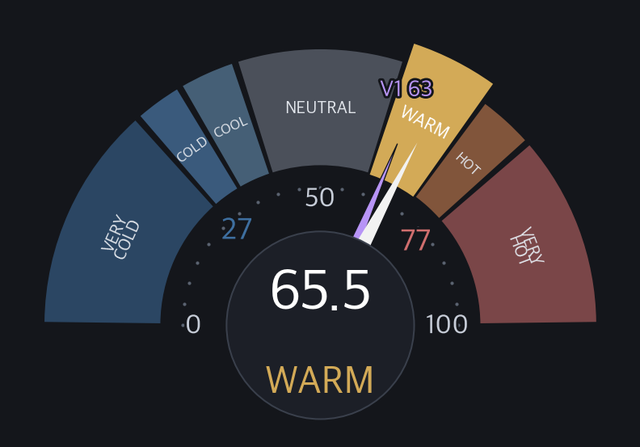
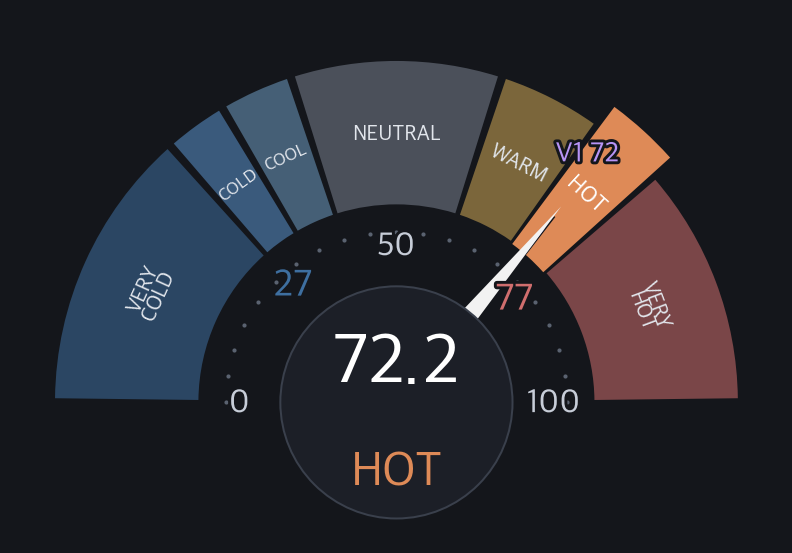
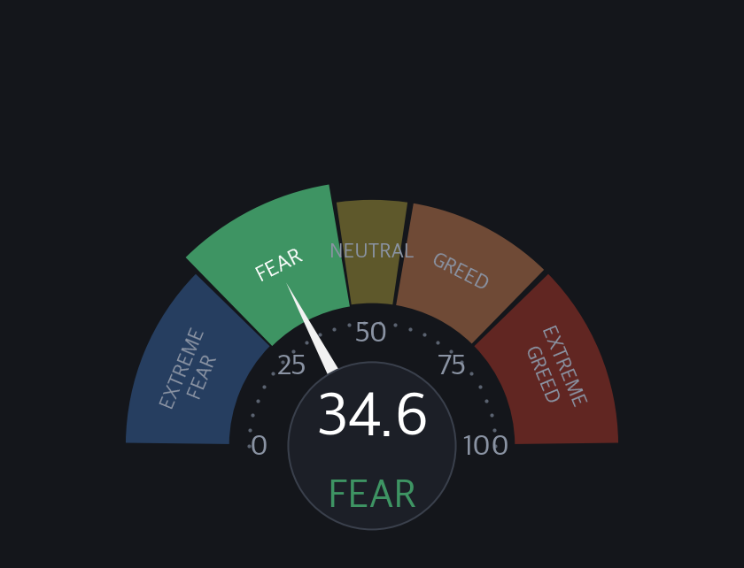
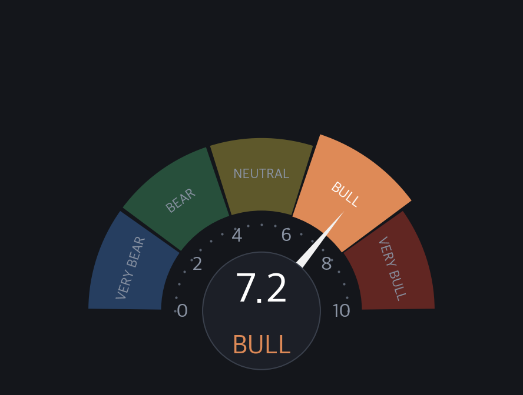
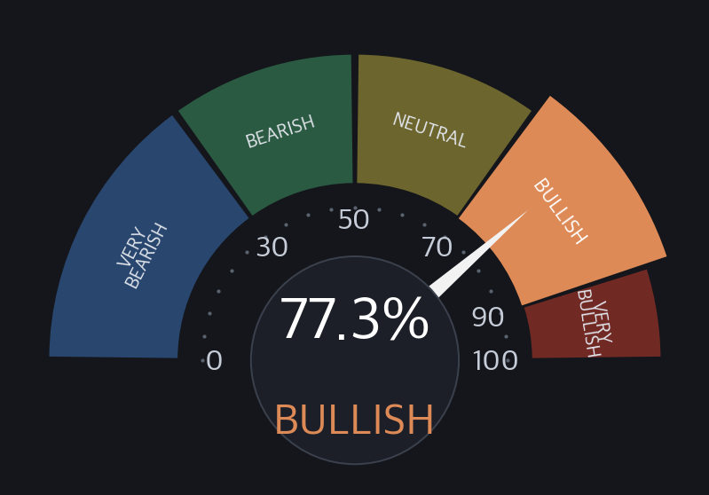

🇺🇸 USINDEX크로스에셋 매크로
NIXSTOCK / US INDEX 크로스에셋 / 정규장 마감 / 개정 v1.12026-10-29
Quad1 골디락스/디스인플레 / reflation(구리, 유가상승) — 상승반전 11종 vs 하락반전 26종 / 구조적 강세크로스에셋 50종 + 각국지수 34종 / tactical 목차 계승 + 매크로층(§1c / §1d) / 마켓온도 임베드 / v1.1 / By Opus 5.5
🗓 US 정규장 마감2026-10-30 (금) 05:00 KST / 2026-10-29 (목) 16:00 ET
🌗
종합 레짐 판정 / 결론 먼저
Quad1 골디락스/디스인플레
Quad1 골디락스/디스인플레 / reflation(구리, 유가상승) — 상승반전 11종 vs 하락반전 26종
구조적 강세(bull)
★결론 — 크로스에셋 정합: Quad1 / 하락반전 우세(11:26) / ★전환 Quad2→Quad1 / 판정신뢰도 high
★왜 이 레짐? — 성장축 rising(상승: 구리/금 5.91% / 미10Y -4.74%) + 인플레축 falling(하락: TIP/IEF -0.14% / 유가 10.76% / 금 -3.95%) → 두 축 20일 방향 조합이 Quad1 칸 (§1d)
★무엇이 움직였나? (IN = 상승반전 / OUT = 하락반전) = 자산군이 한 방향으로 정렬될수록 추세 신뢰↑ (§2c / §4)IN USD/BRL / 3M금리 / 투자등급 / 장기국채 / 7-10Y TreasuryOUT 농산물 / 금 / 백금 / 알루미늄 / 천연가스
★각국 RRG54 — 주도 대만 / 개선 FTSE100, EuroStoxx50, AEX 외 15 / 약화 KOSPI200, 니케이 / 후행 KOSPI, KOSDAQ종합, KOSDAQ150 외 10 (§3)
★구조 — 국가지수 34개 중 58.8% 가 200일선 위 / SPY 200일선 아래 = 구조적 강세장 → Quad1 라도 방어 전환은 아직 아님 (§5)
★금 ▼ -0.38% / BTC ▼ -1.17% / 달러 ▼ -0.27% / 미10Y ▼ -1.11%
§1매크로 / 온도 컨텍스트 (온도 스냅샷 임베드)
온도, 매크로 = 마켓온도 스냅샷 2026-10-29 임베드(재계산 아님, 크로스번들 src) / ★통합 US 기준(인포그래픽=US500 기준, 수치 다름 정상) / 일봉 V2 65.4°C WARM
일봉as-of 2026-10-29
V2 65.4℃ 전일대비 ▲ +1.1WARM
V1 62.7℃ 전일대비 ▼ -3.0

주봉as-of 2026-10-29
V2 65.5℃ 전주대비 ▲ +6.4WARM
V1 62.8℃ 전주대비 ▲ +1.0

월봉as-of 2026-10-29
V2 72.2℃ 전월대비 ▲ +29.1HOT
V1 72.5℃ 전월대비 ▲ +35.6

금as-of 2026-10-29
4,036.40 ▼ -0.38%1년저점권
은as-of 2026-10-29
52.31 ▼ -2.14%1년저점권
구리as-of 2026-10-29
6.59 ▼ -0.72%1년고점권
WTIas-of 2026-10-29
102.86 ▲ +0.08%중립권
BTCas-of 2026-10-29
80,317.13 ▼ -1.17%1년고점권
달러as-of 2026-10-29
101.91 ▼ -0.27%1년고점권
미10Yas-of 2026-10-29
4.99 ▼ -1.11%중립권
미30Yas-of 2026-10-29
5.33 ▼ -0.60%중립권
하이일드as-of 2026-10-29
77.58 ▼ -0.01%1년저점권
크레딧 (자체)as-of 2026-10-29
MEDIUM (2/3 LH)B 경고
SPY 고점 상승 + 신용 ETF 2/3 고점 하락 = 신용 시장 경고
HY OAS (업계)as-of 2026-10-28
3.14% ▼ -4bpE 안일
단계 좁음
구간 3% 이상 4% 미만
VIXas-of 2026-10-29
17.20 ▲ +1.7%D 정상
구간 12 이상 20 미만
SKEWas-of 2026-10-28
148.74 ▼ -0.3%C 주의
단계 높음
구간 146 이상 156 미만
MOVEas-of 2026-10-29
93.54 ▼ -1.1%D 정상
구간 80 이상 100 미만
크레딧 다이버전스 MEDIUM 2/3 LH — HYG LH / JNK LH / BKLN HH = MEDIUM 다이버전스: SPY HH + 신용 ETF 2/3 LH (HYG/JNK) → 신용 시장 경고. 주봉 MEDIUM 2/3 LH — 다이버전스 MEDIUM (SPY HH / 신용 ETF LH 2/3) (마지막 주봉 2026-10-29 (진행 중 주 포함)). 위험 지표 판정 (업계 구간): VIX 17.20 정상 / SKEW 148.74 높음 / MOVE 93.54 정상 / HY OAS 3.14% 좁음 (기준일 2026-10-29 / US tactical 임베드).
🧭 NixCTA 추세 53.9 NEUTRAL (주식 61 / 채권 30 / 원자재 51 / USD 85 / 0~100, 50중립 / 추세추종 리플리케이션 / OOS검증: 약세장 한정 역방향 경향(강건성 미달, 참조))
F&G (CNN)as-of 2026-10-29
34.6 ▲ +0.20공포

1주 전 19.99 / 1달 전 31.06
BofA B&Bas-of 2026-10-21
7.2 ▼ -0.90강세

NixB&Bas-of 2026-10-29
4.72 ▼ -0.20중립

구성 4
시장 폭as-of 2026-10-29
77.3%BULLISH
상승 1155 / 하락 340 / 구성 1495종목

시장 폭 (breadth / 지수별 강세%) — 마켓온도 임베드
| No | 지수 | 강세% | 등급 |
|---|---|---|---|
| 1 | S&P 500 | 80.32% | BULLISH |
| 2 | Nasdaq 100 | 59.41% | NEUTRAL |
| 3 | Dow 30 | 80.0% | BULLISH |
| 4 | S&P MidCap 400 | 77.69% | BULLISH |
| 5 | S&P SmallCap 600 | 74.37% | BULLISH |
| 6 | Russell 2000 | 62.55% | NEUTRAL |
§W위기 지표 종합 (US / 2026-10-29)
A 위기 0 / B 경고 2 / C 주의 2 / D 정상 8 / E 안일 2 (판정 14 / 단계 없음 5)
B 경고 = CCC−BB 질 분화 (하위 등급 스프레드 격차) 11.23pp (크게 벌어짐) / 크레딧 다이버전스 (자체) MEDIUM (2/3 LH)
E 안일 = HY OAS (업계) 3.14% (좁음) / S&P 500 1년 고점 대비 낙폭 (SPY) -1.57% (고점 근처)
| No | 구분 | 지표 | 값 | 변화 | 단계 | 판정 | 기준일 |
|---|---|---|---|---|---|---|---|
| 1 | 변동성 | VIX | 17.20 | ▲ +1.7% | D 정상 | – | 2026-10-29 |
| 2 | 변동성 | SKEW | 148.74 | ▼ -0.3% | C 주의 | 높음 | 2026-10-28 |
| 3 | 변동성 | MOVE | 93.54 | ▼ -1.1% | D 정상 | – | 2026-10-29 |
| 4 | 신용 | HY OAS (업계) | 3.14% | ▼ -4bp | E 안일 | 좁음 | 2026-10-28 |
| 5 | 신용 | HY OAS 1달 확대 속도 | +12bp | – | D 정상 | 보통 2026-09-28 대비 22봉 (평일 관측) | 2026-10-28 |
| 6 | 신용 | CCC−BB 질 분화 (하위 등급 스프레드 격차) | 11.23pp | ▼ -11bp | B 경고 | 크게 벌어짐 수준 11.23pp 벌어짐 / 1달 +160bp 확대 매우 빠름 (+150bp 이상) → 속도 기준 크게 벌어짐 / 2008-01-01 이후 백분위 93.2 = 위치 표기 | 2026-10-28 |
| 7 | 신용 | 크레딧 다이버전스 (자체) | MEDIUM (2/3 LH) | – | B 경고 | – | 2026-10-29 |
| 8 | 심리 | F&G (CNN) | 34.60 | ▲ +0.20 | C 주의 | 공포 | 2026-10-29 |
| 9 | 심리 | BofA Bull & Bear | 7.2 | ▼ -0.9 2주 전 대비 | D 정상 | 강세 | 2026-10-21 |
| 10 | 심리 | NixB&B (자체) | 4.72 | ▼ -0.20 | D 정상 | 중립 | 2026-10-29 |
| 11 | 시장 내부 | S&P 500 1년 고점 대비 낙폭 (SPY) | -1.57% | ▼ -0.38pp | E 안일 | 고점 근처 1년 고점 781.62 / 종가 769.36 | 2026-10-29 |
| 12 | 시장 내부 | 마켓온도 (자체 / Composite 1500 V2) | 65.43 | ▲ +1.1 | D 정상 | WARM | 2026-10-29 |
| 13 | 시장 내부 | 시장폭 (Composite 1500 상승 비율) | 77.26% | – 직전 값을 싣지 않음 | D 정상 | BULLISH | 2026-10-29 |
| 14 | 시장 내부 | 지수 양극화 (자체 / S&P500 vs 러셀2000) | 8.97 | – 직전 값을 싣지 않음 | D 정상 | 경미 우위 = 대형(S&P500) | 2026-10-29 |
| 15 | 금리와 여건 | NFCI (전미 금융여건지수) | -0.487 | ▲ +0.009 | 등급 없음 | 평균보다 루즈 | 2026-10-23 |
| 16 | 금리와 여건 | STLFSI4 (세인트루이스 금융스트레스지수) | -0.584 | ▲ +0.049 | 등급 없음 | 평균 이하 스트레스 | 2026-10-23 |
| 17 | 금리와 여건 | 장단기 금리차 (10년 − 3개월) | +0.99pp | ▼ -5.9bp | 등급 없음 | 비역전 | 2026-10-29 |
| 18 | 금리와 여건 | 美 10년 금리 | 4.989% | ▼ -5.6bp | 등급 없음 | 1년 범위 위치 73% (중립권) | 2026-10-29 |
| 19 | 금리와 여건 | 달러 지수 DXY | 101.91 | ▼ -0.27% | 등급 없음 | 1년 범위 위치 86% (1년고점권) | 2026-10-29 |
killswitch (자체 포스처) = 유지(주의) / 킬스위치 A단계 점화 / 자체 포스처 (등급 글자 없음)
겹침: F&G (CNN) 재료에 VIX 와 정크본드 수요가 있고 마켓온도 재료에도 VIX 가 있다 → 단계별 개수만 센다 (합산 점수 없음)
겹침: S&P 500 낙폭 / VIX / 마켓온도는 같은 하락 사건을 다른 각도로 재므로 한 사건이 여러 줄에 같이 뜬다 → 단계별 개수만 센다
겹침: HY OAS 수준 / HY OAS 1달 확대 속도 / CCC−BB 질 분화 / 크레딧 다이버전스는 같은 신용 스트레스를 다른 각도로 재므로 한 사건이 여러 줄에 같이 뜬다 → 단계별 개수만 센다
0 기준 지표: NFCI / STLFSI4 / 장단기 금리차 = 발행기관 0 기준 규약만 (등급 없음)
1년 위치 지표: 美 10년 금리 / DXY = 공식 구간이 없어 1년 위치만 (등급 없음)
등급은 상태 설명이다 (매매 신호 아님)
표에 없는 지표 (사유)
★실질금리 (10년 TIPS) = 로컬 데이터 없음
★VIX 기간구조 (VIX9D / VIX3M) / VVIX / OVX = 로컬 데이터 없음
★장단기 금리차 (10년 − 2년) = 2년 금리 로컬 시세가 선물이라 최근 1년 중 절반 넘는 날이 전일과 같은 값 (거래량 0) → 신뢰 불가 / 표에는 10년 − 3개월 로 대신
★CCC OAS (등급별 스프레드) = 수집 중이나 CCC 단독 수준은 업종 쏠림과 생존 편향이 섞여 표에 넣지 않음 (BB 와의 차이 = CCC−BB 질 분화 행)
★IG / BB / B OAS (등급별 스프레드) = 수집 중이나 BB 는 CCC−BB 질 분화 행의 재료로만 쓰고 IG / B 는 단계 근거가 없어 표에 넣지 않음
★ANFCI (조정 NFCI) = 수집 중이나 NFCI 에서 경기 요인을 뺀 같은 계열이라 표에는 NFCI 만 넣음
★ICE BofA 유효금리 (HY 전체 / CCC 이하) = 수집 중이나 위기 단계를 나눌 기준이 없고 OAS 판정의 입력도 아니라 표에 넣지 않음
★McClellan 오실레이터 (시장 내부 확산) = 수집 중이나 위기 단계 기준이 없어 표에 넣지 않음
★CFTC 선물 포지션 (CoT) = 수집 중이나 위기 단계 기준이 없어 표에 넣지 않음
★그 밖의 시장 지표 (교차 환율 / 금 / 구리 / 원유 등 상품 / 30년 금리 / 5년 금리 / 장기채 ETF) = 수집하지만 위기 단계를 나눌 공식 구간이 없어 이 표의 단계 대상이 아님
§V 검증: 온도 최근 신호 [M] ⚠️고점다이버전스 (2026-08-31, 2봉전) / [M] 🔻더블탑(08-31) (2026-09-30, 1봉전) / ⚠️고점다이버전스 (2026-10-06, 17봉전) / 🔻더블탑(10-06) (2026-10-08, 15봉전) = 고점 다이버전스(가격 신고가 vs 온도 미갱신) / 더블탑. 검증 결과(tactical fwd_audit) — 고점 X(h54 하락 28%) / US 고점 약함(매도 신호 아님) — 고점신호 후 h54 하락 28%(<50%) / 기저 h54 상승 76% / 바닥 O(h54 상승 78%) = 고점 트리거 Edge 없음 → 반전은 크레딧, 폭, 크로스에셋 RRG로 판단. 온도=하방 리스크 크기지 타이밍 아님. (온도 기준일 2026-10-29 / 검증 기준일 2026-10-29)
§1a촉매 캘린더 (SSOT / 정책/지표/뉴스)
외부 웹+폴리마켓 직접 수집 / ticker-analysis v1.5
주요 문제: 크레딧 경고 / 금리 경로 불확실 (주의)
지난 FOMC(2026-10-28 D+1) 결과 미확보(기록 대기) → 📅 다음 FOMC(2026-12-09 D-41) / 인상확률 76% ▼ 3pp (직전 79% → 76% / 2026-10-29 조사 대비) / 동결확률 22% / 인하확률 2% (실시간 조사 / Kalshi / 조사 2026-10-30 03:58 KST)
폴리마켓, 예측시장 확률 (연준 / 실시간 조사)
| No | 시장 | 확률 | 소스 | 조사시각 |
|---|---|---|---|---|
| 1 | FOMC(2026-12-09 D-41) 금리결정 | 인상확률 76% / 동결확률 22% / 인하확률 2% | Kalshi | 실시간 조사 / 조사 2026-10-30 03:58 KST |
🌡 실시간 매크로(SSOT) / VIX 17.2 (+1.71%) / 달러인덱스 DXY 101.92 (-0.26%) / 미 10년물 금리 4.99 (-1.09%) / CNN 공포탐욕지수(US) 34.60 (Fear) / 공포탐욕지수(KR) 26.75 (Fear) / S&P500 선물 7710.0 (-0.94%) (조사 2026-10-30 06:17 KST)
📰 뉴스(SSOT)
• [속보] TCL 중환 재생에너지 기술, 3분기 순손실 14억 위안 기록 (조사 2026-10-29 22:30 KST / 7시간 전)
• 독일의 메르츠: 라가르드는 어려운 시기에 ECB를 당당하게 이끌었다 (조사 2026-10-29 22:30 KST / 7시간 전)
• 유럽 채권 및 주식 시장, 상승세 유지… 라가르드 총재의 조기 긴축 종료 확인에 따라 ECB 회의에 이목 집중 (조사 2026-10-29 22:30 KST / 7시간 전)
이벤트 타임라인
| No | 일자 | 이벤트 | 중요도 | 영향 |
|---|---|---|---|---|
| 1 | 2026-11-03 D-5 | 미국 중간선거 | 🟡 | 정치, 선거 / policy_calendar |
| 2 | 2026-11-06 D-8 | 고용(Employment Situation) | 🟡 | 고용 / FRED |
| 3 | 2026-11-10 D-12 | CPI | 🔴 | 인플레 지표 / FRED |
| 4 | 2026-11-13 D-15 | PPI | 🔴 | 인플레 지표 / FRED |
| 5 | 2026-11-18 D-20 | 10월 FOMC 의사록 공개 | 🔴 | 금리, 정책 / policy_calendar |
| 6 | 2026-11-25 D-27 | PCE(개인소비, 연준선호물가) | 🔴 | 성장, 소비(PCE/GDP) / FRED |
| 7 | 2026-11-25 D-27 | GDP(속보/확정치) | 🔴 | 성장, 소비(PCE/GDP) / FRED |
| 8 | 2026-12-04 D-36 | 고용(Employment Situation) | 🟡 | 고용 / FRED |
| 9 | 2026-12-09 D-41 | 미 연준 FOMC | 🔴 | 금리, 정책 / policy_calendar |
| 10 | 2026-12-10 D-42 | CPI | 🔴 | 인플레 지표 / FRED |
| 11 | 2026-12-15 D-47 | PPI | 🔴 | 인플레 지표 / FRED |
| 12 | 2026-12-23 D-55 | PCE(개인소비, 연준선호물가) | 🔴 | 성장, 소비(PCE/GDP) / FRED |
| 13 | 2026-12-23 D-55 | GDP(속보/확정치) | 🔴 | 성장, 소비(PCE/GDP) / FRED |
| 14 | 2026-12-30 D-62 | 12월 FOMC 의사록 공개 | 🔴 | 금리, 정책 / policy_calendar |
§1b자산군 내부분산 (tilt)
asset_group_internal(producer 60% 다수결 5단계) 소비 / 5그룹(각국지수 포함) / tilt=반전 방향 쏠림 / 렌더 재계산 없음
BULL 대부분↑BULL(선별) ↑우세MIXED 혼재BEAR(선별) ↓우세BEAR 대부분↓
| No | 자산군 | 편향 | ▲/▼ 반전 | 종목수 |
|---|---|---|---|---|
| 1 | 원자재 | BEAR | ▲6 / ▼12 | 19종 |
| 2 | 코인 | BEAR | ▲1 / ▼3 | 5종 |
| 3 | 환율 | BULL | ▲10 / ▼1 | 13종 |
| 4 | 금리 | BULL | ▲9 / ▼3 | 13종 |
| 5 | 각국지수 | BEAR(선별) | ▲13 / ▼17 | 34종 |
§1c매크로 정성층 — 반전의 "왜"
정책, 통화, 지정학, 폴리마켓 시계열 = 매크로 반전의 근본 동인 (tactical엔 없는 index 전용층 / 수치=스냅샷 실측, 뉴스=§1a SSOT)
★연준 확률 — FOMC(2026-12-09 D-41) 금리결정 인상확률 76% / 동결확률 22% / 인하확률 2% (소스 Kalshi / 실시간 조사 / 조사 2026-10-30 03:58 KST)
★에너지, 원자재 동인(실측) — WTI 102.86(+0.1% 일간 / +10.8% 20일) / 금 20일 -4.0% / 구리/금 20일 +5.9% = 인플레축 하락 재료(§1d 판정과 동일 값)
★통화, 달러 경로(실측) — 달러지수 101.91(-0.3%) / 미10Y 4.99%(-4.7% 20일) / 미3M 4.0% = 성장축 상승 재료 / 달러 하락(당일) — 정책 뉴스, 헤드라인은 §1a SSOT 블록(조사시각 동봉) 참조
★정성 히스토리(폴리마켓 확률 시계열, 이벤트 타임라인, regime 히스토리 DB)=macro_qual 시점값. LOCAL nix_macro_qualitative_history 보강 시 선행성 사후 검증 가능.
§1d성장 × 인플레 4사분면 (regime 본체)
업계표준(달리오/42Macro/Hedgeye) regime — tactical엔 없는 index 전용층
Quad1 ◀ 현재
골디락스
성장↑, 인플↓
우위: 주식, 성장주, 크레딧
Quad2
리플레이션
성장↑, 인플↑
우위: 원자재, 에너지, 소재, 가치
Quad3
스태그플레이션
성장↓, 인플↑
우위: 금, 원자재, 현금
Quad4
리스크오프
성장↓, 인플↓
우위: 미국채, 달러, 방어주
◈ 매크로 궤적 — 최근 20일 (성장, 인플레) 종합 20일변화 이동 / 선 굵을수록 최근 / ★=현재 / 상태 컨텍스트(내부 산식, 피처 비공개)
⚠ 성장축 경계 근접 — 골디락스 ↔ 리스크오프 전환 주시. 현재 점이 축(0) 부근이라 단기 노이즈로 사분면이 뒤바뀔 수 있음(확정 아님).
🏛 200일 구조 레짐 = 구조적 강세 (국가지수 34개 중 58.8% 200일선 위 / SPY 아래) — breadth 축(좌표 아님). 20일 궤적이 이 방향과 같으면 추세 강화, 역이면 단기 되돌림/구조 전환 주시.
🎯 국면 이동 주도 동인 — 5대 재료 20일 기여 랭킹
★ 유가 인플레+10.76% 인플레↑
구리/금 성장+5.91% 성장↑
미10Y 성장-4.74% 성장↓
금 인플레-3.95% 인플레↓
TIP/IEF 인플레-0.14% 인플레↓
최대 동인 유가 +10.76%(인플레↑) — 이 이동이 어느 재료 주도인지 규명. 값=스냅샷 20일 변화(방향, 크기, 산식 비공개).
★현재 Quad1 골디락스/디스인플레 — 성장축 rising(구리/금 5.91% / 10Y -4.74%) / 인플레축 falling(TIP/IEF -0.14% / 유가 10.76% / 금 -3.95%)
★전환 ★Quad2→Quad1 / confidence high / 하위 서술 reflation(구리, 유가상승)
★주식 방향 (현재 칸, 과거 실측) — 중립 / 평균 초과수익 -0.11pp (등급 ±) / 연속 구간 239회 / 사분면별 ^GSPC 선행 22봉 평균 초과수익 등급 → ++/+ 우호, ± 중립, −/−− 역풍
🔰해석 — 구리/금 비율과 미10Y 금리가 상승 중 = 시장이 경기(성장) 상승에 베팅 / 물가연동채(TIP/IEF) / 유가, 금이 하락 중 = 물가(인플레) 하락에 베팅 → 두 축을 교차하면 Quad1 골디락스/디스인플레 칸. 이 칸에서 업계 표준 프레임(달리오, 42Macro, Hedgeye)이 지목하는 자산군 = 주식, 성장주, 크레딧 — 외부 프레임의 라벨이며, 우리 데이터로 맞는지는 §1dV 에서 대조. (매매 신호 아님 — 어떤 자산군이 유리한 "환경"인지 지도)
방법론: 달리오, 42Macro, Hedgeye 표준 4사분면 / 20일 방향 / 성장=구리/금, 10Y / 인플레=TIP/IEF, 유가, 금 / 알고리즘 비공개(자작 산식, 가중 비공개). 판정=크로스에셋 정합(단일 데이터 아님)
§1dV레짐 검증 — Quad별 자산군 조건부 성과 (2008~ 자체 실측)
§1d 의 "우위" 는 외부 프레임 라벨 — 같은 규칙으로 과거를 소급 재판정해 자산군 forward 성과를 직접 잰다(검증 첨부 요건)
★ 결론 (레짐 처방 자체 검증)⚠️ 프레임 불일치
Quad1 조건부 실측 — 상위 금 +0.16pp / 하위 달러 -0.26pp
왜? (데이터 → 결론)
★Quad1 국면에서 실측 상위 = 금 (평균 초과 +0.16pp / hit 56.4% vs 기저 55.2% = edge +1.2pp) / 하위 = 달러 (-0.26pp)
★프레임(달리오, 42Macro, Hedgeye 표준 매핑) 우위 = 주식, 성장주, 크레딧 → 자체 실측 상위 절반에 0/3 일치
불일치 주식, 크레딧
대응 프록시 없음(미검증) 성장주
불일치 주식, 크레딧
대응 프록시 없음(미검증) 성장주
→표본 — Quad1 는 2008-01-02~2026-10-29 전체의 20.2%(952봉 / 에피소드 241회) / 그중 forward 22봉 계산이 가능한 표본 941봉(에피소드 239회 — 끝 22봉이 빠져 전기간보다 조금 적다) / 겹침 보정 유효표본 neff ≈ 46(주식 기준 / 자산별 22~49)
→검증 — 과거 소급 재판정의 최종봉 Quad1 vs 이 리포트 라이브 판정 Quad1 → 일치 = 과거 라벨링이 오늘 판정과 같은 자로 매겨졌다는 뜻
위 4개 합쳐진 결과가 판정.
현재 Quad1 골디락스/디스인플레 — 자산군별 조건부 성과 (forward 22봉 ≈ 1달 / 초과 = 무조건 평균 대비)
| No | 자산군(프록시) | 평균 초과 | 중앙값 초과 | hit | 기저 | edge | 표본(봉/에피소드/neff) | 등급 |
|---|---|---|---|---|---|---|---|---|
| 1 | 금 GC=F | ▲ +0.16pp | ― 0.00pp | 56.4% | 55.2% | ▲ +1.2pp | 941봉 / 239ep / neff 48 | ± |
| 2 | 원자재 DBC | ▲ +0.05pp | ▼ -0.02pp | 53.0% | 53.5% | ▼ -0.5pp | 941봉 / 239ep / neff 39 | ± |
| 3 | 현금 ^IRX | ― 0.00pp | ▼ -0.01pp | — | — | — | 941봉 / 239ep / neff 22 | ± |
| 4 | 중기국채 IEF | ▼ -0.03pp | ▼ -0.09pp | 49.4% | 50.8% | ▼ -1.4pp | 941봉 / 239ep / neff 41 | ± |
| 5 | 장기국채 TLT | ▼ -0.10pp | ▼ -0.03pp | 48.4% | 48.2% | ▲ +0.1pp | 941봉 / 239ep / neff 42 | ± |
| 6 | 주식 ^GSPC | ▼ -0.11pp | ▲ +0.18pp | 68.2% | 66.9% | ▲ +1.3pp | 941봉 / 239ep / neff 46 | ± |
| 7 | 하이일드 HYG | ▼ -0.13pp | ▲ +0.01pp | 53.5% | 53.4% | ― 0.0pp | 941봉 / 239ep / neff 49 | ± |
| 8 | 달러 DX-Y.NYB | ▼ -0.26pp | ▼ -0.21pp | 48.2% | 52.7% | ▼ -4.5pp | 941봉 / 239ep / neff 43 | ± |
전 국면 매트릭스 — 등급 + 평균 초과수익(pp / forward 22봉) / ◀ = 현재 국면 / 열 머리 ep = 전기간 에피소드 수(위 상세표 ep 는 forward 22봉 계산이 가능한 구간 기준이라 조금 적다)
| No | 자산군 | Quad1 골디락스/디스인플레 / 20.2% / 241ep | Quad2 리플레이션 / 30.3% / 291ep | Quad3 스태그플레이션 / 23.5% / 268ep | Quad4 디플레/리스크오프 / 26.0% / 226ep |
|---|---|---|---|---|---|
| 1 | 주식 | ◀ ± ▼ -0.11pp | ± ▲ +0.40pp | ± ▼ -0.27pp | ± ▼ -0.13pp |
| 2 | 장기국채 | ◀ ± ▼ -0.10pp | ± ▼ -0.42pp | ± ▼ -0.48pp | + ▲ +1.01pp |
| 3 | 중기국채 | ◀ ± ▼ -0.03pp | ± ▼ -0.19pp | ± ▼ -0.28pp | + ▲ +0.50pp |
| 4 | 금 | ◀ ± ▲ +0.16pp | ± ▲ +0.25pp | − ▼ -0.73pp | ± ▲ +0.24pp |
| 5 | 원자재 | ◀ ± ▲ +0.05pp | + ▲ +0.53pp | + ▲ +0.64pp | − ▼ -1.23pp |
| 6 | 달러 | ◀ ± ▼ -0.26pp | ± ▼ -0.12pp | ± ▲ +0.24pp | ± ▲ +0.12pp |
| 7 | 하이일드 | ◀ ± ▼ -0.13pp | ± ▲ +0.05pp | ± ▼ -0.19pp | ± ▲ +0.21pp |
| 8 | 현금 | ◀ ± ― 0.00pp | ± ▼ -0.01pp | ± ▲ +0.01pp | ± ▲ +0.01pp |
▶ 해석
– 표의 숫자는 예측이 아니라 과거 기록 — '그 국면일 때 실제로 어땠나' 입니다
– 평균 초과 = 아무 때나 산 경우보다 얼마나 더/덜 벌었나(pp) / hit = 오른 비율 / edge = hit − 기저
– ep(에피소드)가 적으면 우연일 수 있어 ⚠️ 를 붙입니다 — 봉 수는 서로 겹쳐 있어 그대로 믿으면 안 됩니다
방법 — 2008~ 각 봉 Quad 소급 재판정(라이브와 동일 규칙: 성장, 인플레 축 20봉 방향 부호 다수결) → 자산군 프록시 8종 forward 22봉 수익률을 Quad 별로 집계. ①평균 초과 = 조건부 평균 − 무조건 평균 / ②중앙값 초과 = 조건부 중앙값 − 무조건 중앙값 / ③hit = 조건부 상승비율, edge = hit − 기저 hit. n_episode = 연속 Quad 구간 수 / neff = n_bars × 1/(1+2×Σ(1−k/N)ρ_k) (겹침 보정 유효표본). 등급 — 등급 = 평균 초과수익(pp) 표시 전용 구간: ++ ≥ +2.0 / + ≥ +0.5 / ± ≥ −0.5 / − ≥ −2.0 / −− 그 미만 재현 —
scripts/nix_quad_base_rates.py 2026-10-29 --print --verify한계(그대로 표기)
이 표는 환경 지도이지 매매 신호가 아니다. 투자권유(매수, 매도, 비중) 아님.• Quad 판정은 t 시점 데이터만 사용(미래 미참조) / forward 수익률은 t+h 를 쓰므로 데이터 끝 h봉은 전량 제외
• 봉 단위 표본은 h봉만큼 겹친다 — 신뢰도는 n_bars 가 아니라 neff(겹침 보정 유효표본), n_episode 로 볼 것
• neff < 20 = 소표본 ⚠️ (그 칸의 수치는 우연일 수 있음)
• 봉 정렬은 기준 달력 ^GSPC + ffill — 라이브 판정은 티커별 위치 기준이라 경계봉에서 1봉 어긋날 수 있음
• Quad 번호 정의는 소스마다 다르다 — 여기 정의는 성장 rising/falling × 인플레 rising/falling 조합(축 정의 병기 필수)
• 자산군은 단일 프록시 1종 대표 — 자산군 전체가 아니라 그 프록시의 실적
• 가격(배당, 이자 미포함) 기준 — 국채, 하이일드는 절대 수익이 총수익 대비 과소(같은 자산의 Quad 간 비교에는 영향 미미)
• 현금은 3M 금리 캐리 환산 — hit/edge 는 구조적으로 무의미하여 미표기(—)
§1dI레짐 무효화 — 이 판정이 틀리게 되는 조건 (문턱까지 거리)
자동 재갱신은 반증이 아니다 — 축 반전, 구조, 정합 3종 반증 조건을 사전 명시(P1-8 / 값 전부 스냅샷 실측 파생)
⛔ 무효화 — Quad1 판정이 틀리게 되는 반증 조건 (문턱까지 거리 실측)
| 판정 | 무효화 조건 (관측치, 임계, 지속) | 현재 ↔ 문턱 거리 | 확인 시점, 주기 | 틀리면 — 상정 손실, 조치 |
|---|---|---|---|---|
| 성장축 상승(rising) 반전 | 구리/금 20일 변화 −전환 = 축 다수결이 하락(falling) 로 반전 | 구리/금 +5.91% → 0 까지 -5.91pp | 매 일봉 마감 (20봉 방향 자동 재판정) | Quad1 폐기 → Quad4 디플레/리스크오프 시나리오로 이동 — 프레임 우위 후보 미국채, 달러, 방어주(§1dV 실측 대조) |
| 인플레축 하락(falling) 반전 | TIP/IEF 20일 변화 +전환 = 축 다수결이 상승(rising) 로 반전 | TIP/IEF -0.14% → 0 까지 +0.14pp | 매 일봉 마감 (20봉 방향 자동 재판정) | Quad1 폐기 → Quad2 리플레이션 시나리오로 이동 — 프레임 우위 후보 원자재, 에너지, 소재, 가치(§1dV 실측 대조) |
| 구조 무효화 (200일선) | 국가지수 200일선 위 비율 < 50% 또는 SPY 200일선 이탈 | 현재 58.8% → 50% 까지 -8.8pp / SPY 200일선 아래(이탈) | 매 일봉 마감 (§5 구조 필터) | 구조 bear 전환 → 'Quad1 라도 방어 아직 아님' 논거 폐기 / 방어 우선(§5 killswitch 연동) |
| 크로스에셋 정합 붕괴 | 상승반전/하락반전 구성 역전 — 레짐 수혜 자산이 OUT, 피해 자산이 IN 으로 뒤집힘 | 현재 상승반전 11종 vs 하락반전 26종 (차 15종) | 매 일봉 마감 (§2c RRG-TF6 반전 재집계) | 크로스에셋 정합 상실 → 레짐 판정 신뢰도 강등(confidence 하향) / 단일 축 판정으로 후퇴 |
무효화 = 이 판정이 틀렸다고 인정하는 반증 조건을 미리 적어둔 것 — 문턱 도달을 정해진 시점에 확인하고, 도달하면 판정을 접습니다. 반증 조건이 없는 주장은 테제가 아니라 스토리입니다.
▶ 해석
– 매일 다시 계산하면 판정이 조용히 바뀝니다 — 그건 반증이 아니라 침묵의 수정
– 그래서 '무엇이 관측되면 이 판정을 접는지' 를 미리 적어 둡니다(문턱까지 거리 포함)
– 거리가 0 에 가까울수록 판정이 뒤집힐 여지가 큰 상태 — 확신이 아니라 감시가 필요한 구간
방법 — 무효화 = 사전 정의 반증 조건(P1-2 4필드) / 축 반전 = 라이브 판정 규칙(20봉 방향 부호 다수결, 동점 시 첫 재료) 그대로 역산한 최소 반전 집합 — 0 에 가까운 재료부터 / 구조/정합 문턱 = §5, §2c 의 실제 판정 규칙과 동일 값(별도 임계 발명 없음). 전 수치 = 이 스냅샷 regime/trend_signal_stats 실측 파생(하드코딩 0) 조건 도달 = 자동으로 다음 스냅샷의 판정, §1dV 실측 대조가 갱신된다. 투자권유(매수, 매도, 비중) 아님.
§1dW4계절 노출 — 각 칸이 지금 살아있나 (레짐이 틀렸을 때의 대비)
§1d 는 "지금 어느 계절" / 여기는 "네 계절 각각이 지금 작동하나" (P2-5 / 환경 지도지 매매 신호 아님)
★ 결론 (4계절 노출 / P2-5)
4칸 중 4칸 활성 (Quad1 / Quad2 / Quad3 / Quad4) — 현재 판정 Quad1 칸은 🟢 살아있음
왜? (데이터 → 결론)
→현재 판정 칸 Quad1 골디락스/디스인플레(성장↑, 인플↓) — 대표자산 평균 1달 ▲ +1.15% / 상승반전 신호 2/2종 → 🟢 살아있음
★1달 성과 최상위 칸은 Quad2 리플레이션(▲ +7.08%) — 현재 판정 칸이 아니다 = 노출이 이웃 계절에 더 쏠려 있음(레짐 전환 재료)
→살아있는 칸 4개 — 서로 다른 계절이 동시에 작동 중 = 한 레짐 서사로 전부 설명되지 않는다(전환 구간이거나, 자산군마다 다른 이야기)
위 3개 합쳐진 결과가 판정.
4계절 노출 — 각 칸 대표 자산의 1달(22봉) / 분기(54봉) 성과 + 반전 신호 (보유 비중 아님 / 환경 지도)
Quad1골디락스/디스인플레◀ 현재 판정
성장↑, 인플↓
🟢 살아있음
1달 ▲ +1.15% / 분기 ▼ -2.49%
상승반전 신호 2 / 하락 0 (대표 2종)
주식(S&P500)성과 미확보(유니버스 밖)
하이일드▲ +0.28%
중기국채▲ +2.01%
프레임 우위: 주식, 성장주, 크레딧
Quad2리플레이션
성장↑, 인플↑
🟢 살아있음
1달 ▲ +7.08% / 분기 ▲ +13.28%
상승반전 신호 3 / 하락 0 (대표 3종)
구리▲ +0.77%
원자재지수▲ +5.38%
WTI▲ +15.08%
프레임 우위: 원자재, 에너지, 소재, 가치
Quad3스태그플레이션
성장↓, 인플↑
🟢 살아있음
1달 ▲ +1.43% / 분기 ▲ +1.29%
상승반전 신호 2 / 하락 1 (대표 3종)
금▼ -3.43%
물가연동채▲ +2.34%
원자재지수▲ +5.38%
프레임 우위: 금, 원자재, 현금
Quad4디플레/리스크오프
성장↓, 인플↓
🟢 살아있음
1달 ▲ +2.24% / 분기 ▼ -0.53%
상승반전 신호 3 / 하락 0 (대표 3종)
장기국채▲ +4.17%
달러지수▲ +0.53%
중기국채▲ +2.01%
프레임 우위: 미국채, 달러, 방어주
성장↑ 쪽(주식) 참고 — 온도 일봉 V2 65.4 (WARM)
▶ 해석
– 4칸 = 경기(성장)와 물가(인플레) 가 오르내리는 네 가지 계절 — §1d 는 '지금 어느 계절인가' 를 본다
– 여기서는 반대로 '각 계절 대표 자산이 지금 살아있나' 를 본다 — 계절 판정이 틀려도 뭐가 작동 중인지 보이게
– 여러 칸이 동시에 살아있으면 한 서사로 설명되지 않는 구간 / 한 칸만 살아있으면 그 판정이 틀릴 때 완충이 없다
방법 — Dalio All Weather 관점 — '지금 어느 칸'(§1d) 이 아니라 '각 칸이 지금 살아있나'. 칸별 대표 자산 = §1d 프레임 매핑과 같은 계보 / 상태 = 평균 1달 성과 부호 + 상승/하락 반전신호 다수결 2표 일치(표시 전용 라벨, 자작 신호나 임계 아님). 전 수치 = 이 스냅샷 performance, cross_asset 실측 파생(하드코딩 0) / '노출' 은 보유 비중이 아니라 계절 대표 자산의 활성 상태 — 환경 지도지 매매 신호 아님
제외(사유 그대로)
칸 상태는 표시 전용 라벨(위 두 입력이 그대로 보인다) — 판정 임계, 매매 신호 아님. 어떤 자산군이 유리한 "환경"인지 지도이며 투자권유(매수, 매도, 비중) 아님. 이 스트립의 목적은 자체 확률, 레짐 모델의 판정을 자산군 실측 성과로 교차검증하는 것(모델 확률 검증용)이며, 투자자문이 아니고 컴플라이언스를 준수한다.• 현금(미 3M) — 가격이 아니라 캐리라 다기간 성과 비교 불가 (§1dV 조건부 성과에서는 캐리 환산으로 별도 처리)
§1e7 Cycle Stack + 자산군 우선순위 (멀티에셋 지도)
② 7-cycle 병렬 + ⑦ 자산군 우선순위 — 멀티에셋 의사결정 지도(regime 확장, index 전용층)
★7단계 판독 결론 — 현금, 단기 / 비달러 통화 우위 / 주식 / 금, 원자재 / 크립토 약세
어떻게 나온 결론? — 성장 확장(구리, 10Y금리) + 달러 약세(달러지수) + 신용 완화(하이일드 자금 흐름) 조합 → 이런 국면에서 역사적으로 유리했던 자산군 순서대로 정렬(아래 카드=사이클별 근거). 매매 신호 아님 — 어떤 자산군이 유리한 "환경"인지 지도.
Growth
확장
구리, 10Y금리가 올라감 = 경기 확장에 베팅 중
실측 / 성장축 rising(구리/금, 10Y)
Inventory
혼재
재고 신호 엇갈림
추정 / 원자재 tilt bear, 인플레 falling
Profit
확산
애널리스트 이익전망(EPS) 상향/하향 비율로 실측 판독
실측 / EPS revision breadth 50.0%, 상향우세(n48)
CAPEX
—
설비투자 직접 지표 미보유 = 판단 보류(지어내지 않음)
공백 / 직접 지표 없음
Financial
완화
크레딧 안정 = 돈줄에 여유
실측 / 크레딧 안정
Fiscal
—
재정 직접 지표 미보유 = 판단 보류(지어내지 않음)
공백 / 직접 지표 없음
Dollar
약세
달러지수 하락 = 금, 원자재, 비달러 자산에 유리한 환경
실측 / DXY 101.91(-0.27%)
| 순위 | 자산군 | 판정 | 판정 근거 |
|---|---|---|---|
| 1 | 현금, 단기 | 🔴 우위 | 미3M 유입(rotation IN) |
| 2 | 비달러 통화 | 🔴 우위 | RRG-TF6(6기간) 환율 그룹 10상승/1하락(n13) |
| 3 | 국채, 듀레이션 | 🟡 중립 | 금리 그룹 tilt bull — 금리↑=채권값↓ (RRG-TF6(6기간) 금리 그룹 9상승/3하락(n13)) |
| 4 | 크레딧(IG/HY) | 🟡 중립 | 크레딧 rotation 안정 |
| 5 | 주식 | 🔵 약세 | RRG-TF6(6기간) 각국지수 그룹 13상승/17하락(n34) |
| 6 | 금, 원자재 | 🔵 약세 | RRG-TF6(6기간) 원자재 그룹 6상승/12하락(n19) |
| 7 | 크립토 | 🔵 약세 | RRG-TF6(6기간) 코인 그룹 1상승/3하락(n5) |
② 7 Cycle Stack = 거시 사이클 병렬 판독(regime, tilt, rotation, 온도 파생) / 실측 5(Growth, Profit, Financial, Dollar + Inventory 추정) / 공백 2(CAPEX, Fiscal = 데이터 소스 없음, 회색 명시). ⑦ 자산군 우선순위 = tilt+rotation+regime favored 파생. 방법론: 멀티에셋 톱다운 인과지도(거시→사이클→자산). ★"인과"는 서술 프레임 — 국면→자산수익 예측력은 regime/온도 시계열 축적 후 백테스트 검증 대상.
§2성과 — 크로스에셋 매크로 유니버스 (84종)
매크로 지수 유니버스 84종 / 표준 7기간 perf_table + 54주고점比 + RRG-TF6 반전 / 그룹별
| No | 티커 | 종목 | YTD | 5일 | 2주(12) | 1달(22) | 분기(54) | 반년(120) | 1y(245) | RRG-TF6 | 54wH | 최종봉 |
|---|---|---|---|---|---|---|---|---|---|---|---|---|
| 원자재 | ||||||||||||
| 1 | DBC | 원자재지수 | ▲ +50.6% | ▲ +0.5% | ▲ +0.7% | ▲ +5.4% | ▲ +13.2% | ▲ +11.3% | ▲ +47.6% | △ 상승지속 | -1.2% | ✓ |
| 2 | DBA | 농산물 | ▲ +6.3% | ▼ -2.7% | ▼ -4.4% | ▼ -3.8% | ▼ -1.6% | ▼ -2.9% | ▲ +4.1% | ▼ 하락전환 | -8.0% | ✓ |
| 3 | GC=F | 금 | ▼ -6.8% | ▼ -0.6% | ▼ -3.4% | ▼ -3.4% | ▼ -8.7% | ▼ -14.7% | ▲ +1.1% | ▼ 하락전환 | -27.7% | ✓ |
| 4 | SI=F | 은 | ▼ -25.9% | ▼ -4.5% | ▼ -11.6% | ▼ -13.8% | ▼ -19.4% | ▼ -34.9% | ▲ +9.5% | ▽ 하락지속 | -56.9% | ✓ |
| 5 | PL=F | 백금 | ▼ -29.9% | ▼ -4.9% | ▼ -10.1% | ▼ -11.3% | ▼ -13.6% | ▼ -27.2% | ▼ -2.5% | ▼ 하락전환 | -47.7% | ✓ |
| 6 | PA=F | 팔라듐 | ▼ -39.8% | ▼ -4.6% | ▼ -10.2% | ▼ -16.5% | ▼ -24.1% | ▼ -32.3% | ▼ -27.7% | ▽ 하락지속 | -53.8% | ✓ |
| 7 | HG=F | 구리 | ▲ +16.9% | ▲ +3.6% | ▼ -1.3% | ▲ +0.8% | ▲ +0.0% | ▲ +5.5% | ▲ +33.3% | △ 상승지속 | -3.5% | ✓ |
| 8 | ALI=F | 알루미늄 | ▲ +8.3% | ▼ -0.3% | ▲ +1.7% | ▼ -4.2% | ▼ -6.2% | ▼ -9.3% | ▲ +14.8% | ▼ 하락전환 | -24.1% | ✓ |
| 9 | CL=F | WTI | ▲ +79.5% | ▲ +3.4% | ▲ +9.3% | ▲ +15.1% | ▲ +26.6% | ▲ +7.8% | ▲ +73.1% | △ 상승지속 | -13.9% | ✓ |
| 10 | BZ=F | 브렌트 | ▲ +83.7% | ▼ -1.4% | ▲ +5.6% | ▲ +8.8% | ▲ +28.2% | ▲ +10.2% | ▲ +76.1% | △ 상승지속 | -11.5% | ✓ |
| 11 | NG=F | 천연가스 | ▼ -19.8% | ▲ +3.8% | ▼ -11.6% | ▼ -3.6% | ▲ +6.5% | ▲ +5.3% | ▼ -33.4% | ▼ 하락전환 | -62.9% | ✓ |
| 12 | RB=F | 가솔린 | ▲ +82.9% | ▼ -2.2% | ▼ -4.4% | ▼ -5.3% | ▼ -0.7% | ▼ -11.9% | ▲ +58.0% | ▼ 하락전환 | -18.8% | ✓ |
| 13 | HO=F | 난방유 | ▲ +117.6% | ▼ -6.7% | ▼ -6.7% | ▼ -6.0% | ▲ +8.3% | ▲ +18.0% | ▲ +84.4% | ▼ 하락전환 | -15.2% | ✓ |
| 14 | TTF=F | TTF유럽가스 | ▲ +236.2% | ▲ +8.3% | ▲ +11.8% | ▲ +39.7% | ▲ +61.4% | ▲ +120.9% | ▲ +209.1% | △ 상승지속 | -3.2% | ✓ |
| 15 | ZW=F | 밀 | ▲ +19.1% | ▼ -3.4% | ▼ -9.9% | ▼ -12.9% | ▼ -7.6% | ▼ -0.7% | ▲ +12.7% | ▼ 하락전환 | -22.2% | ✓ |
| 16 | ZS=F | 대두 | ▲ +19.9% | ▼ -1.5% | ▼ -3.8% | ▼ -4.9% | ▲ +5.7% | ▲ +3.4% | ▲ +13.1% | ▼ 하락전환 | -7.3% | ✓ |
| 17 | ZC=F | 옥수수 | ▲ +3.1% | ▼ -2.0% | ▼ -6.5% | ▼ -13.6% | ▲ +0.7% | ▼ -1.1% | ▲ +5.2% | ▼ 하락전환 | -17.1% | ✓ |
| 18 | KRBN | KraneShares 글로벌 탄소배출권 ETF | ▼ -2.2% | ▲ +2.5% | ▲ +1.4% | ▲ +3.0% | ▲ +1.8% | ▲ +11.8% | ▲ +3.7% | ◇ 중립 | -4.2% | ✓ |
| 19 | DJP | iPath Bloomberg Commodity | ▲ +37.0% | ▼ -0.8% | ▼ -2.5% | ▲ +0.7% | ▲ +7.1% | ▲ +4.6% | ▲ +41.5% | △ 상승지속 | -3.7% | ✓ |
| 코인 | ||||||||||||
| 20 | BTC-USD | 비트코인 | ▼ -9.5% | ▼ -0.6% | ▼ -1.3% | ▼ -3.5% | ▲ +0.6% | ▲ +33.9% | ▲ +19.1% | ◇ 중립 | -8.1% | ✓ |
| 21 | ETH-USD | 이더리움 | ▼ -22.8% | ▼ -1.7% | ▼ -3.5% | ▼ -10.0% | ▼ -6.6% | ▲ +44.0% | ▲ +14.3% | ▽ 하락지속 | -17.4% | ✓ |
| 22 | XRP-USD | 리플 | ▼ -32.9% | ▼ -3.0% | ▼ -2.5% | ▼ -11.3% | ▼ -10.8% | ▲ +19.8% | ▼ -10.1% | ▽ 하락지속 | -25.2% | ✓ |
| 23 | USDT-USD | 테더 | ▲ +0.0% | ▲ +0.0% | ▲ +0.0% | ▼ -0.1% | ▼ -0.1% | ▼ -0.0% | ▼ -0.1% | △ 상승지속 | -0.3% | ✓ |
| 24 | SOL-USD | 솔라나 | ▼ -22.1% | ▼ -3.5% | ▼ -4.4% | ▼ -15.1% | ▼ -4.3% | ▲ +27.6% | ▲ +14.9% | ▽ 하락지속 | -20.8% | ✓ |
| 환율 | ||||||||||||
| 25 | DX-Y.NYB | DXY | ▲ +3.5% | ▲ +0.3% | ▼ -0.3% | ▲ +0.5% | ▲ +1.9% | ▲ +4.2% | ▲ +2.2% | △ 상승지속 | -1.0% | ✓ |
| 26 | KRW=X | USD/KRW | ▼ -7.2% | ▲ +1.0% | ▲ +0.4% | ▼ -1.5% | ▼ -5.5% | ▼ -10.1% | ▼ -8.4% | ◇ 중립 | -15.6% | ✓ |
| 27 | JPYKRW=X | JPY/KRW | ▼ -5.5% | ▲ +1.0% | ▲ +0.7% | ▼ -1.9% | ▼ -4.7% | ▼ -10.3% | ▼ -10.0% | △ 상승지속 | -13.3% | ✓ |
| 28 | EURKRW=X | EUR/KRW | ▼ -11.6% | ▲ +0.5% | ▲ +0.5% | ▼ -3.2% | ▼ -8.4% | ▼ -14.2% | ▼ -11.7% | ▽ 하락지속 | -17.2% | ✓ |
| 29 | CNYKRW=X | CNY/KRW | ▼ -2.5% | ▲ +1.3% | ▲ +0.9% | ▼ -0.8% | ▼ -4.3% | ▼ -8.3% | ▼ -2.2% | ◇ 중립 | -13.8% | ✓ |
| 30 | BRLKRW=X | BRL/KRW | ▼ -4.9% | ▼ -5.7% | ▼ -7.0% | ▼ -4.4% | ▼ -8.6% | ▼ -16.0% | ▼ -9.2% | △ 상승지속 | -19.7% | ✓ |
| 31 | BRL=X | USD/BRL | ▼ -2.5% | ▲ +7.2% | ▲ +7.9% | ▲ +3.0% | ▲ +3.5% | ▲ +7.1% | ▲ +1.0% | ▲ 상승전환 | -4.2% | ✓ |
| 32 | JPY=X | USD/JPY | ▲ +0.6% | ▼ -0.3% | ▼ -0.5% | ▲ +0.2% | ▼ -1.1% | ▼ -0.1% | ▲ +1.6% | △ 상승지속 | -3.8% | ✓ |
| 33 | EURUSD=X | EUR/USD | ▼ -4.8% | ▼ -0.5% | ▲ +0.2% | ▼ -1.7% | ▼ -3.1% | ▼ -4.6% | ▼ -3.5% | △ 상승지속 | -7.0% | ✓ |
| 34 | GBPUSD=X | GBP/USD | ▼ -0.7% | ▼ -0.1% | ▲ +1.3% | ▲ +1.0% | ▼ -0.8% | ▼ -1.1% | ▲ +1.7% | △ 상승지속 | -3.3% | ✓ |
| 35 | CNY=X | USD/CNY | ▼ -4.8% | ▼ -0.3% | ▼ -0.5% | ▼ -0.7% | ▼ -1.2% | ▼ -1.9% | ▼ -6.3% | △ 상승지속 | -7.4% | ✓ |
| 36 | AUDUSD=X | AUD/USD | ▲ +5.3% | ▲ +0.1% | ▲ +1.1% | ▲ +0.2% | ▼ -0.4% | ▼ -3.1% | ▲ +8.3% | △ 상승지속 | -3.4% | ✓ |
| 37 | USDTWD=X | USD/TWD | ▲ +4.1% | ▲ +0.7% | ▲ +2.0% | ▲ +2.5% | ▲ +1.4% | ▲ +3.2% | ▲ +4.5% | △ 상승지속 | -0.6% | ✓ |
| 금리 | ||||||||||||
| 38 | EMB | EM채권 | ▼ -4.2% | ▲ +0.4% | ▲ +1.1% | ▲ +1.1% | ▼ -3.3% | ▼ -4.1% | ▼ -3.9% | △ 상승지속 | -5.7% | ✓ |
| 39 | TIP | 물가연동 | ▼ -3.1% | ▲ +0.1% | ▲ +1.8% | ▲ +2.3% | ▼ -0.7% | ▼ -4.5% | ▼ -4.0% | △ 상승지속 | -4.9% | ✓ |
| 40 | ^TNX | 10Y금리 | ▲ +19.1% | ▲ +0.7% | ▼ -4.4% | ▼ -5.1% | ▲ +7.5% | ▲ +14.3% | ▲ +21.9% | ▼ 하락전환 | -7.0% | ✓ |
| 41 | ^TYX | 30Y금리 | ▲ +9.6% | ▲ +0.8% | ▼ -4.2% | ▼ -4.7% | ▲ +2.2% | ▲ +7.7% | ▲ +13.7% | ▼ 하락전환 | -7.0% | ✓ |
| 42 | ^FVX | 5Y금리 | ▲ +28.4% | ▲ +0.7% | ▼ -4.1% | ▼ -5.2% | ▲ +11.3% | ▲ +19.6% | ▲ +30.1% | ▼ 하락전환 | -6.8% | ✓ |
| 43 | ^IRX | 3M금리 | ▲ +13.2% | ▼ -0.6% | ▼ -1.4% | ▼ -1.6% | ▲ +7.9% | ▲ +11.2% | ▲ +6.2% | ▲ 상승전환 | -3.6% | ✓ |
| 44 | 2YY=F | 2Y금리 stale | ▲ +40.6% | ▲ +0.0% | ▲ +2.2% | ▲ +5.6% | ▲ +13.9% | ▲ +25.0% | ▲ +33.1% | ◇ 중립 | -2.8% | ⚠️ 2026-10-28 |
| 45 | HYG | HY하이일드 | ▼ -3.8% | ▲ +0.6% | ▲ +0.6% | ▲ +0.3% | ▼ -2.8% | ▼ -3.2% | ▼ -3.3% | △ 상승지속 | -4.5% | ✓ |
| 46 | JNK | 정크본드 | ▼ -4.2% | ▲ +0.7% | ▲ +0.6% | ▲ +0.3% | ▼ -3.0% | ▼ -3.5% | ▼ -3.6% | △ 상승지속 | -4.9% | ✓ |
| 47 | LQD | 투자등급 | ▼ -5.4% | ▼ -0.1% | ▲ +1.6% | ▲ +1.8% | ▼ -2.2% | ▼ -4.6% | ▼ -6.0% | ▲ 상승전환 | -7.0% | ✓ |
| 48 | BKLN | 뱅크론 | ▼ -2.6% | ▲ +0.8% | ▼ -0.1% | ▲ +0.0% | ▼ -0.5% | ▼ -0.9% | ▼ -2.2% | △ 상승지속 | -2.9% | ✓ |
| 49 | TLT | 장기국채 | ▼ -6.4% | ▼ -0.3% | ▲ +4.0% | ▲ +4.2% | ▼ -1.3% | ▼ -5.3% | ▼ -9.2% | ▲ 상승전환 | -10.3% | ✓ |
| 50 | IEF | 7-10Y Treasury | ▼ -5.0% | ▲ +0.1% | ▲ +1.9% | ▲ +2.0% | ▼ -2.2% | ▼ -3.9% | ▼ -5.6% | ▲ 상승전환 | -6.9% | ✓ |
| 국가지수 | ||||||||||||
| 51 | ^KS11 | KOSPI stale | ▲ +39.5% | ▲ +4.8% | ▼ -5.8% | ▼ -14.3% | ▼ -4.5% | ▼ -10.1% | ▲ +48.7% | ▼ 하락전환 | -35.9% | ⚠️ 2026-10-28 |
| 52 | ^KS200 | KOSPI200 | ▲ +49.9% | ▲ +9.1% | ▼ -0.7% | ▼ -16.9% | ▼ -4.0% | ▼ -5.7% | ▲ +67.3% | ▼ 하락전환 | -38.4% | ✓ |
| 53 | ^KQ11 | KOSDAQ종합 stale | ▼ -18.4% | ▼ -2.7% | ▼ -9.2% | ▼ -7.6% | ▼ -3.8% | ▼ -36.8% | ▼ -14.6% | ◇ 중립 | -37.3% | ⚠️ 2026-10-28 |
| 54 | 229200.KS | KOSDAQ150 | ▼ -21.5% | ▼ -2.4% | ▼ -12.7% | ▼ -12.2% | ▼ -8.7% | ▼ -37.4% | ▼ -19.4% | ◇ 중립 | -42.8% | ✓ |
| 55 | ^GDAXI | DAX | ▲ +6.1% | ▲ +2.6% | ▲ +3.1% | ▲ +2.5% | ▼ -1.5% | ▲ +6.5% | ▲ +8.7% | ▲ 상승전환 | -2.2% | ✓ |
| 56 | ^FTSE | FTSE100 | ▲ +7.8% | ▼ -0.0% | ▲ +0.7% | ▲ +0.8% | ▼ -0.5% | ▲ +4.5% | ▲ +9.6% | ▼ 하락전환 | -2.4% | ✓ |
| 57 | ^FCHI | CAC | ▼ -2.8% | ▲ +2.0% | ▲ +1.8% | ▼ -0.8% | ▼ -7.7% | ▼ -1.4% | ▼ -3.3% | ▲ 상승전환 | -9.0% | ✓ |
| 58 | ^STOXX50E | EuroStoxx50 | ▲ +4.8% | ▲ +2.0% | ▲ +0.7% | ▼ -1.8% | ▼ -5.1% | ▲ +6.9% | ▲ +9.5% | △ 상승지속 | -5.6% | ✓ |
| 59 | ^AEX | AEX | ▲ +18.1% | ▲ +1.1% | ▲ +1.1% | ▲ +2.0% | ▲ +2.2% | ▲ +11.8% | ▲ +17.9% | △ 상승지속 | -0.4% | ✓ |
| 60 | ^IBEX | IBEX | ▲ +7.8% | ▼ -0.3% | ▼ -1.8% | ▼ -3.4% | ▼ -6.4% | ▲ +5.9% | ▲ +13.5% | ▼ 하락전환 | -7.4% | ✓ |
| 61 | FTSEMIB.MI | FTSE MIB | ▲ +10.2% | ▲ +3.3% | ▼ -0.1% | ▼ -3.5% | ▼ -6.7% | ▼ -0.1% | ▲ +13.9% | ▼ 하락전환 | -7.5% | ✓ |
| 62 | ^SSMI | SMI | ▲ +11.4% | ▲ +1.4% | ▲ +6.0% | ▲ +6.1% | ▲ +2.5% | ▲ +12.5% | ▲ +19.4% | △ 상승지속 | -0.7% | ✓ |
| 63 | PSI20.LS | 포르투갈PSI | ▲ +10.9% | ▲ +0.9% | ▼ -0.6% | ▼ -3.6% | ▲ +0.7% | ▲ +2.1% | ▲ +12.4% | ▼ 하락전환 | -4.5% | ✓ |
| 64 | ^BFX | 벨기에BEL20 | ▲ +14.2% | ▲ +1.8% | ▲ +6.3% | ▲ +3.4% | ▲ +3.1% | ▲ +5.6% | ▲ +14.8% | △ 상승지속 | -1.1% | ✓ |
| 65 | ^ATX | 오스트리아ATX | ▲ +21.0% | ▼ -1.4% | ▼ -2.0% | ▼ -7.7% | ▼ -3.8% | ▲ +10.0% | ▲ +36.2% | ▼ 하락전환 | -8.1% | ✓ |
| 66 | ^OMX | OMX스톡홀름 | ▲ +13.9% | ▲ +3.7% | ▲ +0.1% | ▼ -0.2% | ▲ +0.2% | ▲ +7.7% | ▲ +19.2% | ◇ 중립 | -2.0% | ✓ |
| 67 | ^OMXC25 | OMX코펜하겐 | ▲ +8.0% | ▲ +4.2% | ▲ +7.2% | ▲ +7.6% | ▲ +4.4% | ▲ +13.2% | ▲ +16.2% | ▲ 상승전환 | -0.7% | ✓ |
| 68 | ^N225 | 니케이 stale | ▲ +23.4% | ▼ -1.0% | ▼ -7.3% | ▼ -3.6% | ▼ -2.6% | ▲ +7.9% | ▲ +31.5% | ▼ 하락전환 | -12.2% | ⚠️ 2026-10-28 |
| 69 | ^AXJO | ASX | ▲ +1.9% | ▲ +1.1% | ▲ +1.2% | ▲ +2.1% | ▼ -2.5% | ▲ +3.0% | ▲ +0.8% | ▲ 상승전환 | -4.4% | ✓ |
| 70 | ^NZ50 | 뉴질랜드 | ▲ +1.0% | ▼ -0.4% | ▼ -0.5% | ▼ -0.9% | ▼ -0.8% | ▲ +3.8% | ▲ +0.6% | ▲ 상승전환 | -2.6% | ✓ |
| 71 | ^GSPTSE | TSX | ▲ +13.7% | ▲ +0.8% | ▲ +0.7% | ▲ +2.1% | ▼ -1.1% | ▲ +7.1% | ▲ +21.4% | △ 상승지속 | -2.2% | ✓ |
| 72 | URTH | MSCI World | ▲ +11.5% | ▲ +0.9% | ▼ -0.6% | ▲ +0.6% | ▼ -1.7% | ▲ +3.6% | ▲ +14.2% | △ 상승지속 | -1.9% | ✓ |
| 73 | ^FTMC | FTSE 250 | ▲ +10.1% | ▲ +1.9% | ▲ +1.4% | ▲ +1.2% | ▼ -0.7% | ▲ +9.8% | ▲ +12.3% | △ 상승지속 | -1.8% | ✓ |
| 74 | ^BVSP | 브라질 | ▲ +5.4% | ▼ -17.1% | ▼ -18.2% | ▼ -7.5% | ▲ +1.0% | ▼ -7.0% | ▲ +12.4% | ▼ 하락전환 | -19.3% | ✓ |
| 75 | ^MXX | 멕시코 | ▲ +8.9% | ▼ -0.1% | ▲ +4.3% | ▲ +7.2% | ▲ +7.7% | ▼ -0.5% | ▲ +10.7% | ▲ 상승전환 | -3.2% | ✓ |
| 76 | 000001.SS | 상하이 stale | ▼ -8.5% | ▼ -0.8% | ▼ -3.0% | ▼ -5.9% | ▼ -5.1% | ▼ -10.4% | ▼ -6.1% | ▽ 하락지속 | -13.6% | ⚠️ 2026-10-28 |
| 77 | ^HSI | 항셍 stale | ▼ -12.3% | ▼ -2.4% | ▼ -4.6% | ▼ -6.7% | ▼ -10.0% | ▼ -11.9% | ▼ -12.3% | ▼ 하락전환 | -17.7% | ⚠️ 2026-10-28 |
| 78 | ^TWII | 대만 stale | ▲ +60.3% | ▲ +0.5% | ▼ -5.6% | ▼ -1.4% | ▲ +5.9% | ▲ +15.6% | ▲ +69.5% | ◇ 중립 | -5.9% | ⚠️ 2026-10-28 |
| 79 | ^NSEI | 인도Nifty stale | ▼ -13.2% | ▼ -0.5% | ▲ +0.8% | ▼ -1.6% | ▼ -7.7% | ▼ -6.7% | ▼ -12.9% | ▽ 하락지속 | -13.9% | ⚠️ 2026-10-28 |
| 80 | ^BSESN | 인도Sensex stale | ▼ -14.0% | ▼ -0.6% | ▲ +1.1% | ▼ -0.5% | ▼ -6.7% | ▼ -6.0% | ▼ -13.8% | ▽ 하락지속 | -15.0% | ⚠️ 2026-10-28 |
| 81 | ^HSCE | HSCEI (H지수) stale | ▼ -15.0% | ▼ -1.9% | ▼ -4.4% | ▼ -5.7% | ▼ -8.6% | ▼ -11.5% | ▼ -16.9% | ▼ 하락전환 | -19.2% | ⚠️ 2026-10-28 |
| 82 | 399001.SZ | Shenzhen Component stale | ▼ -17.0% | ▼ -2.0% | ▼ -7.4% | ▼ -15.9% | ▼ -18.9% | ▼ -24.1% | ▼ -11.9% | ▽ 하락지속 | -29.9% | ⚠️ 2026-10-28 |
| 83 | EWY | Korea ETF | ▲ +58.3% | ▲ +8.6% | ▼ -2.8% | ▼ -13.5% | ▼ -9.4% | ▼ -14.9% | ▲ +73.1% | ▼ 하락전환 | -26.7% | ✓ |
| 84 | EEM | EM ETF | ▲ +11.5% | ▲ +1.6% | ▼ -4.6% | ▼ -6.9% | ▼ -5.9% | ▼ -7.7% | ▲ +14.6% | ▼ 하락전환 | -12.4% | ✓ |
다기간 성과(YTD, 5d, 2주, 1달, 분기, 반년, 1y) + 54주 고점比 + RRG-TF6 반전 + 최종봉(⚠️=기준일보다 오래됨). 그룹=원자재, 코인, 환율, 금리, 국가지수. ★1달 그룹 평균 최강 금리(-0.4%) / 최약 코인(-8.0%) / 자산 최강 TTF유럽가스 +39.7% / 최약 KOSPI200 -16.9% / 금 YTD -6.8% / 1달 -3.4% vs 美장기국채 1달 +4.2%. ⚠️ 최종봉 < 기준일 11종(기준일 2026-10-29 / 휴장, 지연 포함 / 값은 최종봉 기준 / 하이라이트, 스코어 모집단 제외): 2Y금리(10-28), KOSPI(10-28), KOSDAQ종합(10-28), 니케이(10-28), 상하이(10-28), 항셍(10-28), 대만(10-28), 인도Nifty(10-28), 인도Sensex(10-28), HSCEI (H지수)(10-28), Shenzhen Component(10-28).
§2c추이 신호 — 반전 집계 (진짜/가짜 반전 판정)
trend_signal_stats / RRG-TF6 반전 + mom_dir 진짜반전 판정 (forward edge=LOCAL 보강)
| No | 반전 유형 | 검출 | 진짜반전(mom_dir 확인) | 대표 자산 |
|---|---|---|---|---|
| 1 | ▲ 상승전환 (매수 후보) | 11개 | 9개 진짜반등 | USD/BRL / 3M금리 / 투자등급 / 장기국채 / 7-10Y Treasury / DAX |
| 2 | ▼ 하락전환 (매도 후보) | 26개 | 19개 진짜하락 | 농산물 / 금 / 백금 / 알루미늄 / 천연가스 / 가솔린 |
🔰해석 — "반전"은 방향이 꺾였다는 후보일 뿐이고, 그중 다기간 모멘텀(RS-Mom)까지 같은 방향으로 확인된 것만 진짜로 센다. 지금 상승 9/11 / 하락 19/26 가 확인분 → 나머지는 아직 후보(되돌림 가능). 확인분 비율이 높을수록 그 방향 신뢰↑.
RRG-TF6 다기간 모멘텀 반전 + mom_dir/verdict(진짜반등 판정). tactical from_54w 백테스트는 LOCAL 보강 대상. ★상승전환 11개 중 9개가 모멘텀 방향 확인된 진짜 반등(USD/BRL / 3M금리 / 투자등급 / 장기국채 / 7-10Y Treasury 등). 하락전환 26개 중 19개 진짜(농산물 / 금 / 백금 / 알루미늄 / 천연가스 등). ★from_54w forward edge(hit, 기저, edge pp) 백테스트=LOCAL 보강 대상(현재=반전 verdict 집계이지 forward 성과 아님).
§2d상관 구조 — 주식-채권 롤링 상관 + 1Y vs 3Y Δ행렬
LSEG p16, p18 제시 방식 — 정렬(상관↑)=추세 신뢰↑인 동시에 분산 소멸 / 주식-채권 상관=레짐 독립 검증 축(P1-9)
★ 결론 (레짐 독립 검증 축 / P1-9)⚠️ 헤지 소멸 구간
주식-채권 126봉 상관 +0.32 — 장기평균 -0.27 대비 높음(분산 소멸 방향)
왜? (데이터 → 결론)
→현재 +0.32 (약한 관계 / 분산) / 1달 전 +0.43 (Δ-0.10) / 1Y 범위 -0.07~+0.46
★장기(2008~ / 4,611봉) 평균 -0.27 / 양(+) 비율 20.2% → 현재 양(+) 상관은 역사적 소수 국면(채권=주식 헤지 가정 붕괴 구간)
→레짐 대조(자체 실측) — 인플레축 rising 국면 평균 -0.26(2,460봉) vs falling -0.28(2,151봉) / 차 +0.02 = 차이 미미 — 강한 확증 아님(그대로 표기) / 현재 인플레축 falling / 상관 +0.32 → 정합 약함(독립 확증 아님)
→관계 변화(1Y vs 3Y) — |Δ| ≥ 0.2 쌍 4개 / 최대 하이일드–원자재 Δ-0.35 (1Y -0.32 vs 3Y +0.03) = 과거의 분산 감각이 지금은 다르다
위 4개 합쳐진 결과가 판정.
주식(S&P500) vs 장기국채(TLT) — 126봉 롤링 상관 1년 궤적 (0 위 = 함께 움직임 / 아래 = 반대로 움직임)
상관행렬 — 1Y(245봉) 값 + Δ(1Y−3Y) / 주황 Δ = |Δ| ≥ 0.2 (관계가 최근 1년에 크게 변한 쌍)
| No | 주식 | 장기국채 | 금 | 원자재 | 달러 | 하이일드 | 비트코인 | |
|---|---|---|---|---|---|---|---|---|
| 1 | 주식 | — | +0.29 Δ+0.18 | +0.33 Δ+0.18 | 역 -0.26 Δ-0.32 | 역 -0.33 Δ-0.28 | +0.68 Δ-0.04 | +0.46 Δ+0.09 |
| 2 | 장기국채 | +0.29 Δ+0.18 | — | +0.07 Δ-0.02 | 역 -0.39 Δ-0.21 | 역 -0.26 Δ+0.06 | +0.60 Δ+0.13 | +0.07 Δ+0.09 |
| 3 | 금 | +0.33 Δ+0.18 | +0.07 Δ-0.02 | — | +0.19 Δ-0.06 | 역 -0.38 Δ-0.01 | +0.21 Δ+0.08 | +0.23 Δ+0.11 |
| 4 | 원자재 | 역 -0.26 Δ-0.32 | 역 -0.39 Δ-0.21 | +0.19 Δ-0.06 | — | +0.05 Δ+0.04 | 역 -0.32 Δ-0.35 | +0.02 Δ-0.03 |
| 5 | 달러 | 역 -0.33 Δ-0.28 | 역 -0.26 Δ+0.06 | 역 -0.38 Δ-0.01 | +0.05 Δ+0.04 | — | 역 -0.45 Δ-0.19 | 역 -0.18 Δ-0.12 |
| 6 | 하이일드 | +0.68 Δ-0.04 | +0.60 Δ+0.13 | +0.21 Δ+0.08 | 역 -0.32 Δ-0.35 | 역 -0.45 Δ-0.19 | — | +0.29 Δ+0.01 |
| 7 | 비트코인 | +0.46 Δ+0.09 | +0.07 Δ+0.09 | +0.23 Δ+0.11 | +0.02 Δ-0.03 | 역 -0.18 Δ-0.12 | +0.29 Δ+0.01 | — |
▶ 해석
– 상관 +1 = 완전히 같이 움직임 / 0 = 무관 / −1 = 반대로 움직임
– 주식-채권 상관이 +로 붙으면 '주식 떨어질 때 채권이 받쳐준다' 는 가정이 깨진 상태 — 분산이 사라짐
– Δ = 최근 1년 상관 − 3년 상관: 크게 변한 쌍은 과거의 분산 감각이 지금은 안 통한다는 뜻
방법 — 일간수익률 Pearson 상관 / 주식-채권 = 126봉 롤링(^GSPC vs TLT) / 행렬 = 최근 245봉(1Y) vs 735봉(3Y) 두 창, Δ = 1Y − 3Y / |Δ| ≥ 0.2 하이라이트(LSEG p18 'decoupling 을 Δ상관으로 제시' 방식) / 봉 정렬 = 기준 달력 ^GSPC + ffill 재현 —
scripts/nix_cross_correlation.py 2026-10-29 --print한계(그대로 표기)
상관 색 뱃지 = 표시용 강도(판정 임계 아님). 투자권유(매수, 매도, 비중) 아님.• LSEG 행렬 규약은 월간 수익률이나 1Y 창 12표본은 과소 → 일간수익률 채택(방법 차이 명시)
• BTC 등 7일 거래 자산은 주식 달력으로 정렬(주말 변동이 월요일 봉에 집계)
• 상관은 관계의 기록이지 예측이 아니다 — 국면이 바뀌면 상관도 바뀐다(표본 2008~ 126봉 롤링 상관 -0.79[2012-02-08] ~ +0.46[2026-10-01])
• 롤링 창 126봉 은 겹침 표본 — 궤적의 인접 값은 독립이 아님
§3RRG — 각국 지수 산점도 + 사분면 (벤치 SPY / RRG54)
각국 지수 RRG54 상대강도×모멘텀 산점도 + 4사분면 (좌표, 궤적 실측)
Leading 주도 / 1개
대만
Improving 개선 / 18개
FTSE100EuroStoxx50AEXIBEXSMI포르투갈PSI벨기에BEL20오스트리아ATXOMX스톡홀름OMX코펜하겐ASXTSXMSCI WorldFTSE 250브라질항셍HSCEI (H지수)EM ETF
Weakening 약화 / 2개
KOSPI200니케이
Lagging 후행 / 13개
KOSPIKOSDAQ종합KOSDAQ150DAXCACFTSE MIB뉴질랜드멕시코상하이인도Nifty인도SensexShenzhen ComponentKorea ETF
RRG 산점도 = rs_ratio(x, 상대강도)×rs_mom(y, 모멘텀) 좌표 + 궤적 tail(최근 6봉, ★LOCAL coords 임베드 실측). rrg_edge(사분면 forward 성과)는 후속 백테스트. ★Weakening 2개 — KOSPI200(rsr 101.62 / rsm 71.48) / 니케이(rsr 106.52 / rsm 90.94) = 상대강도는 높으나 모멘텀 하락(리더십 균열 후보).
§3b크로스에셋 추세 전환 스캔 (RRG 6-TF / 조기경보)
크로스에셋 50종 6TF 사분면 5-state + 모멘텀 방향 / forward edge 검증 미임베드
| No | 자산 | 추세 상태 | 모멘텀(RS-Mom) | TF↑ | 5 | 12 | 22 | 54 | 120 | 245 |
|---|---|---|---|---|---|---|---|---|---|---|
| 1 | 원자재지수 | △ 상승지속 | 약 ▽ | 6/6 | I | I | I | I | I | I |
| 2 | 농산물 | ▼ 하락전환 | 약 ▽ | 4/6 | G | I | G | I | I | I |
| 3 | 금 | ▼ 하락전환 | 약 ▽ | 2/6 | G | G | G | I | G | I |
| 4 | 은 | ▽ 하락지속 | 약 ▽ | 1/6 | G | G | G | G | G | I |
| 5 | 백금 | ▼ 하락전환 | 약 ▽ | 2/6 | G | G | G | I | G | I |
| 6 | 팔라듐 | ▽ 하락지속 | 약 ▽ | 1/6 | G | G | G | G | G | I |
| 7 | 구리 | △ 상승지속 | 강 ▽ | 5/6 | I | I | G | I | I | I |
| 8 | 알루미늄 | ▼ 하락전환 | 강 ▽ | 3/6 | I | G | G | G | I | I |
| 9 | WTI | △ 상승지속 | 약 ▽ | 6/6 | I | I | I | I | I | I |
| 10 | 브렌트 | △ 상승지속 | 강 ▽ | 6/6 | I | I | I | I | I | I |
| 11 | 천연가스 | ▼ 하락전환 | 약 ▽ | 4/6 | G | G | I | I | I | I |
| 12 | 가솔린 | ▼ 하락전환 | 강 ▽ | 4/6 | I | G | G | I | I | I |
| 13 | 난방유 | ▼ 하락전환 | 약 ▽ | 4/6 | G | I | G | I | I | I |
| 14 | TTF유럽가스 | △ 상승지속 | 강 ▽ | 6/6 | L | L | L | L | I | I |
| 15 | 밀 | ▼ 하락전환 | 약 ▽ | 3/6 | G | G | G | I | I | I |
| 16 | 대두 | ▼ 하락전환 | 약 ▽ | 3/6 | G | G | G | I | I | I |
| 17 | 옥수수 | ▼ 하락전환 | 약 ▽ | 3/6 | G | G | G | I | I | I |
| 18 | KraneShares 글로벌 탄소배출권 ETF | ◇ 중립 | 강 ▽ | 4/6 | I | I | G | I | G | I |
| 19 | iPath Bloomberg Commodity | △ 상승지속 | 약 ▽ | 5/6 | G | I | I | I | I | I |
| 20 | 비트코인 | ◇ 중립 | 약 ▽ | 2/6 | W | W | L | L | W | W |
| 21 | 이더리움 | ▽ 하락지속 | 약 ▽ | 1/6 | G | G | G | I | G | G |
| 22 | 리플 | ▽ 하락지속 | 약 ▽ | 1/6 | G | G | G | L | G | W |
| 23 | 테더 | △ 상승지속 | 약 ▽ | 5/6 | I | I | I | I | G | I |
| 24 | 솔라나 | ▽ 하락지속 | 약 ▽ | 1/6 | G | G | G | I | G | G |
| 25 | DXY | △ 상승지속 | 약 ▽ | 6/6 | I | I | I | I | I | I |
| 26 | USD/KRW | ◇ 중립 | 강 ▽ | 4/6 | I | I | G | G | I | I |
| 27 | JPY/KRW | △ 상승지속 | 강 ▽ | 6/6 | I | I | I | I | I | I |
| 28 | EUR/KRW | ▽ 하락지속 | 강 ▽ | 1/6 | G | G | G | G | G | I |
| 29 | CNY/KRW | ◇ 중립 | 강 ▽ | 4/6 | I | I | G | G | I | I |
| 30 | BRL/KRW | △ 상승지속 | 약 ▽ | 5/6 | G | I | I | I | I | I |
| 31 | USD/BRL | ▲ 상승전환 | 강 ▽ | 3/6 | I | I | G | I | G | G |
| 32 | USD/JPY | △ 상승지속 | 약 ▽ | 5/6 | G | I | I | I | I | I |
| 33 | EUR/USD | △ 상승지속 | 약 ▽ | 5/6 | I | I | G | I | I | I |
| 34 | GBP/USD | △ 상승지속 | 약 ▽ | 6/6 | I | I | I | I | I | I |
| 35 | USD/CNY | △ 상승지속 | 약 ▽ | 5/6 | I | I | I | I | G | I |
| 36 | AUD/USD | △ 상승지속 | 강 ▽ | 6/6 | I | I | I | I | I | I |
| 37 | USD/TWD | △ 상승지속 | 약 ▽ | 6/6 | I | I | I | I | I | I |
| 38 | EM채권 | △ 상승지속 | 강 ▽ | 5/6 | I | I | G | I | I | I |
| 39 | 물가연동 | △ 상승지속 | 강 ▽ | 5/6 | I | I | I | I | G | I |
| 40 | 10Y금리 | ▼ 하락전환 | 약 ▽ | 4/6 | G | G | I | I | I | I |
| 41 | 30Y금리 | ▼ 하락전환 | 약 ▽ | 4/6 | G | G | I | I | I | I |
| 42 | 5Y금리 | ▼ 하락전환 | 약 ▽ | 4/6 | G | G | I | I | I | I |
| 43 | 3M금리 | ▲ 상승전환 | 약 ▽ | 3/6 | W | L | L | L | W | W |
| 44 | 2Y금리 | ◇ 중립 | 약 ▽ | 4/6 | G | I | I | I | I | G |
| 45 | HY하이일드 | △ 상승지속 | 강 ▽ | 6/6 | I | I | I | I | I | I |
| 46 | 정크본드 | △ 상승지속 | 강 ▽ | 6/6 | I | I | I | I | I | I |
| 47 | 투자등급 | ▲ 상승전환 | 강 ▽ | 4/6 | I | I | I | G | G | I |
| 48 | 뱅크론 | △ 상승지속 | 강 ▽ | 6/6 | I | I | I | I | I | I |
| 49 | 장기국채 | ▲ 상승전환 | 강 ▽ | 3/6 | I | I | G | G | G | I |
| 50 | 7-10Y Treasury | ▲ 상승전환 | 강 ▽ | 4/6 | I | I | I | G | G | I |
★조기/서술 전용: raw RRG-TF6 = 조기경보, 방향 관찰 전용, 결정 아님(lead 지연). forward edge 검증 결과 미임베드(스냅숏 rrg_edge 없음 — 생산자 보강 대상) — Edge 유무 단정 안 함. ★상승전환 5종(USD/BRL / 3M금리 / 투자등급 / 장기국채 / 7-10Y Treasury) + 하락전환 13종(농산물 / 금 / 백금 / 알루미늄 / 천연가스 / 가솔린 등) — regime Quad1 골디락스/디스인플레 / 하위 reflation(구리, 유가상승) 과의 정합은 §1dI(무효화 조건) / §1dW(4계절 노출) 에서 대조. L=Leading, I=Improving, G=Lagging, W=Weakening.
§3cRS, RRG 상태 컨텍스트 — 6TF 컴포짓, 흐름, 에지 점등 (검증판 병기)
RS, RRG 상태 번들(백테 정합) / 매크로 유니버스 / RS=상태 컨텍스트(신호 아님) / 에지=지표 ML 조합 점등(값 공개, 로직 비공개)
기준일 2026-10-28
| No | 종목 | 종목명 | 6TF 사분면 5·12·22·54·120·245 | 흐름 | 컴포짓 | 회전 | RS | Mom | 돌파 게이트 | 거래량 | 손절 | 리스크 | 22d | 54d | 120d | 245d | 전환후 실현 | 초과pp | 에지 | 🔵 점등 | Wt | SA | SA02 | S122 | S051 | SU31 | SU51 | 신호1 | 신호2 | 신호3 | 신호4 | 신호5 | 신호6 | 신호7 | 신호8 | 신호9 | 신호10 |
|---|---|---|---|---|---|---|---|---|---|---|---|---|---|---|---|---|---|---|---|---|---|---|---|---|---|---|---|---|---|---|---|---|---|---|---|---|---|
| 1 | TTF유럽가스 TTF=F | TTF유럽가스 | LLWLLL 리딩 5/6, 강 6/6 | ▲ 강세 6/6 | 리딩 | 약화→리딩 / D-76 | 124.8 | 106.8 | 🟡 부분 확인 | 0.6x | 93.45 | 6.5% | +36.0% | +63.7% | +129.3% | +214.0% | +94.8% 76d | +91.7pp | 79 | 12 | 34 | 6 | 82 | — | 84 | 59 | 55 | PvN2 m / +18pp | SA.P d / +17pp | Rsi5 d / +16pp | Zc(22)z d / +15pp | SigNm.P d / +15pp | PvN2 w / +13pp | SigNm.P w / +12pp | SA.P w / +12pp | Wt.P w / +11pp | — |
| 2 | 브렌트 BZ=F | 브렌트 | LLWLWL 리딩 4/6, 강 6/6 | ▲ 강세 5/6 | 리딩 | 개선→리딩 / D-160 | 112.1 | 104.4 | 🟡 부분 확인 | 1.0x | 101.77 | 7.7% | +4.7% | +23.9% | +10.2% | +73.5% | +19.8% 160d | +5.6pp | 125 | 17 | 49 | 21 | 87 | 22 | 90 | 75 | 81 | SigRk.P m / +31pp | RankAll m / +29pp | S051.P d / +28pp | SA02.P d / +26pp | Wt.P m / +26pp | SigNm.P m / +22pp | Zc(22)z m / +17pp | — | — | — |
| 3 | 2Y금리 2YY=F | 2Y금리 | WWLLLI 리딩 3/6, 강 5/6 | ▼ 약세 2/6 | 리딩 | 개선→리딩 / D-59 | 118.9 | 110.9 | ✅ 거래량, 과확장 확인 | 1.8x | 4.69 | 1.2% | +5.6% | +13.9% | +25.0% | +35.5% | +14.5% 59d | +14.7pp | 41 | 6 | 70 | — | 94 | — | — | 95 | 92 | Rsi5 w / +33pp | PvN2 w / +29pp | SA02.P w / +13pp | Wt.P w / +10pp | — | — | — | — | — | — |
| 4 | 원자재지수 | 원자재지수 | WLWLWL 리딩 3/6, 강 6/6 | ▲ 강세 3/6 | 리딩 | 개선→리딩 / D-161 | 115.8 | 102.2 | 🟡 부분 확인 | 0.8x | 32.86 | 2.8% | +4.0% | +12.2% | +11.7% | +48.1% | +22.4% 161d | +8.4pp | 102 | 10 | 48 | 40 | 68 | 51 | 38 | 35 | 43 | Rsi22 w / +36pp | NormAll m / +30pp | SigNm.P m / +28pp | PvN2 m / +28pp | Wt.P m / +27pp | — | — | — | — | — |
| 5 | WTI CL=F | WTI | WLWLWL 리딩 3/6, 강 6/6 | ▲ 강세 4/6 | 리딩 | 개선→리딩 / D-159 | 110.2 | 104.1 | 🟡 부분 확인 | 1.0x | 92.87 | 8.6% | +9.7% | +22.0% | +7.2% | +70.5% | +6.1% 159d | -9.9pp | 107 | 9 | 19 | 25 | 12 | 23 | 13 | 58 | 59 | Wt.P m / +16pp | SigNm.P m / +14pp | RankAll m / +8pp | SU31.P w / +8pp | SigRk.P m / +8pp | — | — | — | — | — |
| 6 | AEX ^AEX | AEX | WLLWLI 리딩 3/6, 강 5/6 | ▲ 강세 4/6 | 리딩 | 개선→리딩 / D-69 | 106.2 | 107.0 | 🟡 부분 확인 | 0.0x | 1,113.82 | 1.9% | +1.7% | +2.1% | +11.4% | +16.9% | +3.2% 69d | -0.1pp | 121 | 4 | 52 | 72 | 16 | — | 16 | 30 | 33 | SigRk.P m / +10pp | SigNm.P m / +8pp | SigRk.P d / +7pp | SA.P d / +6pp | — | — | — | — | — | — |
| 7 | 5Y금리 ^FVX | 5Y금리 | WWWLLI 리딩 2/6, 강 5/6 | ▼ 약세 2/6 | 리딩 | 약화→리딩 / D-47 | 118.4 | 103.5 | 🟡 부분 확인 | 1.0x | 4.75 | 2.6% | -3.9% | +11.3% | +20.5% | +29.4% | +10.1% 47d | +9.2pp | 85 | 17 | 84 | — | 100 | — | — | 100 | 99 | SigRk.P m / +44pp | Wt.P m / +37pp | RankAll m / +34pp | SigRk.P d / +21pp | SA02.P d / +17pp | SU31.P d / +17pp | SigRk.P w / +11pp | SU31.P w / +10pp | — | — |
| 8 | 10Y금리 ^TNX | 10Y금리 | WWWLLI 리딩 2/6, 강 5/6 | ▼ 약세 2/6 | 리딩 | 개선→리딩 / D-33 | 114.9 | 104.7 | 🟡 부분 확인 | 1.0x | 4.94 | 2.1% | -3.7% | +7.8% | +14.9% | +21.4% | +1.4% 33d | +0.4pp | 74 | 6 | 85 | — | 100 | — | — | 100 | 100 | SigRk.P m / +33pp | Wt.P m / +26pp | SA02.P d / +17pp | SU31.P d / +17pp | — | — | — | — | — | — |
| 9 | 대두 ZS=F | 대두 | GWWLGI 리딩 1/6, 강 3/6 | ▼ 약세 3/6 | 리딩 | 개선→리딩 / D-34 | 101.4 | 100.4 | 🟡 부분 확인 | 0.9x | 1,227.50 | 0.8% | -4.0% | +6.2% | +5.1% | +10.5% | -6.0% 34d | -7.9pp | 90 | 9 | 86 | 87 | 93 | — | 95 | 87 | 88 | SA02.P d / +33pp | SigRk.P m / +25pp | Wt.P d / +24pp | SA02.P w / +17pp | SU31.P w / +12pp | SA.P w / +9pp | SigRk.P d / +8pp | — | — | — |
| 10 | 밀 ZW=F | 밀 | GGWLLL 리딩 3/6, 강 4/6 | ▼ 약세 0/6 | 약화 | 리딩→약화 / D-5 | 106.0 | 97.4 | — | — | — | — | -13.0% | -8.2% | -0.4% | +8.1% | -4.6% 5d | -4.5pp | 144 | 56 | 99 | 99 | 99 | — | 97 | 78 | 87 | Wt.P d / +41pp | SA02.P d / +37pp | S051.P d / +36pp | RankAll w / +28pp | SigRk.P w / +28pp | SA.P w / +28pp | SigNm.P d / +27pp | RankAll d / +27pp | Wt.P w / +25pp | SigNm.P w / +25pp |
| 11 | 브라질 ^BVSP | 브라질 | GLLLGW 리딩 3/6, 강 4/6 | ▼ 약세 2/6 | 약화 | 리딩→약화 / D-2 | 106.0 | 98.0 | — | — | — | — | -6.8% | +1.9% | -8.4% | +17.0% | -3.2% 2d | -4.1pp | 153 | 14 | 88 | 87 | 86 | 96 | 90 | 81 | 77 | SigRk.P m / +38pp | Wt.P m / +18pp | NormAll d / +18pp | Rsi5 d / +14pp | S122.P d / +14pp | SigNm.P m / +14pp | SigNm.P d / +13pp | S122.P w / +12pp | Zc(22)z d / +5pp | — |
| 12 | iPath Bloomberg Commodity | iPath Bloomberg Commodity | WWWLWL 리딩 2/6, 강 6/6 | ▼ 약세 2/6 | 약화 | 리딩→약화 / D-20 | 111.6 | 98.5 | — | — | — | — | +0.3% | +6.2% | +5.3% | +42.1% | +0.8% 20d | -0.5pp | 116 | 2 | 48 | 78 | 9 | — | 10 | 86 | 87 | NormAll m / +14pp | Rsi22 w / +10pp | — | — | — | — | — | — | — | — |
| 13 | 니케이 ^N225 | 니케이 | WWLWWL 리딩 2/6, 강 6/6 | ▼ 약세 1/6 | 약화 | 리딩→약화 / D-80 | 109.5 | 94.3 | — | — | — | — | -3.4% | -1.1% | +6.2% | +32.5% | -12.6% 80d | -17.4pp | 170 | 20 | 88 | 93 | 81 | 88 | 85 | 90 | 90 | S051.P d / +30pp | RankAll m / +25pp | SA02.P d / +23pp | SigNm.P m / +22pp | Wt.P m / +22pp | Wt.P d / +20pp | RankAll w / +19pp | SigNm.P w / +15pp | SigNm.P d / +13pp | SigRk.P w / +13pp |
| 14 | 구리 HG=F | 구리 | LWWWWL 리딩 2/6, 강 6/6 | ▼ 약세 2/6 | 약화 | 리딩→약화 / D-21 | 108.8 | 94.2 | — | — | — | — | +1.9% | +1.5% | +9.2% | +34.9% | +2.3% 21d | +1.2pp | 107 | 0 | 30 | 34 | 38 | 24 | 53 | 42 | 51 | — | — | — | — | — | — | — | — | — | — |
| 15 | 30Y금리 ^TYX | 30Y금리 | GWLLII 리딩 2/6, 강 3/6 | ▼ 약세 2/6 | 개선 | 리딩→개선 / D-1 | 99.9 | 102.5 | — | — | — | — | -3.6% | +2.2% | +7.9% | +13.2% | +1.1% 1d | +0.8pp | 54 | 0 | 81 | — | 85 | — | — | 86 | 85 | — | — | — | — | — | — | — | — | — | — |
| 16 | 3M금리 ^IRX | 3M금리 | WLLIII 리딩 2/6, 강 3/6 | ▼ 약세 4/6 | 개선 | 지연→개선 / D-37 | 97.7 | 106.1 | 🟡 부분 확인 | 1.0x | 3.95 | 1.1% | -1.5% | +7.8% | +11.0% | +5.5% | +6.3% 37d | +6.0pp | 142 | 27 | 84 | — | 93 | — | — | 97 | 86 | SigRk.P m / +58pp | Wt.P m / +52pp | SigNm.P m / +47pp | RankAll m / +43pp | SigRk.P w / +18pp | SigRk.P d / +14pp | SU31.P w / +13pp | SA02.P w / +10pp | — | — |
| 17 | 난방유 HO=F | 난방유 | WWWWWL 리딩 1/6, 강 6/6 | ▼ 약세 2/6 | 약화 | 리딩→약화 / D-18 | 115.8 | 98.8 | — | — | — | — | -2.5% | +7.7% | +21.5% | +90.6% | +3.0% 18d | +2.7pp | 124 | 2 | 61 | 84 | 26 | — | 30 | 63 | 62 | Zc(22)z m / +10pp | SigRk.P w / +8pp | — | — | — | — | — | — | — | — |
| 18 | 대만 ^TWII | 대만 | WWWWWL 리딩 1/6, 강 6/6 | ▼ 약세 1/6 | 약화 | 리딩→약화 / D-79 | 115.0 | 95.5 | — | — | — | — | -2.3% | +6.3% | +16.4% | +71.2% | +3.4% 79d | -2.2pp | 118 | 11 | 76 | 95 | 43 | 89 | 58 | 98 | 98 | SU31.P d / +18pp | SU31.P w / +14pp | SigRk.P w / +10pp | S122.P w / +10pp | SA.P w / +8pp | SigNm.P d / +6pp | — | — | — | — |
| 19 | 가솔린 RB=F | 가솔린 | WWWWWL 리딩 1/6, 강 6/6 | ▼ 약세 3/6 | 약화 | 리딩→약화 / D-9 | 109.6 | 99.2 | — | — | — | — | -7.1% | -1.7% | -10.3% | +62.4% | -2.5% 9d | -2.6pp | 127 | 10 | 82 | 89 | 73 | — | 68 | 98 | 98 | SA02.P d / +33pp | S051.P d / +28pp | SU31.P w / +19pp | Wt.P w / +16pp | SU31.P d / +16pp | NormAll w / +13pp | — | — | — | — |
| 20 | OMX스톡홀름 ^OMX | OMX스톡홀름 | GGGGGL 리딩 1/6, 강 1/6 | ▼ 약세 1/6 | 약화 | 리딩→약화 / D-4 | 101.5 | 96.8 | — | — | — | — | -0.4% | -0.7% | +3.4% | +16.8% | +3.3% 4d | +2.2pp | 103 | 3 | 73 | 71 | 80 | — | 82 | 57 | 67 | SA.P w / +15pp | RankAll w / +13pp | — | — | — | — | — | — | — | — |
| 21 | 알루미늄 ALI=F | 알루미늄 | IGGGWL 리딩 1/6, 강 2/6 | ▲ 강세 3/6 | 지연 | 약화→지연 / D-13 | 96.5 | 94.1 | — | — | — | — | -6.2% | -7.2% | -8.8% | +14.9% | -0.1% 13d | +0.7pp | 86 | 0 | 48 | 66 | 13 | — | 18 | 47 | 34 | — | — | — | — | — | — | — | — | — | — |
| 22 | 옥수수 ZC=F | 옥수수 | GGGLGI 리딩 1/6, 강 1/6 | ▼ 약세 0/6 | 지연 | 개선→지연 / D-1 | 94.7 | 99.8 | — | — | — | — | -13.7% | -1.3% | -0.3% | +3.7% | +0.6% 1d | +0.3pp | 88 | 9 | 88 | 93 | 82 | — | 60 | 22 | 38 | SigRk.P m / +22pp | SigRk.P w / +22pp | RankAll w / +22pp | SigNm.P w / +14pp | SA.P w / +14pp | SigNm.P d / +14pp | — | — | — | — |
| 23 | SMI ^SSMI | SMI | LIIGGI 리딩 1/6, 강 1/6 | ▲ 강세 4/6 | 개선 | 지연→개선 / D-7 | 90.1 | 105.0 | 🟡 부분 확인 | 0.0x | 14,288.33 | 2.0% | +4.6% | +0.9% | +9.8% | +16.4% | +1.5% 7d | +0.7pp | 114 | 0 | 36 | 28 | 43 | — | 46 | 49 | 56 | — | — | — | — | — | — | — | — | — | — |
| 24 | 오스트리아ATX ^ATX | 오스트리아ATX | WWWWWW 리딩 0/6, 강 6/6 | ▼ 약세 2/6 | 약화 | 리딩→약화 / D-81 | 110.7 | 88.2 | — | — | — | — | -7.3% | -3.5% | +7.9% | +37.5% | -0.9% 81d | -4.6pp | 131 | 29 | 97 | 97 | 99 | — | 99 | 99 | 99 | Wt.P w / +37pp | SA02.P d / +36pp | Wt.P d / +36pp | S051.P d / +31pp | SA02.P w / +27pp | SigRk.P w / +27pp | SU31.P d / +24pp | SA.P w / +16pp | SigNm.P w / +14pp | SA.P d / +14pp |
| 25 | Korea ETF | Korea ETF | IGWWWW 리딩 0/6, 강 4/6 | ▼ 약세 2/6 | 약화 | 리딩→약화 / D-164 | 107.1 | 88.7 | — | — | — | — | -9.6% | -5.7% | -6.1% | +71.7% | +31.9% 164d | +18.5pp | 115 | 1 | 74 | 81 | 72 | 69 | 52 | 90 | 89 | SigRk.P m / +7pp | — | — | — | — | — | — | — | — | — |
| 26 | KOSPI200 ^KS200 | KOSPI200 | IGWWWW 리딩 0/6, 강 4/6 | ▼ 약세 2/6 | 약화 | 리딩→약화 / D-155 | 105.2 | 88.6 | — | — | — | — | -15.0% | -8.9% | -2.6% | +80.1% | +13.9% 155d | +0.5pp | 117 | 4 | 60 | 88 | 14 | — | 10 | 97 | 97 | SU31.P d / +23pp | NormAll w / +15pp | SA.P w / +15pp | SigNm.P w / +5pp | — | — | — | — | — | — |
| 27 | KOSPI ^KS11 | KOSPI | GGGWWW 리딩 0/6, 강 3/6 | ▼ 약세 2/6 | 약화 | 리딩→약화 / D-154 | 104.4 | 88.0 | — | — | — | — | -19.5% | -11.3% | -12.9% | +50.4% | +1.0% 154d | -12.0pp | 113 | 4 | 78 | 90 | 57 | 75 | 73 | 95 | 96 | SU31.P d / +26pp | RankAll d / +12pp | — | — | — | — | — | — | — | — |
| 28 | IBEX ^IBEX | IBEX | GGGWWW 리딩 0/6, 강 3/6 | ▼ 약세 2/6 | 약화 | 리딩→약화 / D-81 | 101.6 | 91.5 | — | — | — | — | -3.7% | -6.5% | +4.6% | +17.8% | -4.1% 81d | -6.9pp | 135 | 13 | 95 | 94 | 97 | — | 98 | 74 | 81 | Wt.P d / +24pp | Wt.P m / +19pp | SA.P w / +16pp | S051.P d / +15pp | SigNm.P w / +14pp | RankAll w / +13pp | SigRk.P w / +12pp | SigRk.P d / +9pp | RankAll d / +8pp | — |
| 29 | TSX ^GSPTSE | TSX | GIGGWW 리딩 0/6, 강 2/6 | ▲ 강세 4/6 | 약화 | 지연→약화 / D-6 | 101.0 | 94.6 | — | — | — | — | +1.3% | -0.6% | +7.0% | +20.3% | +0.4% 6d | -0.0pp | 96 | 0 | 32 | 48 | 13 | — | 25 | 43 | 46 | — | — | — | — | — | — | — | — | — | — |
| 30 | EM ETF | EM ETF | GGGWWW 리딩 0/6, 강 3/6 | ▼ 약세 1/6 | 지연 | 약화→지연 / D-1 | 99.9 | 86.0 | — | — | — | — | -5.5% | -4.4% | -4.6% | +15.2% | +1.6% 1d | +1.3pp | 130 | 10 | 83 | 89 | 82 | 76 | 90 | 94 | 93 | SA02.P d / +28pp | S051.P d / +26pp | SU31.P d / +24pp | S051.P w / +19pp | — | — | — | — | — | — |
| 31 | FTSE MIB | FTSE MIB | GGGWWW 리딩 0/6, 강 3/6 | ▼ 약세 2/6 | 지연 | 약화→지연 / D-5 | 98.1 | 85.4 | — | — | — | — | -3.7% | -7.2% | +1.1% | +15.2% | +0.4% 5d | +0.5pp | 121 | 7 | 81 | 82 | 81 | — | 84 | 65 | 61 | SigRk.P m / +42pp | Wt.P m / +22pp | RankAll m / +22pp | Wt.P w / +14pp | SA.P w / +9pp | — | — | — | — | — |
| 32 | 포르투갈PSI | 포르투갈PSI | GGGIGW 리딩 0/6, 강 1/6 | ▼ 약세 3/6 | 지연 | 약화→지연 / D-17 | 95.6 | 91.7 | — | — | — | — | -4.8% | -0.3% | +1.2% | +9.7% | -1.2% 17d | -0.9pp | 94 | 25 | 93 | — | 93 | — | — | 93 | 93 | RankAll w / +30pp | Wt.P w / +25pp | Wt.P m / +25pp | SU31.P w / +23pp | SA02.P w / +21pp | Wt.P d / +21pp | SigRk.P m / +20pp | SU31.P d / +18pp | SA02.P d / +17pp | SigRk.P w / +12pp |
| 33 | 솔라나 | 솔라나 | GGIIII 리딩 0/6, 강 0/6 | ▲ 강세 2/6 | 개선 | 지연→개선 / D-125 | 94.2 | 105.3 | 🟡 부분 확인 | 1.0x | 98.80 | 3.1% | -14.2% | +35.1% | +15.4% | -37.3% | +22.9% 125d | +15.4pp | 54 | 10 | 72 | 61 | 93 | — | 94 | 55 | 47 | SA02.P d / +45pp | S051.P d / +43pp | — | — | — | — | — | — | — | — |
| 34 | 비트코인 | 비트코인 | GIIIIG 리딩 0/6, 강 0/6 | ▲ 강세 3/6 | 개선 | 지연→개선 / D-78 | 93.8 | 104.1 | 🟡 부분 확인 | 0.9x | 79,145.54 | 2.4% | -2.9% | +27.9% | +1.3% | -22.0% | +28.3% 78d | +25.6pp | 142 | 4 | 44 | 58 | 34 | 50 | 11 | 65 | 57 | S051.P w / +36pp | Zc(22)z m / +25pp | SU31.P d / +7pp | — | — | — | — | — | — | — |
| 35 | 은 SI=F | 은 | GGGIGW 리딩 0/6, 강 1/6 | ▼ 약세 0/6 | 지연 | 약화→지연 / D-38 | 93.6 | 94.2 | — | — | — | — | -11.6% | -17.4% | -32.1% | +13.1% | -19.2% 38d | -19.1pp | 174 | 16 | 85 | 81 | 89 | 79 | 90 | 80 | 92 | Wt.P w / +44pp | S051.P w / +38pp | SA02.P d / +31pp | S051.P d / +29pp | Zc(22)z w / +17pp | SU31.P d / +13pp | SigNm.P m / +7pp | — | — | — |
| 36 | 벨기에BEL20 ^BFX | 벨기에BEL20 | IIGGGW 리딩 0/6, 강 1/6 | ▲ 강세 6/6 | 지연 | 약화→지연 / D-20 | 93.6 | 95.5 | — | — | — | — | +2.3% | +1.6% | +6.3% | +18.6% | +3.7% 20d | +2.4pp | 123 | 4 | 32 | 32 | 37 | — | 28 | 22 | 36 | SigRk.P m / +16pp | Rsi22 m / +15pp | SigNm.P m / +9pp | — | — | — | — | — | — | — |
| 37 | 이더리움 | 이더리움 | GGIIIG 리딩 0/6, 강 0/6 | ▼ 약세 3/6 | 개선 | 지연→개선 / D-79 | 92.5 | 101.9 | 🟡 부분 확인 | 0.8x | 2,280.55 | 3.1% | -12.5% | +25.3% | +2.7% | -31.3% | +35.0% 79d | +31.4pp | 93 | 3 | 59 | 71 | 48 | 47 | 44 | 73 | 69 | SigNm.P m / +21pp | S051.P w / +17pp | Wt.P w / +13pp | — | — | — | — | — | — | — |
| 38 | 백금 PL=F | 백금 | GGGIGW 리딩 0/6, 강 1/6 | ▼ 약세 2/6 | 지연 | 약화→지연 / D-82 | 91.2 | 93.7 | — | — | — | — | -10.0% | -12.0% | -24.3% | -0.3% | -4.2% 82d | -7.9pp | 109 | 5 | 79 | 88 | 82 | — | 83 | 20 | 21 | S051.P d / +24pp | SA02.P d / +22pp | RankAll m / +17pp | NormAll w / +15pp | Zc(22)z w / +12pp | — | — | — | — | — |
| 39 | KraneShares 글로벌 탄소배출권 ETF | KraneShares 글로벌 탄소배출권 ETF | IIGIIG 리딩 0/6, 강 0/6 | ▲ 강세 6/6 | 개선 | 지연→개선 / D-37 | 90.9 | 102.5 | 🟡 부분 확인 | 1.1x | 34.04 | 2.5% | +2.7% | +2.4% | +10.7% | +2.7% | +0.1% 37d | -0.2pp | 84 | 0 | 15 | 8 | 25 | — | 25 | 13 | 17 | — | — | — | — | — | — | — | — | — | — |
| 40 | 리플 | 리플 | IGIIIG 리딩 0/6, 강 0/6 | ▼ 약세 3/6 | 개선 | 지연→개선 / D-95 | 90.6 | 102.9 | 🟡 부분 확인 | 1.1x | 1.26 | 5.3% | -11.3% | +32.1% | -4.4% | -43.4% | +17.2% 95d | +13.1pp | 126 | 16 | 46 | 28 | 77 | 20 | 81 | 38 | 39 | SA02.P d / +38pp | S051.P w / +37pp | S051.P d / +37pp | SigRk.P m / +27pp | Wt.P m / +24pp | SigNm.P m / +24pp | — | — | — | — |
| 41 | 금 GC=F | 금 | GIGIGW 리딩 0/6, 강 1/6 | ▼ 약세 2/6 | 지연 | 약화→지연 / D-84 | 90.1 | 95.7 | — | — | — | — | -2.1% | -8.6% | -13.4% | +2.2% | +1.1% 84d | -2.3pp | 119 | 0 | 55 | 72 | 28 | 58 | 26 | 48 | 32 | — | — | — | — | — | — | — | — | — | — |
| 42 | FTSE 250 ^FTMC | FTSE 250 | IIGIGI 리딩 0/6, 강 0/6 | ▲ 강세 4/6 | 개선 | 지연→개선 / D-8 | 89.9 | 102.2 | 🟡 부분 확인 | 0.0x | 24,177.76 | 1.9% | +1.2% | -0.6% | +7.9% | +10.6% | +0.4% 8d | -0.8pp | 96 | 3 | 27 | 31 | 13 | 26 | 13 | 7 | 6 | SigNm.P m / +7pp | SA.P w / +7pp | Wt.P m / +7pp | — | — | — | — | — | — | — |
| 43 | 천연가스 NG=F | 천연가스 | GGIIIG 리딩 0/6, 강 0/6 | ▼ 약세 2/6 | 개선 | 지연→개선 / D-29 | 89.3 | 101.0 | ⚪ 거래량 미확증 | 0.8x | 2.72 | 10.1% | +0.9% | +8.0% | +9.4% | -28.4% | +4.4% 29d | +3.1pp | 121 | 8 | 66 | 71 | 80 | 55 | 91 | 69 | 76 | SA02.P d / +33pp | S051.P d / +33pp | — | — | — | — | — | — | — | — |
| 44 | OMX코펜하겐 ^OMXC25 | OMX코펜하겐 | IIGIGI 리딩 0/6, 강 0/6 | ▲ 강세 6/6 | 개선 | 지연→개선 / D-2 | 89.0 | 101.8 | ⚪ 거래량 미확증 | 0.0x | 1,923.36 | 2.4% | +7.4% | +5.2% | +13.7% | +15.8% | +3.4% 2d | +2.5pp | 50 | 0 | 43 | 14 | 94 | — | 93 | 18 | 16 | — | — | — | — | — | — | — | — | — | — |
| 45 | 농산물 | 농산물 | GGGIII 리딩 0/6, 강 0/6 | ▼ 약세 1/6 | 개선 | 지연→개선 / D-52 | 88.5 | 101.8 | 🟡 부분 확인 | 1.0x | 27.07 | 0.1% | -4.0% | -2.6% | -2.5% | +2.1% | -2.4% 52d | -1.9pp | 89 | 5 | 86 | 95 | 69 | 96 | 78 | 70 | 75 | Wt.P d / +22pp | Wt.P w / +17pp | SigNm.P d / +17pp | S051.P d / +13pp | RankAll d / +12pp | — | — | — | — | — |
| 46 | KOSDAQ150 | KOSDAQ150 | GGIGGW 리딩 0/6, 강 1/6 | ▼ 약세 2/6 | 지연 | 약화→지연 / D-69 | 88.4 | 94.5 | — | — | — | — | -8.1% | -5.5% | -37.0% | -10.5% | -4.6% 69d | -7.3pp | 129 | 2 | 52 | 86 | 2 | — | 4 | 77 | 74 | SigNm.P m / +30pp | NormAll m / +9pp | — | — | — | — | — | — | — | — |
| 47 | 멕시코 ^MXX | 멕시코 | IIIIGG 리딩 0/6, 강 0/6 | ▲ 강세 4/6 | 지연 | 약화→지연 / D-97 | 88.3 | 99.5 | — | — | — | — | +6.5% | +5.5% | -1.0% | +11.8% | +5.8% 97d | +1.0pp | 114 | 1 | 19 | 20 | 11 | 33 | 9 | 16 | 24 | S051.P d / +13pp | — | — | — | — | — | — | — | — | — |
| 48 | KOSDAQ종합 ^KQ11 | KOSDAQ종합 | GGIIGW 리딩 0/6, 강 1/6 | ▼ 약세 2/6 | 지연 | 약화→지연 / D-71 | 88.0 | 94.7 | — | — | — | — | -11.1% | -4.7% | -36.7% | -14.0% | -6.3% 71d | -8.7pp | 140 | 11 | 82 | 85 | 78 | 82 | 75 | 70 | 74 | RankAll w / +28pp | Wt.P m / +26pp | NormAll w / +26pp | SigNm.P w / +20pp | Rsi5 m / +19pp | NormAll m / +18pp | Wt.P d / +17pp | SigNm.P m / +15pp | SigRk.P w / +10pp | — |
| 49 | FTSE100 ^FTSE | FTSE100 | GIGGGG 리딩 0/6, 강 0/6 | ▲ 강세 3/6 | 지연 | 개선→지연 / D-58 | 87.5 | 94.6 | — | — | — | — | +0.1% | -1.4% | +2.5% | +9.6% | -1.8% 58d | -2.1pp | 162 | 6 | 68 | 72 | 51 | 70 | 56 | 24 | 25 | Wt.P m / +24pp | S051.P w / +20pp | SigRk.P m / +19pp | S122.P w / +16pp | — | — | — | — | — | — |
| 50 | DXY | DXY | IIIIGI 리딩 0/6, 강 0/6 | ▲ 강세 5/6 | 개선 | 지연→개선 / D-38 | 87.0 | 105.0 | 🟡 부분 확인 | 1.0x | 101.19 | 0.9% | +0.9% | +2.1% | +3.9% | +1.9% | +3.2% 38d | +3.3pp | 70 | 12 | 24 | — | 18 | — | — | 16 | 19 | SigRk.P m / +37pp | Wt.P m / +30pp | SigNm.P m / +24pp | RankAll m / +21pp | PvN2 m / +19pp | SigNm.P w / +11pp | — | — | — | — |
| 51 | 뉴질랜드 ^NZ50 | 뉴질랜드 | IIGIGI 리딩 0/6, 강 0/6 | ▲ 강세 4/6 | 개선 | 지연→개선 / D-46 | 86.3 | 104.0 | 🟡 부분 확인 | 0.0x | 13,547.13 | 1.1% | -0.9% | -1.2% | +5.1% | +2.3% | -2.0% 46d | -2.9pp | 47 | 2 | 87 | 80 | 96 | — | 96 | 10 | 8 | SA02.P d / +31pp | S051.P d / +26pp | — | — | — | — | — | — | — | — |
| 52 | USD/BRL BRL=X | USD/BRL | IIIIGI 리딩 0/6, 강 0/6 | ▲ 강세 4/6 | 개선 | 지연→개선 / D-100 | 85.8 | 103.7 | 🟡 부분 확인 | 1.0x | 5.16 | 3.6% | +3.2% | +3.5% | +8.6% | -0.7% | +5.8% 100d | +1.1pp | 63 | 10 | 50 | — | 80 | — | — | 83 | 76 | SigRk.P m / +33pp | SigNm.P m / +32pp | Wt.P m / +32pp | SA02.P w / +25pp | RankAll w / +22pp | Zc(22)z w / +16pp | SU31.P w / +15pp | — | — | — |
| 53 | 팔라듐 PA=F | 팔라듐 | GIGIGW 리딩 0/6, 강 1/6 | ▼ 약세 1/6 | 지연 | 약화→지연 / D-101 | 85.7 | 95.1 | — | — | — | — | -15.9% | -25.8% | -33.0% | -29.5% | -22.9% 101d | -24.9pp | 81 | 4 | 81 | 93 | 64 | — | 56 | 42 | 58 | SigRk.P m / +22pp | RankAll m / +14pp | NormAll w / +9pp | — | — | — | — | — | — | — |
| 54 | USD/TWD USDTWD=X | USD/TWD | IIIIGI 리딩 0/6, 강 0/6 | ▲ 강세 4/6 | 개선 | 지연→개선 / D-39 | 85.6 | 105.6 | 🟡 부분 확인 | 1.0x | 31.97 | 1.2% | +1.9% | +0.5% | +3.1% | +4.7% | +2.2% 39d | +1.3pp | 104 | 0 | 39 | 21 | 55 | — | 53 | 6 | 7 | — | — | — | — | — | — | — | — | — | — |
| 55 | DAX ^GDAXI | DAX | IIGIIG 리딩 0/6, 강 0/6 | ▲ 강세 3/6 | 개선 | 지연→개선 / D-8 | 85.4 | 104.8 | 🟡 부분 확인 | 0.0x | 25,101.98 | 2.3% | +1.3% | -2.4% | +4.2% | +6.5% | +0.3% 8d | -0.9pp | 135 | 4 | 31 | 39 | 17 | 14 | 23 | 33 | 37 | SigNm.P m / +25pp | RankAll m / +24pp | Wt.P m / +13pp | SigRk.P m / +6pp | — | — | — | — | — | — |
| 56 | USD/CNY CNY=X | USD/CNY | IIIIGI 리딩 0/6, 강 0/6 | ▲ 강세 5/6 | 개선 | 지연→개선 / D-39 | 84.8 | 104.3 | 🟡 부분 확인 | 1.0x | 6.65 | 0.0% | -0.9% | -1.3% | -2.3% | -6.7% | -1.0% 39d | -1.9pp | 99 | 2 | 82 | 91 | 70 | — | — | 65 | 74 | PvN2 d / +22pp | Zc(22)z d / +6pp | — | — | — | — | — | — | — | — |
| 57 | 뱅크론 | 뱅크론 | IIGIGI 리딩 0/6, 강 0/6 | ▲ 강세 5/6 | 개선 | 지연→개선 / D-45 | 84.7 | 103.0 | 🟡 부분 확인 | 0.8x | 20.33 | 0.5% | -0.1% | -0.5% | -1.1% | -2.2% | -0.3% 45d | -1.1pp | 145 | 2 | 35 | 56 | 10 | 28 | — | 22 | 23 | S051.P w / +24pp | SA02.P d / +10pp | — | — | — | — | — | — | — | — |
| 58 | 테더 | 테더 | IIIIGI 리딩 0/6, 강 0/6 | ▲ 강세 5/6 | 개선 | 지연→개선 / D-38 | 84.7 | 104.5 | 🟡 부분 확인 | 0.9x | 1.00 | 0.1% | -0.0% | +0.0% | -0.1% | -0.1% | -0.1% 38d | +0.0pp | 98 | 1 | 84 | 92 | 100 | — | — | 100 | 100 | SU31.P w / +16pp | — | — | — | — | — | — | — | — | — |
| 59 | MSCI World | MSCI World | IIGIGG 리딩 0/6, 강 0/6 | ▲ 강세 3/6 | 지연 | 약화→지연 / D-113 | 84.3 | 92.2 | — | — | — | — | +0.4% | -1.1% | +4.5% | +13.1% | +3.9% 113d | -0.7pp | 123 | 0 | 41 | 65 | 15 | 23 | 13 | 30 | 31 | — | — | — | — | — | — | — | — | — | — |
| 60 | ASX ^AXJO | ASX | IIGIII 리딩 0/6, 강 0/6 | ▲ 강세 4/6 | 개선 | 지연→개선 / D-10 | 83.7 | 103.7 | 🟡 부분 확인 | 0.0x | 8,695.79 | 1.7% | +1.9% | -3.9% | +0.6% | -0.4% | +1.4% 10d | +1.0pp | 149 | 6 | 35 | 27 | 42 | — | 43 | 25 | 30 | RankAll m / +17pp | SigNm.P m / +14pp | SigRk.P m / +13pp | Wt.P m / +13pp | — | — | — | — | — | — |
| 61 | GBP/USD GBPUSD=X | GBP/USD | IIIIGI 리딩 0/6, 강 0/6 | ▲ 강세 4/6 | 개선 | 지연→개선 / D-9 | 83.6 | 105.9 | 🟡 부분 확인 | 1.0x | 1.32 | 1.1% | +0.7% | -1.4% | -2.0% | +2.3% | +0.7% 9d | +0.6pp | 96 | 2 | 49 | 68 | 15 | — | 41 | 74 | 61 | SigRk.P m / +14pp | SA02.P w / +7pp | — | — | — | — | — | — | — | — |
| 62 | 인도Sensex ^BSESN | 인도Sensex | IIGIII 리딩 0/6, 강 0/6 | ▲ 강세 4/6 | 개선 | 지연→개선 / D-89 | 83.4 | 104.9 | 🟡 부분 확인 | 0.4x | 71,840.23 | 2.4% | -1.6% | -6.8% | -4.3% | -10.9% | -3.5% 89d | -5.5pp | 106 | 3 | 58 | 70 | 49 | 31 | 52 | 97 | 97 | NormAll w / +15pp | Zc(22)z w / +14pp | SU31.P d / +10pp | — | — | — | — | — | — | — |
| 63 | AUD/USD AUDUSD=X | AUD/USD | IIGIGI 리딩 0/6, 강 0/6 | ▲ 강세 6/6 | 지연 | 개선→지연 / D-28 | 83.0 | 99.1 | — | — | — | — | +0.6% | -0.1% | -2.5% | +8.8% | -0.9% 28d | -2.3pp | 83 | 1 | 51 | 44 | 68 | — | 80 | 24 | 21 | S051.P d / +7pp | — | — | — | — | — | — | — | — | — |
| 64 | HSCEI (H지수) ^HSCE | HSCEI (H지수) | GIIIIG 리딩 0/6, 강 0/6 | ▼ 약세 2/6 | 개선 | 지연→개선 / D-74 | 82.7 | 105.9 | 🟡 부분 확인 | 1.1x | 7,660.60 | 1.4% | -6.1% | -9.0% | -10.5% | -15.9% | -3.4% 74d | -5.3pp | 106 | 4 | 87 | 82 | 94 | 76 | 94 | 60 | 72 | NormAll w / +19pp | Wt.P m / +12pp | SigNm.P w / +9pp | — | — | — | — | — | — | — |
| 65 | 물가연동 | 물가연동 | IIIIGI 리딩 0/6, 강 0/6 | ▲ 강세 5/6 | 개선 | 지연→개선 / D-44 | 82.6 | 106.3 | 🟡 부분 확인 | 0.8x | 105.50 | 0.7% | +2.1% | -0.6% | -4.3% | -3.9% | -1.2% 44d | -2.0pp | 80 | 3 | 8 | 4 | 1 | 14 | 1 | 35 | 55 | Zc(22)z m / +22pp | Wt.P m / +15pp | RankAll m / +12pp | — | — | — | — | — | — | — |
| 66 | 7-10Y Treasury | 7-10Y Treasury | IIIIGI 리딩 0/6, 강 0/6 | ▲ 강세 5/6 | 개선 | 지연→개선 / D-45 | 82.5 | 105.0 | 🟡 부분 확인 | 0.8x | 89.93 | 1.0% | +1.5% | -2.3% | -4.1% | -5.5% | -2.8% 45d | -3.6pp | 41 | 0 | 24 | 20 | 21 | 32 | — | 17 | 25 | — | — | — | — | — | — | — | — | — | — |
| 67 | 장기국채 | 장기국채 | IIIIGI 리딩 0/6, 강 0/6 | ▲ 강세 5/6 | 개선 | 지연→개선 / D-9 | 82.4 | 104.3 | 🟡 부분 확인 | 0.8x | 79.42 | 1.9% | +3.0% | -1.4% | -5.4% | -9.0% | +1.3% 9d | +1.2pp | 58 | 2 | 32 | 9 | 61 | 22 | 59 | 57 | 74 | S051.P w / +24pp | SU31.P w / +12pp | — | — | — | — | — | — | — | — |
| 68 | 인도Nifty ^NSEI | 인도Nifty | IIGIIG 리딩 0/6, 강 0/6 | ▲ 강세 4/6 | 개선 | 지연→개선 / D-9 | 82.4 | 103.9 | 🟡 부분 확인 | 1.1x | 22,206.18 | 2.4% | -3.0% | -7.7% | -5.2% | -10.2% | +0.1% 9d | +1.2pp | 125 | 9 | 71 | 63 | 90 | 33 | 86 | 96 | 96 | Wt.P w / +24pp | S051.P w / +24pp | SA02.P d / +16pp | RankAll m / +15pp | NormAll w / +14pp | SigRk.P m / +12pp | SU31.P d / +10pp | — | — | — |
| 69 | HY하이일드 | HY하이일드 | IIGIGI 리딩 0/6, 강 0/6 | ▲ 강세 6/6 | 개선 | 지연→개선 / D-44 | 82.2 | 104.0 | 🟡 부분 확인 | 1.1x | 76.99 | 0.8% | +0.1% | -2.5% | -2.8% | -3.3% | -2.9% 44d | -3.7pp | 132 | 6 | 26 | 21 | 30 | 11 | 30 | 1 | 1 | SU31.P d / +17pp | S051.P w / +13pp | SigNm.P m / +9pp | Wt.P m / +7pp | — | — | — | — | — | — |
| 70 | USD/JPY JPY=X | USD/JPY | IIIIGI 리딩 0/6, 강 0/6 | ▲ 강세 5/6 | 지연 | 개선→지연 / D-61 | 82.2 | 99.5 | — | — | — | — | +0.3% | -0.9% | +0.9% | +2.8% | +0.2% 61d | -1.7pp | 130 | 2 | 41 | 55 | 9 | 57 | 13 | 12 | 15 | SigRk.P m / +20pp | SigRk.P w / +8pp | — | — | — | — | — | — | — | — |
| 71 | 투자등급 | 투자등급 | IIIIGI 리딩 0/6, 강 0/6 | ▲ 강세 5/6 | 개선 | 지연→개선 / D-11 | 82.2 | 104.1 | 🟡 부분 확인 | 1.0x | 102.86 | 1.2% | +1.6% | -1.9% | -4.3% | -5.7% | +1.5% 11d | +2.2pp | 42 | 1 | 18 | 11 | 18 | 22 | 29 | 83 | 85 | SU31.P w / +17pp | — | — | — | — | — | — | — | — | — |
| 72 | EUR/USD EURUSD=X | EUR/USD | IIGIIG 리딩 0/6, 강 0/6 | ▲ 강세 5/6 | 개선 | 지연→개선 / D-9 | 82.1 | 103.6 | 🟡 부분 확인 | 1.0x | 1.11 | 0.4% | -2.0% | -3.4% | -5.0% | -2.9% | -0.4% 9d | -0.5pp | 59 | 1 | 83 | 90 | 70 | 83 | 66 | 91 | 94 | SU31.P w / +10pp | — | — | — | — | — | — | — | — | — |
| 73 | 정크본드 | 정크본드 | IIGIGI 리딩 0/6, 강 0/6 | ▲ 강세 6/6 | 개선 | 지연→개선 / D-10 | 82.0 | 103.5 | 🟡 부분 확인 | 0.8x | 92.45 | 0.8% | +0.1% | -2.8% | -3.1% | -3.6% | +1.0% 10d | +0.6pp | 109 | 3 | 23 | 20 | 25 | 23 | 5 | 0 | 0 | SU31.P d / +21pp | SigNm.P m / +7pp | — | — | — | — | — | — | — | — |
| 74 | EuroStoxx50 ^STOXX50E | EuroStoxx50 | GGGGGI 리딩 0/6, 강 0/6 | ▼ 약세 3/6 | 지연 | 개선→지연 / D-37 | 81.9 | 93.2 | — | — | — | — | -2.1% | -5.6% | +2.3% | +8.0% | -3.5% 37d | -3.8pp | 145 | 22 | 86 | 77 | 98 | 29 | 99 | 51 | 46 | SigRk.P m / +47pp | RankAll m / +40pp | Wt.P m / +33pp | Wt.P w / +31pp | SigNm.P m / +29pp | S051.P w / +26pp | SA02.P d / +22pp | S051.P d / +20pp | RankAll w / +14pp | SigRk.P w / +12pp |
| 75 | EM채권 | EM채권 | IIIIGI 리딩 0/6, 강 0/6 | ▲ 강세 5/6 | 개선 | 지연→개선 / D-9 | 80.9 | 102.4 | 🟡 부분 확인 | 0.8x | 90.83 | 1.1% | +0.5% | -3.3% | -4.3% | -4.0% | -0.0% 9d | -0.1pp | 76 | 1 | 42 | 32 | 53 | 26 | 69 | 14 | 21 | SA.P w / +7pp | — | — | — | — | — | — | — | — | — |
| 76 | 항셍 ^HSI | 항셍 | GIGIIG 리딩 0/6, 강 0/6 | ▼ 약세 3/6 | 개선 | 지연→개선 / D-8 | 80.6 | 100.5 | 🟡 부분 확인 | 1.1x | 22,803.77 | 1.0% | -7.2% | -10.2% | -10.6% | -10.9% | -5.2% 8d | -5.2pp | 115 | 16 | 94 | 93 | 96 | 92 | 94 | 85 | 82 | SA02.P d / +43pp | Wt.P d / +29pp | S051.P w / +28pp | Wt.P w / +27pp | NormAll w / +18pp | SU31.P d / +17pp | SigNm.P w / +14pp | SA.P w / +10pp | RankAll m / +7pp | — |
| 77 | JPY/KRW JPYKRW=X | JPY/KRW | IIIIGI 리딩 0/6, 강 0/6 | ▲ 강세 5/6 | 개선 | 지연→개선 / D-36 | 80.1 | 106.4 | 🟡 부분 확인 | 1.0x | 8.35 | 1.6% | -1.4% | -4.3% | -8.1% | -9.5% | -2.8% 36d | -3.6pp | 74 | 1 | 29 | — | 19 | — | — | 18 | 20 | SigRk.P m / +8pp | — | — | — | — | — | — | — | — | — |
| 78 | Shenzhen Component | Shenzhen Component | IGGGGW 리딩 0/6, 강 1/6 | ▲ 강세 3/6 | 지연 | 약화→지연 / D-52 | 79.9 | 84.2 | — | — | — | — | -16.1% | -16.4% | -25.2% | -15.0% | -20.5% 52d | -20.5pp | 110 | 5 | 94 | — | 94 | — | — | 95 | 94 | Rsi22 d / +38pp | Zc(22)z w / +12pp | NormAll d / +9pp | SA02.P d / +8pp | PvN2 d / +8pp | — | — | — | — | — |
| 79 | CAC ^FCHI | CAC | IIGGGG 리딩 0/6, 강 0/6 | ▲ 강세 4/6 | 지연 | 개선→지연 / D-57 | 78.4 | 98.6 | — | — | — | — | -2.4% | -9.1% | -3.8% | -2.9% | -9.5% 57d | -9.4pp | 107 | 23 | 77 | 72 | 84 | 24 | 84 | 4 | 5 | SigNm.P m / +28pp | SigRk.P m / +27pp | NormAll m / +26pp | RankAll m / +25pp | Wt.P m / +23pp | NormAll w / +16pp | SU31.P w / +11pp | RankAll w / +11pp | SA.P w / +11pp | SigRk.P w / +10pp |
| 80 | USD/KRW KRW=X | USD/KRW | IIIIGI 리딩 0/6, 강 0/6 | ▲ 강세 3/6 | 개선 | 지연→개선 / D-31 | 77.8 | 103.0 | 🟡 부분 확인 | 1.0x | 1,319.52 | 1.7% | -0.9% | -5.0% | -7.1% | -6.8% | -0.3% 31d | -2.3pp | 109 | 14 | 79 | 78 | 96 | 58 | 98 | 6 | 12 | S051.P w / +26pp | SA02.P d / +24pp | S051.P d / +24pp | Wt.P m / +21pp | SigRk.P m / +10pp | S122.P w / +6pp | — | — | — | — |
| 81 | CNY/KRW CNYKRW=X | CNY/KRW | IIIGGI 리딩 0/6, 강 0/6 | ▲ 강세 4/6 | 개선 | 지연→개선 / D-2 | 77.2 | 100.2 | 🟡 부분 확인 | 1.0x | 197.60 | 2.0% | -0.1% | -3.7% | -4.9% | -0.1% | +1.9% 2d | +1.0pp | 79 | 10 | 28 | — | 13 | — | — | 14 | 12 | SigNm.P m / +37pp | RankAll m / +30pp | Wt.P m / +26pp | SigRk.P w / +10pp | SigRk.P d / +6pp | — | — | — | — | — |
| 82 | BRL/KRW BRLKRW=X | BRL/KRW | GIIGGG 리딩 0/6, 강 0/6 | ▲ 강세 3/6 | 지연 | 약화→지연 / D-112 | 77.0 | 95.0 | — | — | — | — | -4.0% | -8.2% | -14.4% | -6.1% | -16.0% 112d | -21.3pp | 48 | 1 | 55 | — | 32 | — | — | 27 | 38 | Zc(22)z d / +8pp | — | — | — | — | — | — | — | — | — |
| 83 | EUR/KRW EURKRW=X | EUR/KRW | IIIIGG 리딩 0/6, 강 0/6 | ▲ 강세 5/6 | 개선 | 지연→개선 / D-6 | 76.1 | 101.1 | 🟡 부분 확인 | 1.0x | 1,462.49 | 2.3% | -3.2% | -8.1% | -11.8% | -9.4% | +0.4% 6d | -0.0pp | 80 | 8 | 32 | — | 23 | — | — | 24 | 23 | SigRk.P m / +24pp | SigNm.P m / +18pp | Wt.P m / +18pp | RankAll m / +17pp | Rsi5 w / +7pp | — | — | — | — | — |
| 84 | 상하이 | 상하이 | IGIIGG 리딩 0/6, 강 0/6 | ▲ 강세 4/6 | 지연 | 약화→지연 / D-105 | 76.0 | 93.9 | — | — | — | — | -5.9% | -4.2% | -10.9% | -6.2% | -12.5% 105d | -17.4pp | 93 | 16 | 95 | — | 95 | — | — | 96 | 94 | NormAll m / +35pp | PvN2 m / +24pp | RankAll m / +20pp | PvN2 w / +16pp | NormAll w / +16pp | SigNm.P m / +13pp | Zc(22)z w / +12pp | SU31.P d / +11pp | SA02.P w / +10pp | PvN2 d / +10pp |
열 머리 클릭=정렬
사분면: 리딩 강, 상승 / 약화 강하나 식음 / 개선 약하나 살아남 / 지연 약
흐름=최근5봉 궤적(강세▲/약세▼)
컴포짓=6TF 종합 사분면
Perf=이 종목 실제 실현수익(트레일링, 전환후)
🔄 개선→리딩=최근 12봉 내 컴포짓 개선→리딩 전환 — 통계 표본 백테 h245 OOS 절대 +7.7pp / SPY 대비 초과 Edge 있음 (+5.9pp, n219). 돌파 게이트 상태 ✅거래량, 과확장 확인/🟡부분/⚪거래량 미확증(업계표준 돌파확증 2요소)+손절(ATR 리스크, 예측 아님) — 방향 예측, 매매 엣지 아님(백테: 절대수익 "엣지"는 시장/테마 베타, 벤치 초과 기준 매매 엣지 미확인).
통계 표본 32종 (종목 수 아님)
RS는 신호가 아닌 상태 컨텍스트 — 매매 에지는 ML 조합. 투자권유(매수, 매도, 비중) 아님.
사분면: 리딩 강, 상승 / 약화 강하나 식음 / 개선 약하나 살아남 / 지연 약
흐름=최근5봉 궤적(강세▲/약세▼)
컴포짓=6TF 종합 사분면
Perf=이 종목 실제 실현수익(트레일링, 전환후)
🔄 개선→리딩=최근 12봉 내 컴포짓 개선→리딩 전환 — 통계 표본 백테 h245 OOS 절대 +7.7pp / SPY 대비 초과 Edge 있음 (+5.9pp, n219). 돌파 게이트 상태 ✅거래량, 과확장 확인/🟡부분/⚪거래량 미확증(업계표준 돌파확증 2요소)+손절(ATR 리스크, 예측 아님) — 방향 예측, 매매 엣지 아님(백테: 절대수익 "엣지"는 시장/테마 베타, 벤치 초과 기준 매매 엣지 미확인).
통계 표본 32종 (종목 수 아님)
RS는 신호가 아닌 상태 컨텍스트 — 매매 에지는 ML 조합. 투자권유(매수, 매도, 비중) 아님.
§4로테이션 — IN / OUT (모멘텀 반전)
rotation.into_top/outof_top(반전 신호) + scores(자산별 강도 / tactical 로테이션 정본 재사용) / 실데이터
IN 유입 상위 (10개 표시 / 전체 11종 / 상승반전)
| No | 자산 | 신호 | 스코어 |
|---|---|---|---|
| 1 | USD/BRL | ▲ 상승반전 | +0.44 |
| 2 | 3M금리 | ▲ 상승반전 | +0.42 |
| 3 | 투자등급 | ▲ 상승반전 | -0.04 |
| 4 | 장기국채 | ▲ 상승반전 | +0.10 |
| 5 | 7-10Y Treasury | ▲ 상승반전 | -0.01 |
| 6 | DAX | ▲ 상승반전 | +0.25 |
| 7 | CAC | ▲ 상승반전 | -0.27 |
| 8 | OMX코펜하겐 | ▲ 상승반전 | +0.83 |
| 9 | ASX | ▲ 상승반전 | +0.13 |
| 10 | 뉴질랜드 | ▲ 상승반전 | +0.04 |
OUT 이탈 상위 (10개 표시 / 전체 26종 / 하락반전)
| No | 자산 | 신호 | 스코어 |
|---|---|---|---|
| 1 | 농산물 | ▼ 하락반전 | -0.27 |
| 2 | 금 | ▼ 하락반전 | -0.71 |
| 3 | 백금 | ▼ 하락반전 | -1.51 |
| 4 | 알루미늄 | ▼ 하락반전 | -0.56 |
| 5 | 천연가스 | ▼ 하락반전 | +0.15 |
| 6 | 가솔린 | ▼ 하락반전 | -0.50 |
| 7 | 난방유 | ▼ 하락반전 | +0.34 |
| 8 | 밀 | ▼ 하락반전 | -0.87 |
| 9 | 대두 | ▼ 하락반전 | +0.03 |
| 10 | 옥수수 | ▼ 하락반전 | -0.66 |
🔰해석 — IN = 내리다 위로 꺾인 자산(up_reversal) 10개
OUT = 오르다 아래로 꺾인 자산(down_reversal) 10개
지속 추세는 상승 10개 / 하락 10개. 즉 돈이 USD/BRL / 3M금리 / 투자등급 쪽으로 옮겨가고 농산물 / 금 / 백금 에서 빠지는 그림.
OUT = 오르다 아래로 꺾인 자산(down_reversal) 10개
지속 추세는 상승 10개 / 하락 10개. 즉 돈이 USD/BRL / 3M금리 / 투자등급 쪽으로 옮겨가고 농산물 / 금 / 백금 에서 빠지는 그림.
IN=상승반전(USD/BRL, 3M금리, 투자등급, 장기국채, 7-10Y Treasury)
OUT=하락반전(농산물, 금, 백금, 알루미늄, 천연가스)
지속 추세: 상승 10개 / 하락 10개. 스코어 = 반전 내 강도(크로스에셋 유니버스 안 모멘텀 상대 위치 / 산식, 가중 비공개) — IN/OUT 멤버십(반전 신호)과 별개라 ▲ 옆 음수, ▼ 옆 양수 가능(막 꺾이기 시작한 자산). 스코어 모집단 73종 / 최종봉<기준일 제외 11종.
OUT=하락반전(농산물, 금, 백금, 알루미늄, 천연가스)
지속 추세: 상승 10개 / 하락 10개. 스코어 = 반전 내 강도(크로스에셋 유니버스 안 모멘텀 상대 위치 / 산식, 가중 비공개) — IN/OUT 멤버십(반전 신호)과 별개라 ▲ 옆 음수, ▼ 옆 양수 가능(막 꺾이기 시작한 자산). 스코어 모집단 73종 / 최종봉<기준일 제외 11종.
§5매크로 리스크 / 레짐 (200일선 + 포지셔닝 CoT)
200일선 구조 필터 + killswitch + 포지셔닝 CoT 5계약 2008-01-01~ 확장 백분위(P0-5 배선)
구조 레짐 (200일선)as-of 2026-10-29
58.8%BULL
대상 지수 34개 중 200일선 위 비율
레짐as-of 2026-10-29
Quad1 골디락스/디스인플레
우위 주식, 성장주, 크레딧
SPY 200일선as-of 2026-10-29
미확보
SPY 200일선 값 없음 (^GSPC Sma200 미산출)
포스처as-of 2026-10-29
유지(주의)
관찰 SPX 7,609 라인
관찰 RRG 약화 지속(로테이션)
killswitch A (주의)as-of 2026-10-29
armed⚠ armed
RRG54 약화(41) > 리딩(8)
killswitch B (경계)as-of 2026-10-29
미점화미점화
killswitch C (방어)as-of 2026-10-29
미점화미점화
🔰해석 — 200일선 위 = 장기 추세가 아직 살아있다는 뜻. 지금 지수 34개 중 58.8% 가 위 → 구조는 강세. killswitch 는 "방어로 전환할 조건"이고 지금 켜진 건 A 단계. 즉 레짐이 Quad1 라도 구조가 살아있어 전면 방어 전환 근거는 아직 아니다.
★killswitch A(주의) ⚠️점화 — RRG54 약화(41) > 리딩(8). B 미점화 / C 미점화. 200일선 위 58.8% = 구조적 강세장(PTJ) → Quad1 라도 gross 축소 불필요. ★포지셔닝(CoT) — 5계약 / 기준일 2026-10-20(종가보다 9일 전) / 2008-01-01~ 확장 백분위 극단: 신규 쏠림 0건 / 상시 극단 2건(새 신호 아님) — 아래 패널 참조.
★ 결론 (포지셔닝)
CoT 5계약 — 장기 백분위 극단: 신규 쏠림 0건 / 상시 극단 2건 (S&P500 / 미10Y 국채)
왜? (데이터 → 결론)
→신규 쏠림 없음 — 극단 2건은 모두 상시 극단(평상 상태 / 새 신호 아님)
→S&P500 장기 백분위 7.6 = 기준 기간 중 가장 숏 쪽(극단 / 백분위 90 이상 / 10 이하) — 최근 1년 81.5% 가 같은 쪽 끝 = 상시 극단(새 쏠림 신호 아님 / 원 net 중앙값이 시기별로 이동한 계열 / 원인은 미분해)
→미10Y 국채 장기 백분위 3.7 = 기준 기간 중 가장 숏 쪽(극단 / 백분위 90 이상 / 10 이하) — 최근 1년 100% 가 같은 쪽 끝 = 상시 극단(새 쏠림 신호 아님 / 원 net 중앙값이 시기별로 이동한 계열 / 원인은 미분해)
→주간 변화가 가장 큰 계약 = VIX 백분위 -18.5 (net -21,995 계약) — 한 주 만에 자리가 바뀐 쪽
→기준일 2026-10-20 / 리포트 종가보다 9일 전 — CoT 는 화요일 마감분을 금요일에 발표한다(같은 날 값이 아님)
→표본 = 계약별 주간 854주 이상(약 16년) / 기준 TFF_leveraged — 다른 분류(Legacy Non-Commercial)와 이어붙이지 않음
위 6개 합쳐진 결과가 판정.
CoT 포지셔닝 — Leveraged Funds net / 2008-01-01~ 확장 백분위 / 계약별 확보분 (기준일 2026-10-20)
| No | 계약 | 자산군 | net(계약수) | 장기 백분위 | 최근 1년 같은 쪽 극단 비율(극단 밖 = 큰 쪽) | 주간 Δnet | Δ백분위 | 상태(표시용) | 백분위 기준 | 기준일 |
|---|---|---|---|---|---|---|---|---|---|---|
| 1 | S&P500 | 주식 | -372,869 | 7.6 | 81.5% | ▲ +37,649 | ▲ +2.7p | 기준 기간 하위(숏 쪽 끝) / 상시 극단 | 2010-06-15~ (2008-01-01~2010-06-14 미확보) | 2026-10-20 |
| 2 | 나스닥100 | 주식 | -7,688 | 24.7 | 48.1% | ▲ +14,203 | ▲ +8.8p | 숏 쪽 우위 | 2010-06-15~ (2008-01-01~2010-06-14 미확보) | 2026-10-20 |
| 3 | VIX | 변동성 | -20,890 | 71.2 | 9.3% | ▼ -21,995 | ▼ -18.5p | 중립권 | 2008-01-08~ (결측 2008-12-16~2009-06-02 168일 간격) | 2026-10-20 |
| 4 | 미10Y 국채 | 금리 | -2,107,224 | 3.7 | 100% | ▲ +98,713 | ▲ +0.9p | 기준 기간 하위(숏 쪽 끝) / 상시 극단 | 2008-01-01~ | 2026-10-20 |
| 5 | 미30Y 국채 | 금리 | -162,757 | 36.4 | 9.3% | ▼ -8,737 | ▼ -1.3p | 중립권 | 2008-01-01~ | 2026-10-20 |
▶ 해석
– net = 헤지펀드(Leveraged Funds)의 롱 − 숏 계약수
– 백분위는 그 계약 자신의 기준 기간 안 위치 — 90 이상이면 그 범위의 롱 쪽 끝, 10 이하면 숏 쪽 끝. 기준 = 2008-01-01~ 확장 백분위 (자료가 늦게 시작하거나 빈 계약은 표의 '백분위 기준' 칸)
– 국채처럼 net 이 늘 음수(순숏)인 계약은 백분위가 높아도 절대값은 숏입니다 — 위치이지 방향이 아님
– net 은 시기별로 수준이 이동한 계열입니다(원 net 중앙값이 달라짐, 원인은 분해하지 못함) — 긴 기준에선 한쪽 끝에 붙기 쉽습니다. 최근 1년 중 같은 쪽 극단 비율이 높으면 '상시 극단' 이라 새 쏠림 신호로 읽지 않습니다 (기준 = 아래 상시 극단 정의 / 표시 규약이지 매매 임계 아님)
– 몰림은 되돌림 충격의 크기를 말하는 것이지 '오른다/내린다' 예측이 아닙니다
출처 — CFTC Commitments of Traders (TFF, Leveraged Funds) — 화요일 기준 / 금요일 발표. 정의 — net = Leveraged Funds 롱 − 숏 계약수 / 백분위 기준 = 2008-01-01 이후 확장 백분위(계약별 확보분 시작부터 그날까지 관측한 net 분포 안 위치, 0~100). 기준 한정 = S&P500 2010-06~ 확보분 / 나스닥100 2010-06~ 확보분 / VIX 결측 2008-12-16~2009-06-02 포함. 원 net 은 수준이 이동하는 계열(원 net 중앙값이 시기별로 이동, 원인 미분해)이라 백분위가 한쪽에 붙을 수 있어 최근 1년 같은 쪽 극단 비율과 상시 극단 여부를 함께 적는다. Legacy Non-Commercial 과 다른 집단이라 splice 하지 않음. 상시 극단 — 현재 극단인 계약의 최근 1년(54주) 중 같은 쪽 끝(백분위 ≥90 또는 ≤10 중 현재와 같은 쪽) 비율이 50% 이상이면 상시 극단 — 표시 규약(매매 임계 아님, 백테 근거 없음). 한계 — 화요일 마감분을 금요일에 공표하므로 이 값은 리포트 종가와 다른 날짜(기준일 2026-10-20 / 9일 전)의 상태이며, 백분위 구간(90 이상 / 10 이하)은 표시용이지 매매 임계가 아니다. 투자권유(매수, 매도, 비중) 아님.
§5f금융여건 — 돈줄이 조이나 느슨한가 (FRED / 가격 밖의 축)
NFCI, ANFCI, STLFSI4, HY OAS — 발행기관 공개 해석만 사용(자작 임계 없음) / 가격 파생 레짐(§1d)의 순환논증을 끊는 대조 축
★ 결론 (금융여건)
0 기준 3종 전부 평균보다 루즈(완화적) / 신용 스프레드 HY 하단권 / CCC 상단권 — CCC 위치가 HY 전체보다 높음 (하위 등급 쏠림) / 값 기준일 2026-10-28 / 백분위 기준 2008-01-01~
왜? (데이터 → 결론)
→NFCI (전미 금융여건지수) -0.487 = 평균보다 루즈 / 1년(2025-10-17~) 백분위 88.9 / 2008-01-01~ 48.5
→ANFCI (조정 NFCI / 경기 무상관 성분) -0.501 = 평균보다 루즈 / 1년(2025-10-17~) 백분위 74.1 / 2008-01-01~ 45.8
→STLFSI4 (세인트루이스 금융스트레스) -0.584 = 평균 이하 스트레스 / 1년(2025-10-17~) 백분위 61.1 / 2008-01-01~ 24.5
→HY OAS (미국 하이일드 스프레드) 3.140pp = 하단권 / 1년(2025-11-24~) 백분위 87.3 / 2008-01-01~ 11.3
→CCC 이하 OAS (하이일드 CCC 등급 이하 스프레드) 13.070pp = 상단권 / 1년(2025-11-24~) 백분위 97.6 / 2008-01-01~ 87.3
→CCC−BB 질 분화 (하위 등급 스프레드 격차) 11.230pp = 상단 10% / 1년(2025-11-24~) 백분위 98.0 / 2008-01-01~ 93.2
→정상 발행 지연 — 기준일이 리포트 종가보다 최대 6일 전 (주간 지표 = 금요일 관측, 수요일 발표 / HY OAS = 익영업일 배포 / 같은 날 값이 아님)
→금융여건은 가격에서 파생되지 않는 축 — 가격만으로 레짐을 판정할 때의 순환논증을 끊는 대조 자료
위 8개 합쳐진 결과가 판정.
FRED 금융여건 — 값 / 백분위 / 존 (리포트 기준일 2026-10-29 / 값 실제 기준일 2026-10-23~2026-10-28)
| No | 지표 | 기준일 | 값 | 1년 백분위 (최근 245 / 54관측) | 백분위 (2008-01-01~) | 존(표시용) | 직전 대비 |
|---|---|---|---|---|---|---|---|
| 1 | NFCI (전미 금융여건지수) 금융활동 105개 지표의 가중평균 종합 금융여건 | 2026-10-23 6일 전 | -0.487 | 88.9 2025-10-17~ | 48.5 | 평균보다 루즈 | ▲ +0.009 타이트닝 |
| 2 | ANFCI (조정 NFCI / 경기 무상관 성분) NFCI 에서 경기(성장, 물가)와 상관된 성분을 제거한 잔여 금융여건 | 2026-10-23 6일 전 | -0.501 | 74.1 2025-10-17~ | 45.8 | 평균보다 루즈 | ▲ +0.017 타이트닝 |
| 3 | STLFSI4 (세인트루이스 금융스트레스) 금리, 스프레드, 변동성 등 주간 시리즈로 만든 금융시장 스트레스 지수 | 2026-10-23 6일 전 | -0.584 | 61.1 2025-10-17~ | 24.5 | 평균 이하 스트레스 | ▲ +0.049 스트레스 ↑ |
| 4 | HY OAS (미국 하이일드 스프레드) 하이일드 회사채가 국채 대비 요구하는 추가 금리(pp). 낮을수록 크레딧 태평 | 2026-10-28 1일 전 | 3.140pp | 87.3 2025-11-24~ | 11.3 | 하단권 | ▼ -0.040 스프레드 축소 |
| 5 | CCC 이하 OAS (하이일드 CCC 등급 이하 스프레드) 하이일드 중 최하위 등급(CCC 이하)이 국채 대비 요구하는 추가 금리(pp). 부도 위험이 가장 큰 층 | 2026-10-28 1일 전 | 13.070pp | 97.6 2025-11-24~ | 87.3 | 상단권 | ▼ -0.140 스프레드 축소 |
| 6 | CCC−BB 질 분화 (하위 등급 스프레드 격차) CCC 이하 OAS − BB OAS (pp) — 하위 등급만 벌어지는 정도 (가중 없음) | 2026-10-28 1일 전 | 11.230pp | 98.0 2025-11-24~ | 93.2 | 상단 10% | ▼ -0.110 스프레드 축소 |
▶ 해석
– 금융여건 = 돈을 빌리기 수월한 정도 — 느슨하면 위험자산에 순풍, 조이면 역풍
– NFCI 계열은 0 이 역사 평균이라 부호만 봐도 됩니다(양수 = 평균보다 조임)
– HY OAS 는 하이일드 채권이 국채보다 더 요구하는 금리(pp) — 낮을수록 시장이 신용위험을 태평하게 본다는 뜻
– CCC 이하 OAS 는 가장 위험한 등급의 추가 금리 — HY 전체는 BB 비중이 커서 하위 등급만의 움직임은 따로 봐야 보입니다
– 백분위는 그 지표 자신의 최근 1년 / 2008-01-01 이후(이력이 짧은 지표는 확보 시작일부터 — 칸 아래 표기) 범위 안 위치입니다(낮을수록 그 기간 중 낮은 쪽)
출처 — FRED (세인트루이스 연은) — Chicago Fed NFCI/ANFCI / St. Louis Fed STLFSI4 / ICE BofA OAS (HY / CCC 이하 / BB / B / IG) / ICE BofA 유효 수익률 (HY, CCC 이하). 백분위 — 경험적 백분위 — 기준 집합(발표일 ≤ as_of) 안에서 현재값 이하인 관측 비율(%) / 표본이 1년 창 관측 수 미만이면 백분위 없음(표본 부족) (1년 = 최근 관측 245개(일간 / ICE 는 월말 주말 관측이 섞여 약 11개월) / 54개(주간) — 실제 시작일은 1년 칸 아래 / 기준 = 2008-01-01 이후 전체 — 이력이 짧은 시리즈는 확보 시작일부터 / 표본이 1년 창 관측 수 미만이면 백분위 없음). 한계 — NFCI, ANFCI, STLFSI4 는 주간(수요일 발표, 전주 금요일까지 커버) → 리포트 종가와 다른 날짜다. ICE BofA OAS 5종(HY / CCC 이하 / BB / B / IG)과 유효 수익률 2종은 FRED 가 최근 3년만 배포한다(2026-04~ / 판 목록도 매일 앞이 잘림) → 2008-01-01 이후 중 로컬 원장(누적 수집 + FRED 옛 txt 보관본 이력 — 발표일 = 그 파일 갱신일)에 쌓인 구간만 백분위 기준이 된다(존 / base_label 이 실제 시작일 / 확보분을 밝힌다). ICE 게시일 = ALFRED 가 관측일로 기록한 날 — 실제 FRED 게시는 익영업일일 수 있다(그날 기준 값에 최대 1일 look-ahead). 1년 백분위 = 최근 관측 수(일간 / 주간 창) — ICE 원장엔 월말 주말 관측이 섞여 일간 1년 창이 약 11개월이다(행별 실제 시작일 표기). 값은 수집 시점 최신 개정치다 — NFCI 계열은 매주 과거 구간이 개정되므로 과거 기준일 재생성 값은 당시 발표값과 다를 수 있다(개정 이력 = --full 병합 때 _revision_log.jsonl / 발표일 선별만 시점 정합). 상태 행(fred_state.jsonl)은 수집 직후 계산된다 — 읽는 날이 마지막 상태 행보다 늦으면 경과일 / 정체 표시만 보정(state.gap_days / credit.headline 꼬리말 / n_stale) / 백분위 / 존은 그 행 그대로. ICE BofA 지수는 ICE Data Indices 저작물이다 — 제3자 재배포, 재발행은 사전 서면 승인 대상. 존 라벨은 발행기관 공개 해석(0 기준 부호) 또는 백분위 위치 표기이며 매매 임계가 아니다. 재현 —
python3 scripts/nix_fred_conditions.py --inc --print. 원계열 그대로이며 자체 가공, 가중 없음 (CCC−BB 는 두 원계열의 같은 날 단순 차 / 표시 전용). 확률적 참고 — 투자권유(매수, 매도, 비중) 아님.§T종합 판정 (4사분면 본체)
regime 4사분면 판정 = Hero+§1d 본체
🎯
종합 판정
Quad1 / 구조 강세
Quad1 골디락스/디스인플레 / reflation(구리, 유가상승)
현금, 단기 / 비달러 통화 우위
주식 / 금, 원자재 약세
구조적 강세
★크로스에셋 정합 — 상승반전 11종 vs 하락반전 26종 = 크로스에셋 정합: Quad1 / 하락반전 우세(11:26)IN USD/BRL / 3M금리 / 투자등급 / 장기국채OUT 농산물 / 금 / 백금 / 알루미늄
★구조 — 국가지수 58.8% 200일선 위 / SPY 200일선 아래 = 구조적 강세장 → Quad1 라도 방어 전환은 아직 아님
★각국 RRG54 — 주도 대만 / 개선 FTSE100, EuroStoxx50, AEX 외 15 / 약화 KOSPI200, 니케이 / 후행 KOSPI, KOSDAQ종합, KOSDAQ150 외 10
★관전 — 촉매: 2026-11-03 D-5 미국 중간선거 / 2026-11-06 D-8 고용(Employment Situation) / 2026-11-10 D-12 CPI
읽는 법
- 🔰 처음 보는 분용 — 맨 위 큰 카드 — 오늘 지수(시장 전체)의 종합 결론을 한눈에. 색이 신호등(빨강=주의, 초록=양호) / ★=중요한 줄. 아래는 근거.
- §1 시장 배경, 매크로 — 시장 상태(온도, 레짐)+핵심 거시 드라이버(금리, 금, 원유, 달러 등)를 한 화면에.
- §2 성과 / §3 RRG — 자산별로 뭐가 오르고 내렸나 + 어떤 지수/자산이 주도/뒤처지나(RRG=자금 흐름 그래프).
- §4 로테이션 / §5 종합 — 돈이 어디로 이동하나 + 종합 정합, 위험 점검.
- §T 최종 판정 — 종합 결론과 대응 자세. ─── 아래는 상세 용어 ───
- §G 용어 / 수식 / 레퍼런스 (맨 마지막) — 모르는 단어는 여기서. 용어 사전 + 이 리포트가 실제로 쓴 수식 + 참고 출처(내부 문서, 외부 사이트).
- index = tactical 목차 계승 + 매크로 전용층 — 전 섹션 tactical 동일 컴포넌트 + §1c 정성, §1d 4사분면 추가
- §3/§3b RRG 반전 — "무엇이 반전" — 크로스에셋 6TF 사분면 전환
- §1c 정성, §1d 4사분면 — "왜 반전" — 정책/통화/지정학 + 성장×인플레 레짐
- 레짐 판정 — 크로스에셋 정합(채권, 통화, 신용, 원자재 같은 이야기) / 단일 데이터 아님
- §1dV 레짐 검증 — §1d 의 "우위" 는 외부 프레임 라벨 — 같은 규칙으로 과거를 소급 재판정해 자산군이 실제로 어땠는지 잰 표(맞으면 맞다고, 틀리면 틀리다고 씀).
- §1dI 레짐 무효화 — 무엇이 관측되면 오늘 판정을 접는지 미리 적은 표 — 문턱까지 거리가 가까울수록 감시 구간.
- §2d 상관 구조 — 주식-채권 상관이 +면 채권이 주식을 못 받쳐주는 상태(분산 소멸) / Δ = 최근 1년에 관계가 변한 쌍.
- §5 포지셔닝(CoT) — 헤지펀드 롱−숏이 지난 분포의 어디쯤인지 (2008-01-01~ 확장 백분위 / 자료 한정: S&P500, 나스닥100 2010-06~ 확보분 / VIX 결측 2008-12-16~2009-06-02 포함). 쏠림은 되돌림 충격의 크기이지 방향 예측이 아님. 최근 1년 같은 쪽 극단 비율이 높으면 상시 극단(새 쏠림 신호 아님).
- §5f 금융여건 — 돈줄이 조이나 느슨한가(FRED). 가격에서 만들어지지 않는 축이라, 가격만 보고 내린 §1d 레짐 판정을 밖에서 대조해 준다.
- §1dW 4계절 노출 — 네 계절(성장↑↓×물가↑↓) 대표 자산이 각각 지금 살아있는지. 여러 칸이 동시에 살아있으면 한 이야기로 설명 안 되는 구간, 한 칸뿐이면 그 판정이 틀릴 때 완충이 없다는 뜻.
- §A1 부록1 유니버스 — 이 리포트가 실제로 계산에 쓴 자산, 티커 전체 목록(접었다 펼 수 있음). 정본 목록과 대조해 매칭, 미매칭을 그대로 적었다.
- §A2 부록2 계산 규약 — 창 길이(며칠치인지), 정렬 방법, 빈 값 처리, 수익률 기준 + 같은 숫자를 다시 만드는 명령.
- 데이터 한계 — rrg_edge / macro_qual.polymarket_series / trend_signal_stats from_54w 백테스트 = LOCAL 보강
읽는 법 — 위기 지표 단계표 (US)
E 안일 = 안전이 아니다 (너무 평온함 = 방심 주의)
등급은 상태 설명이다 (매매 신호 아님)
| 등급 | 색 | 의미 |
|---|---|---|
| A 위기 | ■ 빨강 | 패닉 (위험) |
| B 경고 | ■ 주황 | 공포 또는 스트레스 구간 |
| C 주의 | ■ 금 | 평소보다 높음, 지켜볼 것 |
| D 정상 | ■ 초록 | 평소 수준 |
| E 안일 | ■ 파랑 | 너무 평온함 (방심 주의) |
| 판정 대상 아님 | ■ 회색 | 판정 조건 미충족 (등급 개수에 넣지 않음) |
등급 배지 색 = 위험 단계 5색 (E 파랑 → D 초록 → C 금 → B 주황 → A 빨강) / 읽는 기준은 배지 글자 (A~E) 이고 색은 보조 (색각 차이가 있어도 글자로 같은 등급을 읽는다) / 글자 없는 배지와 게이지 = 지표 고유 색
변동성
VIX[인용] + [로컬]
근거 = 12 / 20 / 30 / 40 = CFGI 구간표 (단일 출처 / 같은 사이트 요약표는 15 / 25 / 30 / 40) + 로컬 2008~ 백분위 / 로컬 분포 기준일 2026-10-23
| 등급 | 단계 | 구간 | 의미 | 오늘 |
|---|---|---|---|---|
| E 안일 | 안일 | 12 미만 | 낮은 공포 = 안일 (과열 쪽 / 역발상 주의) | |
| D 정상 | 정상 | 12 이상 20 미만 | 평균 수준 변동성 (로컬 2008~ 중앙값 17.4 / 평균 19.9) | ◀ 17.20 |
| C 주의 | 주의 | 20 이상 30 미만 | 불안 고조 (평균 위) | |
| B 경고 | 경고 | 30 이상 40 미만 | 공포 구간 (여러 해설서 공통 공포선 30) | |
| A 위기 | 위기 | 40 이상 | 패닉 (2008 종가 최고 80.9 / 장중 89.5 / 2020 종가 최고 82.7) |
SKEW[로컬]
근거 = 업계 표준 구간 없음 (CBOE 는 100 = 정규분포만 정의) / 2016~ 로컬 백분위 20 / 80 / 95 = 124 / 146 / 156 / 로컬 분포 기준일 2026-10-22
위기 단계 없음 (극단 SKEW 의 하락 예측력이 약해 156 이상도 주의)
| 등급 | 단계 | 구간 | 의미 | 오늘 |
|---|---|---|---|---|
| E 안일 | 낮음 | 124 미만 | 꼬리 헤지 수요 적음 | |
| D 정상 | 보통 | 124 이상 146 미만 | 평소 수준 꼬리 헤지 (2016~ 중앙값 135.7) | |
| C 주의 | 높음 | 146 이상 156 미만 | 꼬리 헤지 수요 큼 (2016~ 상위 20% 안쪽) | ◀ 148.74 |
| C 주의 | 매우 높음 | 156 이상 | 꼬리 헤지 수요 매우 큼 (하락 예측력은 약함) |
MOVE[로컬] + [인용]
근거 = 업계 공식 구간 없음 / 80 / 100 / 120 = 로컬 2008~ 분포 반올림 / 150 = ICE 인터뷰 Bassman (지수 창시자) / 로컬 분포 기준일 2026-10-23
| 등급 | 단계 | 구간 | 의미 | 오늘 |
|---|---|---|---|---|
| E 안일 | 안정 | 80 미만 | 채권시장 평온 (80 미만 / 로컬 2008~ 중앙값 79.0) | |
| D 정상 | 정상 | 80 이상 100 미만 | 평균 수준 (로컬 2008~ 평균 86.3) | ◀ 93.54 |
| C 주의 | 주의 | 100 이상 120 미만 | 채권 변동성 높음 | |
| B 경고 | 경고 | 120 이상 150 미만 | 채권시장 스트레스 | |
| A 위기 | 위험 지속 | 150 이상 | 지수 창시자: 150 위 = 위험 지속 (2008 종가 최고 264.6 / 2023-03 장중 최고 198.7) |
신용
HY OAS (업계)[인용] + [판단]
근거 = 평균 5.25% 와 침체선 8% = MUFG (Bloomberg 지수) / 1,000bp 돌파 침체 4번 = CFA (ICE BofA) / 좁음 = ECB 하위 20% / 5.5 와 6.5 경계 = 판단 (공식 구간 없음) / 로컬 분포 기준일 2026-10-22
보조 = 확보 구간 백분위 위치 (판정 아님)
| 등급 | 단계 | 구간 | 의미 | 오늘 |
|---|---|---|---|---|
| E 안일 | 매우 좁음 | 3% 미만 | 역사적 타이트 = 신용 위험 가격 매우 낮음 (안일) | |
| E 안일 | 좁음 | 3% 이상 4% 미만 | 타이트 = 장기 평균 5.25% 보다 낮음 (안일 쪽) | ◀ 3.14% |
| D 정상 | 보통 | 4% 이상 5.5% 미만 | 장기 평균권 (평균 525bp) | |
| C 주의 | 주의 | 5.5% 이상 6.5% 미만 | 평균 위 = 스프레드 확대 (침체선 800bp 아래) | |
| B 경고 | 경고 | 6.5% 이상 8% 미만 | 신용 스트레스 (평균 5.25 와 침체선 8.0 의 중간 위) | |
| A 위기 | 위기 | 8% 이상 10% 미만 | 침체 기준선 800bp 위 | |
| A 위기 | 극단 | 10% 이상 | 1,000bp 위 = 1990-91 / 2001 / 2008-09 / 2020 침체에서 돌파 (2008 고점 2,147bp) |
HY OAS 1달 확대 속도[로컬] + [판단]
근거 = 공식 기준 없음 / 경계 = 보유 자료 분포와 SPY 사건 백테로 정한 판단 / 스트레스 상태 표시 (VIX 와 겹침)
스트레스 상태 표시 (예측 신호 아님) / 사건 뒤 끝점 수익률은 기준보다 낮지 않았고 최대 낙폭 위험만 컸음 / HY 수준이 낮을 때 의미가 큼
| 등급 | 단계 | 구간 | 의미 | 오늘 |
|---|---|---|---|---|
| D 정상 | 보통 | +50bp 미만 | 1달 확대가 평소 범위 (축소 포함) | ◀ +12bp |
| C 주의 | 확대 빠름 | +50bp 이상 +100bp 미만 | 위험 재가격 시작 (HY 수준이 낮을수록 의미가 큼) | |
| B 경고 | 확대 매우 빠름 | +100bp 이상 | 빠른 신용 스트레스 (근거 약함 / 상태 표시) |
CCC−BB 질 분화 (하위 등급 스프레드 격차)[로컬] + [판단]
근거 = 공식 임계 없음 / 수준 경계 = 보유 자료 분포 / 속도 경계 = SPY 사건 백테 / 경계는 우리 판단
스트레스 상태 표시 (예측 신호 아님) / 상한 B (단독 선행 근거 없음) / 위기 = HY OAS 수준 행 / B 근거는 2008 금융위기와 2020 코로나 급락에 기댐
| 등급 | 단계 | 구간 | 의미 | 오늘 |
|---|---|---|---|---|
| E 안일 | 압축 | 수준 4.7pp 미만 (1달 +100bp 미만) | 수준이 사이클 저점 쪽이고 1달 확대도 평소 범위 (방심 주의) | |
| D 정상 | 보통 | 수준 4.7pp 이상 8pp 미만 (1달 +100bp 미만) | 수준과 1달 변화 모두 평소 범위 | |
| C 주의 | 벌어짐 | 수준 8pp 이상 15pp 미만 / 또는 1달 +100bp 이상 +150bp 미만 | 수준이 벌어졌거나 1달 확대가 빠름 (상태 표시) | |
| B 경고 | 크게 벌어짐 | 수준 15pp 이상 / 또는 1달 +150bp 이상 | 수준이 크게 벌어졌거나 1달 확대가 매우 빠름 (근거는 2008 금융위기와 2020 코로나 급락에 기댐) | ◀ 11.23pp |
크레딧 다이버전스 (자체)[자작]
근거 = 자체 신호 (상태 이름과 신용 ETF 고점 하락 개수만 공개)
SPY 가 고점을 높이는 중이 아니고 신용 ETF 상태가 NONE 이면 판정 대상 아님
| 등급 | 단계 | 구간 | 의미 | 오늘 |
|---|---|---|---|---|
| D 정상 | NONE | 신용 ETF 3종 중 고점 하락 0개 | 다이버전스 없음 | |
| C 주의 | WEAK | 신용 ETF 3종 중 고점 하락 1개 | SPY 고점 상승 + 신용 ETF 1/3 고점 하락 = 약한 다이버전스 | |
| B 경고 | MEDIUM | 신용 ETF 3종 중 고점 하락 2개 | SPY 고점 상승 + 신용 ETF 2/3 고점 하락 = 신용 시장 경고 | ◀ MEDIUM (2/3 LH) |
| A 위기 | STRONG | 신용 ETF 3종 중 고점 하락 3개 | SPY 고점 상승 + 신용 ETF 3/3 고점 하락 = 4~8주 선행 하락 위험 | |
| 판정 대상 아님 | — | SPY 고점 상승 아님 | SPY 고점 상승 아님 = 다이버전스 판정 조건 미충족 |
심리
F&G (CNN) 양극단[다수설 / 1차 미확인]
근거 = 경계 = 해설 다수가 쓰는 5밴드 (CNN 원문 미확인)
KR = KR 마감 전에 끝난 직전 미국 세션 값 (리포트 날짜 이전 기록만)
| 등급 | 단계 | 구간 | 의미 | 오늘 |
|---|---|---|---|---|
| B 경고 | 극단적 공포 | 25 미만 | 공포 극단 (투매 심리) | |
| C 주의 | 공포 | 25 이상 45 미만 | 공포 우위 | ◀ 34.60 |
| D 정상 | 중립 | 45 이상 55 미만 | 공포와 탐욕 균형 | |
| D 정상 | 탐욕 | 55 이상 75 미만 | 탐욕 우위 | |
| E 안일 (과열) | 극단적 탐욕 | 75 이상 | 탐욕 극단 (방심 주의) |
BofA Bull & Bear 양극단[보도]
근거 = BofA 공개 신호 (8 초과 = 역발상 매도 / 2 미만 = 역발상 매수) 를 양 끝으로 삼은 5단 표시 구간 (경계값 8 과 2 자체는 신호가 아니므로 끝 단계에 넣지 않음)
주간 발표 (기준일 = 판 기준일) / 변화 = 원장의 직전 기록 대비 (직전 주 기록이 빠졌으면 2주 전 대비처럼 변화 칸에 밝힘)
| 등급 | 단계 | 구간 | 의미 | 오늘 |
|---|---|---|---|---|
| B 경고 | 극단 약세 (매수권) | 2 미만 | 심리 극단 약세 | |
| C 주의 | 약세 | 2 이상 4 미만 | 약세 심리 | |
| D 정상 | 중립 | 4 이상 6 미만 | 중립 심리 | |
| D 정상 | 강세 | 6 이상 8 이하 | 강세 심리 | ◀ 7.2 |
| E 안일 (과열) | 극단 강세 (매도권) | 8 초과 | 심리 극단 강세 = 과열 (방심 주의) |
NixB&B (자체) 양극단[자작]
근거 = 자체 지표 (끝 단계 = 자체 신호 8 이상 / 2 이하 — 경계 숫자는 BofA 와 같고 경계값 자체는 끝 단계에 포함 / 산식 비공개)
| 등급 | 단계 | 구간 | 의미 | 오늘 |
|---|---|---|---|---|
| B 경고 | 극단 약세 (매수권) | 2 이하 | 심리 극단 약세 | |
| C 주의 | 약세 | 2 초과 4 미만 | 약세 심리 | |
| D 정상 | 중립 | 4 이상 6 미만 | 중립 심리 | ◀ 4.72 |
| D 정상 | 강세 | 6 이상 8 미만 | 강세 심리 | |
| E 안일 (과열) | 극단 강세 (매도권) | 8 이상 | 심리 극단 강세 = 과열 (방심 주의) |
시장 내부
S&P 500 1년 고점 대비 낙폭 (SPY)[다수설] + [판단]
근거 = 업계 관례 (고점 대비 10% 하락 조정, 20% 하락 약세장) 외 30% / 40% 단계와 고점 근처 3% 경계는 우리 판단
예시는 대표 사례 (보유 자료 2008-12 ~ 2025 의 해마다 최저 중에서) / 업계 약세장 정의는 직전 고점 기준이라 1년 넘게 이어진 약세장은 1년 고점 기준으로 덜 깊게 보일 수 있음
| 등급 | 단계 | 구간 | 의미 | 오늘 |
|---|---|---|---|---|
| A 위기 | 금융위기급 폭락 | 40% 이상 하락 | 시장 붕괴 수준 / 예 2009-03-09 -52.80% (금융위기) | |
| A 위기 | 심한 약세장 | 30% 이상 40% 미만 하락 | 깊어진 약세장 / 예 2020-03-23 -34.25% (코로나 급락) | |
| B 경고 | 약세장 | 20% 이상 30% 미만 하락 | 업계가 말하는 약세장 / 예 2022-10-12 -25.71% (금리 인상기) | |
| C 주의 | 조정 | 10% 이상 20% 미만 하락 | 업계가 말하는 조정 / 예 2025-04-08 -19.04% (관세 충격) | |
| D 정상 | 눌림 | 3% 이상 10% 미만 하락 | 흔한 눌림 / 예 2024-08-05 -8.45% | |
| E 안일 | 고점 근처 | 3% 미만 하락 | 1년 고점 부근 (방심 주의) | ◀ -1.57% |
마켓온도 (자체 / Composite 1500 V2) 양극단[자작]
근거 = 자체 지표 (존 이름과 경계만 공개 / 산식 비공개)
| 등급 | 단계 | 구간 | 의미 | 오늘 |
|---|---|---|---|---|
| A 위기 | VERY COLD | 27 미만 | 과냉 = 위험 회피 극단 | |
| B 경고 | COLD | 27 이상 33 미만 | 한랭 = 위험 회피 강함 | |
| C 주의 | COOL | 33 이상 40 미만 | 냉각 = 위험 회피 우위 | |
| D 정상 | NEUTRAL | 40 이상 60 미만 | 중립 = 평소 수준 | |
| D 정상 | WARM | 60 이상 70 미만 | 온난 = 위험 선호 우위 | ◀ 65.43 |
| E 안일 (과열) | HOT | 70 이상 77 미만 | 과열 = 위험 선호 강함 (방심 주의) | |
| E 안일 (과열) | VERY HOT | 77 이상 | 극과열 = 위험 선호 극단 (방심 주의) |
시장폭 (Composite 1500 상승 비율) 양극단[자작]
근거 = 자체 계산 (개념 = 업계 시장폭 / 경계 공개)
| 등급 | 단계 | 구간 | 의미 | 오늘 |
|---|---|---|---|---|
| B 경고 | VERY BEARISH | 30% 미만 | 약세 종목 쏠림 극단 | |
| C 주의 | BEARISH | 30% 이상 50% 미만 | 약세 종목 우위 | |
| D 정상 | NEUTRAL | 50% 이상 70% 미만 | 강약 균형 | |
| D 정상 | BULLISH | 70% 이상 90% 미만 | 강세 종목 우위 | ◀ 77.26% |
| E 안일 (과열) | VERY BULLISH | 90% 이상 | 강세 종목 쏠림 극단 (방심 주의) |
지수 양극화 (자체 / S&P500 vs 러셀2000)[자작]
근거 = 자체 지표 (잠정 경계 / 산식 비공개)
단계는 크기 (절댓값) 로 판정 / 우위 방향 = 보조
| 등급 | 단계 | 구간 | 의미 | 오늘 |
|---|---|---|---|---|
| D 정상 | 동조 | 8 미만 | 두 지수 같은 흐름 | |
| D 정상 | 경미 | 8 이상 16 미만 | 약한 차이 | ◀ 8.97 |
| C 주의 | 부분 양극화 | 16 이상 26 미만 | 뚜렷한 차이 (차별화 장세) | |
| B 경고 | 심한 양극화 | 26 이상 | 극단 차이 (쏠림 장세) |
단계 없는 지표
0 기준 지표 (NFCI / STLFSI4 / 장단기 금리차) = 발행기관 부호 규약만 (등급 없음)
NFCI (전미 금융여건지수)[1차]
근거 = Chicago Fed 공개 규약 (0 = 장기 평균 / 양수 = 타이트)
주간 발표 (전주 금요일까지)
| 구간 | 상태 | 의미 | 오늘 |
|---|---|---|---|
| 0 미만 | 평균보다 루즈 | 금융여건이 장기 평균보다 느슨함 | ◀ -0.487 |
| 0 | 역사 평균(0) | 장기 평균과 같음 | |
| 0 초과 | 평균보다 타이트 | 금융여건이 장기 평균보다 빡빡함 |
STLFSI4 (세인트루이스 금융스트레스지수)[1차]
근거 = St. Louis Fed 공개 규약 (0 = 평균 스트레스)
주간 발표 / 0 의 이름은 발행기관 규약 원문 그대로
| 구간 | 상태 | 의미 | 오늘 |
|---|---|---|---|
| 0 미만 | 평균 이하 스트레스 | 금융 스트레스가 평균보다 낮음 | ◀ -0.584 |
| 0 | 정상(0) | 평균 수준 스트레스 (발행기관 규약의 0 / 등급 D 정상과는 다른 말) | |
| 0 초과 | 평균 이상 스트레스 | 금융 스트레스가 평균보다 높음 |
장단기 금리차 (10년 − 3개월)[1차]
근거 = NY Fed 장단기 금리차 연구 (10년 − 3개월 / 역전 = 침체 선행)
| 구간 | 상태 | 의미 | 오늘 |
|---|---|---|---|
| 0pp 미만 | 역전 | 장기 금리가 단기보다 낮음 (침체 선행으로 연구된 모양) | |
| 0pp | 같음 (0) | 장기와 단기 금리가 같음 | |
| 0pp 초과 | 비역전 | 장기 금리가 단기보다 높음 (보통 모양) | ◀ +0.99pp |
1년 위치 지표 (美 10년 금리 / 달러 지수 DXY) = 공식 구간이 없어 등급 없음 (1년 위치 재료가 있는 지표만 위치 표기)
1년 위치 구간 (등급 없음)
1년 범위 위치 = 현재 값이 최근 1년 저점 (0%) 과 고점 (100%) 사이 어디인지 / 방향 의미 없음 (높아도 낮아도 위험 또는 안전을 뜻하지 않음)
| 1년 범위 위치 | 상태 | 의미 | 오늘 |
|---|---|---|---|
| 25% 미만 | 1년저점권 | 1년 가격 범위의 아래쪽 4분의 1 (0% = 1년 저점) | |
| 25% 이상 75% 이하 | 중립권 | 1년 가격 범위의 가운데 절반 | ◀ 美 10년 금리 73% |
| 75% 초과 | 1년고점권 | 1년 가격 범위의 위쪽 4분의 1 (100% = 1년 고점) | ◀ 달러 지수 DXY 86% |
★killswitch (자체 포스처) = 자체 포스처 (등급 글자 없음) / 오늘 유지(주의) / 킬스위치 A단계 점화
출처 등급
[1차] = 발행기관이 직접 공개한 규약 (예 연준 지수의 0 기준)
[인용] = 제3자 해설서, 기관 보고서, 인터뷰에서 그 숫자를 직접 확인한 구간 (출처 이름은 지표별 근거 칸 / 발행기관 원문 아님)
[보도] = 기사 보도에 나온 구간
[다수설] = 해설 다수가 쓰는 구간 (1차 원문 미확인)
[로컬] = 우리 데이터 분포 (백분위)
[판단] = 공식 구간이 없어 우리가 정한 구간
[자작] = 자체 지표 (단계 이름과 경계만 공개 / 산식 비공개)
[없음] = 공식 구간 없음 (단계 없이 위치만)
양극단 지표
양극단 지표 (심리 / 온도 / 시장폭) = 공포와 냉각 쪽 끝 → A~C / 탐욕과 과열 쪽 끝 → E 안일 (과열)
이 표의 양극단 지표 = F&G (CNN) / BofA Bull & Bear / NixB&B (자체) / 마켓온도 (자체 / Composite 1500 V2) / 시장폭 (Composite 1500 상승 비율)
§S데이터 참조 / 출처
| No | 구분 | 내용 |
|---|---|---|
| 1 | 내부 산출 (LOCAL) | NixStock index 크로스에셋 스냅샷 2026-10-29 — cross_asset 50종(원자재, 코인, 환율, 금리) / 각국지수 34종 / regime 4사분면 / 200일선. 자작 알고리즘 비공개 |
| 2 | 연동 (크로스번들) | 마켓온도 스냅샷 2026-10-29 — 온도 6단, breadth, temp_signals, F&G 임베드 / US tactical 2026-10-29 — 크레딧, VIX, killswitch 임베드 |
| 3 | 데이터 한계 | rrg_edge(RRG 사분면 forward 수익 백테스트) / macro_qual.polymarket_series(HTTP 451 지리차단) / trend_signal_stats from_54w 백테스트(현재=RRG 반전 verdict 집계) = LOCAL 보강 대상(지시서 nix_index_crossasset_data_gaps_directive) |
| 4 | 자체 검증 (LOCAL) | §1dV Quad 조건부 base-rate — 2008~ 로컬 OHLCV 소급 재판정 / 자산군 프록시 8종 forward 성과(재현: scripts/nix_quad_base_rates.py) / §5 CoT = CFTC Commitments of Traders(TFF Leveraged) 주간 수집분 |
| 5 | 외부 지표 (FRED) | §5f 금융여건 — FRED (세인트루이스 연은) — Chicago Fed NFCI/ANFCI / St. Louis Fed STLFSI4 / ICE BofA OAS (HY / CCC 이하 / BB / B / IG) / ICE BofA 유효 수익률 (HY, CCC 이하) (수집, 파생 재현: python3 scripts/nix_fred_conditions.py --inc --print) |
| 6 | 자체 검증 (P1) | §1dI 레짐 무효화 = 스냅샷 regime 실측 파생(축 반전 최소집합, 문턱 거리) / §2d 상관 구조 = 주식-채권 126봉 롤링 + 행렬 1Y/3Y Δ (재현: scripts/nix_cross_correlation.py 2026-10-29 --print) |
§A1부록1 — 유니버스 (커버 자산, 티커 전체 목록)
리포트가 실제 계산에 쓴 행 ↔ 유니버스 정본 CSV 대조 — 매칭, 미매칭, 정본 미사용분을 함께 센다(커버 범위 부풀리기 차단)
리포트 사용 220종
정본 CSV 매칭 160종 (73%)
미매칭 60종 (자체 합성 34 / 등재 보강 26)
▶ 해석
– 이 표는 리포트가 실제로 계산에 쓴 자산 전부입니다 — '몇 종 커버' 라는 말의 실체
– '정본 CSV 매칭' = 티커 목록 파일에 등재된 것 / 미매칭은 이유(자체 합성 바스켓/등재 누락)를 그대로 적었습니다
– 정본에는 있는데 리포트가 안 쓰는 심볼도 함께 세어 커버 범위를 부풀리지 않습니다
크로스에셋 매크로 유니버스 — 84종 (정본 매칭 84) / 사용처 §2 성과 / §3 RRG / §3b 전환 스캔
| No | 그룹 | 티커 | 이 리포트 표기 | 정본 등재 설명 / 미등재 사유 |
|---|---|---|---|---|
| 1 | 원자재 | DBC | 원자재지수 | 원자재지수 |
| 2 | DBA | 농산물 | 농산물 | |
| 3 | GC=F | 금 | 금 | |
| 4 | SI=F | 은 | 은 | |
| 5 | PL=F | 백금 | 백금 | |
| 6 | PA=F | 팔라듐 | 팔라듐 | |
| 7 | HG=F | 구리 | 구리 | |
| 8 | ALI=F | 알루미늄 | 알루미늄 | |
| 9 | CL=F | WTI | WTI | |
| 10 | BZ=F | 브렌트 | 브렌트 | |
| 11 | NG=F | 천연가스 | 천연가스 | |
| 12 | RB=F | 가솔린 | 가솔린 | |
| 13 | HO=F | 난방유 | 난방유 | |
| 14 | TTF=F | TTF유럽가스 | TTF유럽가스 | |
| 15 | ZW=F | 밀 | 밀 | |
| 16 | ZS=F | 대두 | 대두 | |
| 17 | ZC=F | 옥수수 | 옥수수 | |
| 18 | KRBN | KraneShares 글로벌 탄소배출권 ETF | KraneShares 글로벌 탄소배출권 ETF | |
| 19 | DJP | iPath Bloomberg Commodity | iPath Bloomberg Commodity | |
| 20 | 코인 | BTC-USD | 비트코인 | 비트코인 |
| 21 | ETH-USD | 이더리움 | 이더리움 | |
| 22 | XRP-USD | 리플 | 리플 | |
| 23 | USDT-USD | 테더 | 테더 | |
| 24 | SOL-USD | 솔라나 | 솔라나 | |
| 25 | 환율 | DX-Y.NYB | DXY | DXY |
| 26 | KRW=X | USD/KRW | USD/KRW | |
| 27 | JPYKRW=X | JPY/KRW | JPY/KRW | |
| 28 | EURKRW=X | EUR/KRW | EUR/KRW | |
| 29 | CNYKRW=X | CNY/KRW | CNY/KRW | |
| 30 | BRLKRW=X | BRL/KRW | BRL/KRW | |
| 31 | BRL=X | USD/BRL | USD/BRL | |
| 32 | JPY=X | USD/JPY | USD/JPY | |
| 33 | EURUSD=X | EUR/USD | EUR/USD | |
| 34 | GBPUSD=X | GBP/USD | GBP/USD | |
| 35 | CNY=X | USD/CNY | USD/CNY | |
| 36 | AUDUSD=X | AUD/USD | AUD/USD | |
| 37 | USDTWD=X | USD/TWD | USD/TWD | |
| 38 | 금리 | EMB | EM채권 | EM채권 |
| 39 | TIP | 물가연동 | 물가연동 | |
| 40 | ^TNX | 10Y금리 | 10Y금리 | |
| 41 | ^TYX | 30Y금리 | 30Y금리 | |
| 42 | ^FVX | 5Y금리 | 5Y금리 | |
| 43 | ^IRX | 3M금리 | 3M금리 | |
| 44 | 2YY=F | 2Y금리 | 2Y금리 | |
| 45 | HYG | HY하이일드 | HY하이일드 | |
| 46 | JNK | 정크본드 | 정크본드 | |
| 47 | LQD | 투자등급 | 투자등급 | |
| 48 | BKLN | 뱅크론 | 뱅크론 | |
| 49 | TLT | 장기국채 | 장기국채 | |
| 50 | IEF | 7-10Y Treasury | 7-10Y Treasury | |
| 51 | 국가지수 | ^KS11 | KOSPI | KOSPI |
| 52 | ^KS200 | KOSPI200 | KOSPI200 | |
| 53 | ^KQ11 | KOSDAQ종합 | KOSDAQ종합 | |
| 54 | 229200.KS | KOSDAQ150 | KOSDAQ150 | |
| 55 | ^GDAXI | DAX | DAX | |
| 56 | ^FTSE | FTSE100 | FTSE100 | |
| 57 | ^FCHI | CAC | CAC | |
| 58 | ^STOXX50E | EuroStoxx50 | EuroStoxx50 | |
| 59 | ^AEX | AEX | AEX | |
| 60 | ^IBEX | IBEX | IBEX | |
| 61 | FTSEMIB.MI | FTSE MIB | FTSE MIB | |
| 62 | ^SSMI | SMI | SMI | |
| 63 | PSI20.LS | 포르투갈PSI | 포르투갈PSI | |
| 64 | ^BFX | 벨기에BEL20 | 벨기에BEL20 | |
| 65 | ^ATX | 오스트리아ATX | 오스트리아ATX | |
| 66 | ^OMX | OMX스톡홀름 | OMX스톡홀름 | |
| 67 | ^OMXC25 | OMX코펜하겐 | OMX코펜하겐 | |
| 68 | ^N225 | 니케이 | 니케이 | |
| 69 | ^AXJO | ASX | ASX | |
| 70 | ^NZ50 | 뉴질랜드 | 뉴질랜드 | |
| 71 | ^GSPTSE | TSX | TSX | |
| 72 | URTH | MSCI World | MSCI World | |
| 73 | ^FTMC | FTSE 250 | FTSE 250 | |
| 74 | ^BVSP | 브라질 | 브라질 | |
| 75 | ^MXX | 멕시코 | 멕시코 | |
| 76 | 000001.SS | 상하이 | 상하이 | |
| 77 | ^HSI | 항셍 | 항셍 | |
| 78 | ^TWII | 대만 | 대만 | |
| 79 | ^NSEI | 인도Nifty | 인도Nifty | |
| 80 | ^BSESN | 인도Sensex | 인도Sensex | |
| 81 | ^HSCE | HSCEI (H지수) | HSCEI (H지수) | |
| 82 | 399001.SZ | Shenzhen Component | Shenzhen Component | |
| 83 | EWY | Korea ETF | Korea ETF | |
| 84 | EEM | EM ETF | EM ETF |
US 지수, 스타일, 테마 ETF — 136종 (정본 매칭 76) / 사용처 §1 US 지수 성과, 신호(index_web)
| No | 그룹 | 티커 | 이 리포트 표기 | 정본 등재 설명 / 미등재 사유 |
|---|---|---|---|---|
| 1 | US 지수 ETF | SPY | US500 (S&P 500) | S&P 500 ETF |
| 2 | RSP | US500 가중평균 (Equal Weight) | SPXXAI(AI제외) | |
| 3 | QQQ | US100 (Nasdaq 100) | NASDAQ 100 ETF | |
| 4 | DIA | US30 (Dow 30) | Dow Jones ETF | |
| 5 | IJH | midcap400 (S&P MidCap 400) | iShares Core S&P Mid-Cap ETF | |
| 6 | IJR | smallcap600 (S&P SmallCap 600) | iShares Core S&P Small-Cap ETF | |
| 7 | IWM | russell2000 (Russell 2000) | Russell 2000 ETF | |
| 8 | ITOT | us 1500 composite (Total US Market) | iShares Core S&P Total U.S. Stock Market ETF | |
| 9 | IWC | microcap (Russell Microcap) | Microcap ETF | |
| 10 | SOXX | 반도체지수 (PHLX Semi 추종) | Semicon (iShares) | |
| 11 | US 스타일/팩터 ETF | IWF | 대형 성장 (Russell 1000 Growth) | Russell 1000 Growth |
| 12 | IWD | 대형 가치 (Russell 1000 Value) | Russell 1000 Value | |
| 13 | IUSG | 성장 (S&P US Growth) | S&P US Growth | |
| 14 | IUSV | 가치 (S&P US Value) | S&P US Value | |
| 15 | 선진국지수 ETF | EWJ | Japan ETF | iShares MSCI Japan ETF |
| 16 | EWG | Germany ETF (독일) | iShares MSCI Germany ETF | |
| 17 | EWU | UK ETF (영국) | iShares MSCI United Kingdom ETF | |
| 18 | EWQ | France ETF (프랑스) | 유니버스 CSV 미등재 — 등재 보강 대상 | |
| 19 | VGK | FTSE Europe (Vanguard) | 유니버스 CSV 미등재 — 등재 보강 대상 | |
| 20 | IEUR | Europe Core (iShares) | 유니버스 CSV 미등재 — 등재 보강 대상 | |
| 21 | EFA | Developed ex-US (MSCI EAFE) | iShares MSCI EAFE ETF | |
| 22 | IEFA | Core MSCI EAFE | iShares Core MSCI EAFE ETF | |
| 23 | 신흥국지수 ETF | EWY | Korea ETF | Korea ETF |
| 24 | EEM | EM ETF (iShares) | EM ETF | |
| 25 | MCHI | China Large (MSCI) | iShares MSCI China ETF | |
| 26 | FXI | China 25 (iShares) | iShares China Large-Cap ETF | |
| 27 | EWT | Taiwan ETF | 유니버스 CSV 미등재 — 등재 보강 대상 | |
| 28 | INDA | India ETF | iShares MSCI India ETF | |
| 29 | EWZ | Brazil ETF | 유니버스 CSV 미등재 — 등재 보강 대상 | |
| 30 | EWW | Mexico ETF | 유니버스 CSV 미등재 — 등재 보강 대상 | |
| 31 | 신용 | HYG | HY Bond | HY하이일드 |
| 32 | JNK | HY Bond SPDR | 정크본드 | |
| 33 | BKLN | Senior Loan ETF | 뱅크론 | |
| 34 | LQD | IG Corp Bond | 투자등급 | |
| 35 | 원자재 ETF | GLD | Gold (SPDR) | SPDR Gold Shares |
| 36 | IAU | Gold (iShares) | iShares Gold Trust | |
| 37 | SLV | Silver | iShares Silver Trust | |
| 38 | USO | WTI Oil | United States Oil Fund | |
| 39 | BNO | Brent Oil | United States Brent Oil Fund | |
| 40 | UNG | Natural Gas | United States Natural Gas Fund | |
| 41 | DBA | Agriculture | 농산물 | |
| 42 | DBC | Commodity Index | 원자재지수 | |
| 43 | PDBC | Optimum Yield Comm | Optimum Yield Commodity (PIMCO) | |
| 44 | CPER | Copper | United States Copper Index Fund | |
| 45 | US 섹터 ETFs (GICS 11) | XLK | Technology | 기술 |
| 46 | XLF | Financials | 금융 | |
| 47 | XLE | Energy | 에너지 | |
| 48 | XLI | Industrials | 산업 | |
| 49 | XLRE | Real Estate | 부동산 | |
| 50 | XLP | Cons Staples | 필수소비 | |
| 51 | XLV | Healthcare | 헬스케어 | |
| 52 | XLY | Cons Disc | 임의소비 | |
| 53 | XLC | Comm Svc | 통신 | |
| 54 | XLU | Utilities | 유틸 | |
| 55 | XLB | Materials | 소재 | |
| 56 | XME | Metals & Mining | Metals & Mining | |
| 57 | US 서브섹터 ETFs | SOXX | Semiconductor (iShares) | Semicon (iShares) |
| 58 | SMH | Semicon (VanEck, AI HW) | Semicon (VanEck AI HW) | |
| 59 | IGV | Software | Software | |
| 60 | XBI | Biotech (SPDR, equal-w) | Biotech (SPDR equal-w) | |
| 61 | IBB | Biotech (iShares, market-cap) | Biotech (iShares market-cap) | |
| 62 | KRE | Regional Banks (SPDR, equal-w) | Regional Banks (SPDR equal-w) | |
| 63 | IAT | Regional Banks (iShares, market-cap) | Regional Banks (iShares market-cap) | |
| 64 | XHB | Homebuilders (SPDR, broad) | Homebuilders (SPDR broad) | |
| 65 | ITB | Home Construction (iShares, pure) | Home Construction (iShares pure) | |
| 66 | XRT | Retail | Retail | |
| 67 | IYT | Transportation | 나스닥운송 | |
| 68 | XOP | Oil & Gas E&P (생산자) | Oil & Gas E&P (생산자) | |
| 69 | IEZ | Oil Equipment & Services (장비) | Oil Equipment & Services (장비) | |
| 70 | IYR | US Real Estate (broad REITs) | US Real Estate (broad REITs) | |
| 71 | GDX | Gold Miners | Gold Miners | |
| 72 | ITA | Aerospace & Defense | Aerospace & Defense | |
| 73 | IHI | Medical Devices | Medical Devices | |
| 74 | IHF | Healthcare Providers | Healthcare Providers | |
| 75 | IHE | Pharmaceuticals | Pharmaceuticals | |
| 76 | IAI | Broker-Dealers & Exchanges | Broker-Dealers & Exchanges | |
| 77 | 암호화폐 ETF | IBIT | iShares Bitcoin Trust | 유니버스 CSV 미등재 — 등재 보강 대상 |
| 78 | FBTC | Fidelity Wise Bitcoin | 유니버스 CSV 미등재 — 등재 보강 대상 | |
| 79 | ETHA | iShares Ethereum Trust | 유니버스 CSV 미등재 — 등재 보강 대상 | |
| 80 | AI/로봇/사이버 ETF | AIQ | Global X Artificial Intelligence | Global X AI ETF |
| 81 | AIS | VistaShares AI Supercycle | 유니버스 CSV 미등재 — 등재 보강 대상 | |
| 82 | BOTZ | Global X Robotics & AI | 유니버스 CSV 미등재 — 등재 보강 대상 | |
| 83 | ROBO | ROBO Global Robotics & Auto | 유니버스 CSV 미등재 — 등재 보강 대상 | |
| 84 | CIBR | First Trust Cybersecurity | Cybersecurity (First Trust NASDAQ) | |
| 85 | HACK | ETFMG Prime Cybersecurity | 유니버스 CSV 미등재 — 등재 보강 대상 | |
| 86 | 리츠 ETF | VNQ | Vanguard Real Estate | 유니버스 CSV 미등재 — 등재 보강 대상 |
| 87 | 데이터센터/통신타워 리츠 | EQIX | Equinix (데이터센터) | 유니버스 CSV 미등재 — 등재 보강 대상 |
| 88 | DLR | Digital Realty (데이터센터) | 유니버스 CSV 미등재 — 등재 보강 대상 | |
| 89 | IRM | Iron Mountain (데이터센터) | 유니버스 CSV 미등재 — 등재 보강 대상 | |
| 90 | AMT | American Tower (통신타워) | 유니버스 CSV 미등재 — 등재 보강 대상 | |
| 91 | CCI | Crown Castle (통신타워) | 유니버스 CSV 미등재 — 등재 보강 대상 | |
| 92 | 전력/원전 (AI 동력원) | VST | Vistra Energy | 유니버스 CSV 미등재 — 등재 보강 대상 |
| 93 | CEG | Constellation Energy | 유니버스 CSV 미등재 — 등재 보강 대상 | |
| 94 | NEE | NextEra Energy | 유니버스 CSV 미등재 — 등재 보강 대상 | |
| 95 | SO | Southern Company | 유니버스 CSV 미등재 — 등재 보강 대상 | |
| 96 | 청정에너지 ETF | NLR | VanEck Uranium & Nuclear | 유니버스 CSV 미등재 — 등재 보강 대상 |
| 97 | URA | Global X Uranium | Global X Uranium | |
| 98 | ICLN | iShares Global Clean Energy | Global Clean Energy | |
| 99 | TAN | Invesco Solar | 유니버스 CSV 미등재 — 등재 보강 대상 | |
| 100 | PBW | Invesco WilderHill Clean Energy | 유니버스 CSV 미등재 — 등재 보강 대상 | |
| 101 | PAVE | Global X Infrastructure | US Infrastructure (Global X) | |
| 102 | ITA | iShares US Aerospace & Defense | Aerospace & Defense | |
| 103 | uEW (hot 테마) | uEW-PHOTONICS | 광학/포토닉스 (13종 EW) | 자체 합성 바스켓(동일가중) — 외부 CSV 등재 대상 아님 |
| 104 | uEW-SPACE | 우주 (31종 EW) | 자체 합성 바스켓(동일가중) — 외부 CSV 등재 대상 아님 | |
| 105 | uEW-MEMORY | 메모리 RAM/SSD (8종 EW) | 자체 합성 바스켓(동일가중) — 외부 CSV 등재 대상 아님 | |
| 106 | uEW-RSP-DRAM | DRAM ETF 역산 (7종 EW) | 자체 합성 바스켓(동일가중) — 외부 CSV 등재 대상 아님 | |
| 107 | uEW-SAAS | SaaS Top15 (15종 EW) | 자체 합성 바스켓(동일가중) — 외부 CSV 등재 대상 아님 | |
| 108 | uEW-NCLD | Neocloud (11종 EW) | 자체 합성 바스켓(동일가중) — 외부 CSV 등재 대상 아님 | |
| 109 | uEW-HYPERSCALER | 하이퍼스케일러 (AMZN/MSFT/GOOGL EW) | 자체 합성 바스켓(동일가중) — 외부 CSV 등재 대상 아님 | |
| 110 | uEW-MEMSTORAGE | 메모리&스토리지 복합 (14종 EW) | 자체 합성 바스켓(동일가중) — 외부 CSV 등재 대상 아님 | |
| 111 | uEW-DISK | DISK ETF 역산 (아시아 메모리 EW) | 자체 합성 바스켓(동일가중) — 외부 CSV 등재 대상 아님 | |
| 112 | uEW-CYBERSECURITY | 사이버보안 Top12 (EW) | 자체 합성 바스켓(동일가중) — 외부 CSV 등재 대상 아님 | |
| 113 | uEW-QUANTUM-ALL | 퀀텀 전체 (30종 EW) | 자체 합성 바스켓(동일가중) — 외부 CSV 등재 대상 아님 | |
| 114 | uEW-QUANTUM-PUREPLAY | 퀀텀 순수 (7종 EW) | 자체 합성 바스켓(동일가중) — 외부 CSV 등재 대상 아님 | |
| 115 | uEW-QUANTUM-CLOUD | 퀀텀 클라우드 (6종 EW) | 자체 합성 바스켓(동일가중) — 외부 CSV 등재 대상 아님 | |
| 116 | uEW-QUANTUM-PICKS | 퀀텀 P&S (6종 EW) | 자체 합성 바스켓(동일가중) — 외부 CSV 등재 대상 아님 | |
| 117 | uEW-QUANTUM-PHOTONICS | 퀀텀 포토닉스 (5종 EW) | 자체 합성 바스켓(동일가중) — 외부 CSV 등재 대상 아님 | |
| 118 | uEW-QUANTUM-SAFE | 퀀텀세이프 (6종 EW) | 자체 합성 바스켓(동일가중) — 외부 CSV 등재 대상 아님 | |
| 119 | uEW-PHOT-NET | 포토닉스 네트워킹 (6종 EW) | 자체 합성 바스켓(동일가중) — 외부 CSV 등재 대상 아님 | |
| 120 | uEW-PHOT-COMP | 포토닉스 광부품/레이저 (5종 EW) | 자체 합성 바스켓(동일가중) — 외부 CSV 등재 대상 아님 | |
| 121 | uEW-PHOT-ICS | 포토닉스 커넥티비티IC/DSP (4종 EW) | 자체 합성 바스켓(동일가중) — 외부 CSV 등재 대상 아님 | |
| 122 | uEW-PHOT-FOUNDRY | 포토닉스 파운드리 (6종 EW) | 자체 합성 바스켓(동일가중) — 외부 CSV 등재 대상 아님 | |
| 123 | uEW-PHOT-TEST | 포토닉스 테스트/집적 (5종 EW) | 자체 합성 바스켓(동일가중) — 외부 CSV 등재 대상 아님 | |
| 124 | uEW-PHOT-UPSTREAM | 포토닉스 소재/장비 (3종 EW) | 자체 합성 바스켓(동일가중) — 외부 CSV 등재 대상 아님 | |
| 125 | uEW-PHOT-ALL | 포토닉스 스택 전체 (29종 EW) | 자체 합성 바스켓(동일가중) — 외부 CSV 등재 대상 아님 | |
| 126 | uEW-AIINFRA-MFG | AI인프라 L1 제조장비 (5종 EW) | 자체 합성 바스켓(동일가중) — 외부 CSV 등재 대상 아님 | |
| 127 | uEW-AIINFRA-SILICON | AI인프라 L2 실리콘 (4종 EW) | 자체 합성 바스켓(동일가중) — 외부 CSV 등재 대상 아님 | |
| 128 | uEW-AIINFRA-MEM | AI인프라 L3 메모리 (6종 EW) | 자체 합성 바스켓(동일가중) — 외부 CSV 등재 대상 아님 | |
| 129 | uEW-AIINFRA-NET | AI인프라 L4 네트워크/옵틱 (7종 EW) | 자체 합성 바스켓(동일가중) — 외부 CSV 등재 대상 아님 | |
| 130 | uEW-AIINFRA-CLOUD | AI인프라 L5 클라우드 (4종 EW) | 자체 합성 바스켓(동일가중) — 외부 CSV 등재 대상 아님 | |
| 131 | uEW-AIINFRA-ENERGY | AI인프라 L6 에너지 (7종 EW) | 자체 합성 바스켓(동일가중) — 외부 CSV 등재 대상 아님 | |
| 132 | uEW-AIINFRA-ALL | AI인프라 스택 전체 (33종 EW) | 자체 합성 바스켓(동일가중) — 외부 CSV 등재 대상 아님 | |
| 133 | uEW-BIGDATA | 빅데이터 플랫폼 (17종 EW) | 자체 합성 바스켓(동일가중) — 외부 CSV 등재 대상 아님 | |
| 134 | uEW-AIQ | AIQ ETF 역산 (19종 EW) | 자체 합성 바스켓(동일가중) — 외부 CSV 등재 대상 아님 | |
| 135 | uEW-BAI | BAI ETF 역산 (8종 EW) | 자체 합성 바스켓(동일가중) — 외부 CSV 등재 대상 아님 | |
| 136 | uEW-AIPO | AIPO ETF 역산 (19종 EW) | 자체 합성 바스켓(동일가중) — 외부 CSV 등재 대상 아님 |
정본 CSV 에는 있으나 이 리포트가 쓰지 않는 심볼 — 65종 (커버 범위 정직 표기)
| No | 티커 | 설명 / 카테고리 |
|---|---|---|
| 1 | ^GSPC | S&P500 / us_indices |
| 2 | ^IXIC | 나스닥종합 / us_indices |
| 3 | ^NDX | 나스닥100 / us_indices |
| 4 | ^DJI | 다우 / us_indices |
| 5 | ^DJT | 다우운송 / us_indices |
| 6 | ^DJU | 다우유틸 / us_indices |
| 7 | ^DJA | 다우종합 / us_indices |
| 8 | ^OEX | S&P100 / us_indices |
| 9 | ^RUT | 러셀2000 / us_indices |
| 10 | ^NYA | NYSE종합 / us_indices |
| 11 | ^MID | S&P MidCap 400 / us_indices |
| 12 | ^SP600 | S&P SmallCap 600 / us_indices |
| 13 | ^RUI | Russell 1000 / us_indices |
| 14 | ^RUA | Russell 3000 / us_indices |
| 15 | BRK-B | 버크셔 해서웨이 B / us_indices |
| 16 | KIE | 보험 / sector_etfs |
| 17 | ^BANK | 나스닥은행 / sector_etfs |
| 18 | QTEC | 나스닥기술 / sector_etfs |
| 19 | ^NBI | 나스닥바이오 / sector_etfs |
| 20 | PNQI | 나스닥인터넷 / sector_etfs |
| 21 | ^BKX | KBW은행 / sector_etfs |
| 22 | ^SOX | 반도체 / us_indices |
| 23 | KBE | S&P Bank ETF (large/money-center) / sector_etfs |
| 24 | ^VIX | VIX / volatility |
| 25 | ^MOVE | MOVE / volatility |
| 26 | ^SKEW | SKEW / volatility |
| 27 | AGG | iShares Core US Aggregate Bond ETF / 종합(Aggregate) |
| 28 | BND | Vanguard Total Bond Market ETF / 종합(Aggregate) |
| 29 | SPTL | SPDR Portfolio Long Term Treasury ETF / 국채(Treasury) |
| 30 | VGIT | Vanguard Intermediate-Term Treasury ETF / 국채(Treasury) |
| 31 | SHY | iShares 1-3 Year Treasury Bond ETF / 국채(Treasury) |
| 32 | SHV | iShares Short Treasury Bond ETF / 국채(Treasury) |
| 33 | VCIT | Vanguard Intermediate-Term Corporate Bond ETF / 회사채(Corporate) |
| 34 | MUB | iShares National Muni Bond ETF / 지방채(Municipal) |
| 35 | GSG | iShares S&P GSCI Commodity-Indexed Trust / 종합(Broad Market) |
| 36 | PALL | abrdn Physical Palladium Shares ETF / 귀금속(Precious Metals) |
| 37 | UUP | Invesco DB US Dollar Index Bullish Fund / 달러(USD) |
| 38 | FXE | Invesco CurrencyShares Euro Currency Trust / 유로(EUR) |
| 39 | FXY | Invesco CurrencyShares Japanese Yen Trust / 엔화(JPY) |
| 40 | FXB | Invesco CurrencyShares British Pound Sterling Trust / 파운드(GBP) |
| 41 | FXA | Invesco CurrencyShares Australian Dollar Trust / 호주달러(AUD) |
| 42 | FXC | Invesco CurrencyShares Canadian Dollar Trust / 캐나다달러(CAD) |
| 43 | IVV | iShares Core S&P 500 ETF / 미국 시장(US Market) |
| 44 | VOO | Vanguard S&P 500 ETF / 미국 시장(US Market) |
| 45 | QQQM | Invesco NASDAQ 100 ETF / 미국 시장(US Market) |
| 46 | VTI | Vanguard Total Stock Market ETF / 미국 시장(US Market) |
| 47 | VEA | Vanguard FTSE Developed Markets ETF / 선진국(Developed Markets) |
| 48 | VWO | Vanguard FTSE Emerging Markets ETF / 신흥국(Emerging Markets) |
| 49 | IEMG | iShares Core MSCI Emerging Markets ETF / 신흥국(Emerging Markets) |
| 50 | VXUS | Vanguard Total International Stock ETF / 글로벌(Global ex-US) |
| 51 | ACWX | iShares MSCI ACWI ex U.S. ETF / 글로벌(Global ex-US) |
| 52 | EWL | iShares MSCI Switzerland ETF / 단일국가(Single Country) |
| 53 | VGT | Vanguard Information Technology ETF / 대형주(Large Cap) |
| 54 | QUAL | iShares MSCI USA Quality Factor ETF / 대형주(Large Cap) |
| 55 | USMV | iShares MSCI USA Min Vol Factor ETF / 대형주(Large Cap) |
| 56 | MTUM | iShares MSCI USA Momentum Factor ETF / 대형주(Large Cap) |
| 57 | MDY | SPDR S&P MidCap 400 ETF / 중형주(Mid Cap) |
| 58 | VO | Vanguard Mid-Cap ETF / 중형주(Mid Cap) |
| 59 | IWR | iShares Russell Mid-Cap ETF / 중형주(Mid Cap) |
| 60 | DON | WisdomTree U.S. MidCap Dividend Fund / 중형주(Mid Cap) |
| 61 | XMHQ | Invesco S&P MidCap Quality ETF / 중형주(Mid Cap) |
| 62 | VTWO | Vanguard Russell 2000 ETF / 소형주(Small Cap) |
| 63 | VB | Vanguard Small-Cap ETF / 소형주(Small Cap) |
| 64 | IWN | iShares Russell 2000 Value ETF / 소형주(Small Cap) |
| 65 | IWO | iShares Russell 2000 Growth ETF / 소형주(Small Cap) |
생존편향 — 자산 가격 프록시 기반 — 생존편향 무관 (출처: 생존편향 감사 2026-09-06)
정본 — 매크로 유니버스 CSV
ticker_set/us/macros (19개 파일 / 그룹 정본 8개 / 심볼 215종) / US 지수, ETF 표 목록 정본 src/stock/dashboards/_radar_groups_us.py. 방법 — 리포트가 실제 계산한 행(performance, us_index_perf)을 유니버스 정본 CSV 와 심볼 대조 — 목록을 부록에 새로 쓰지 않는다(둘이 어긋나면 어긋난 대로 센다). 정본 = 매크로 유니버스 CSV(8그룹 + ETF/지수 명세) / US 지수, ETF 표의 목록 정본 = 레이더 그룹 카탈로그. CSV 미등재는 사유를 분류해 표기(자체 합성 바스켓 / 등재 보강 대상).§A2부록2 — 계산 규약 (창 길이 / 정렬 / 결측 / 재현 명령)
같은 수치를 다시 만드는 데 필요한 약속 — 각 산출 모듈이 스스로 선언한 method, caveats, reproduce 를 모은 것
성과 창 정의 (봉 = 거래일 / 달력일 아님)
| No | 창 | 봉수 | 비고 |
|---|---|---|---|
| 1 | 1주 | 5봉 | 거래일 기준 고정 창 |
| 2 | 2주 | 12봉 | 거래일 기준 고정 창 |
| 3 | 1달 | 22봉 | 거래일 기준 고정 창 |
| 4 | 분기 | 54봉 | 거래일 기준 고정 창 |
| 5 | 반년 | 120봉 | 거래일 기준 고정 창 |
| 6 | 1년 | 245봉 | 거래일 기준 고정 창 |
| 7 | 연초 이후 | 가변 | 역년 시작 이후 누적(봉수 가변) |
계산 규약
| No | 항목 | 규약 | 왜 이렇게 |
|---|---|---|---|
| 1 | 수익률 기준 | 가격수익률(price-only) — 배당, 이자 미포함 | 국채, 하이일드처럼 이자를 주는 자산은 절대 수익이 총수익 대비 과소(같은 자산의 국면 간 비교에는 영향 미미) |
| 2 | 성과 창 | 1주 5봉 / 2주 12봉 / 1달 22봉 / 분기 54봉 / 반년 120봉 / 1년 245봉 | 거래일(봉) 기준 고정 창 — 달력일 아님 |
| 3 | 봉 정렬 달력 | 미국 정규장 일봉(주말 거래 자산은 주식 달력으로 집계) | 코인, 해외지수를 한 표에 놓기 위한 공통 달력 — 경계봉에서 1봉 어긋날 수 있음 |
| 4 | look-ahead 차단 | as_of(2026-10-29) 이하 봉만 사용 / forward 계산은 t+h 가 존재하는 봉만 | 판정 시점에 알 수 없던 값을 쓰지 않기 위함 |
| 5 | 결측 처리 | 값 없음(컬럼 부재, 미산출, 빈 셀) = '—' 표기(대체, 보간, 이월 없음) | 빈칸을 0 이나 직전값으로 메우면 없는 근거가 있는 것처럼 보임 |
| 6 | 표본 신뢰 | 겹치는 창은 봉 수가 아니라 neff(겹침 보정), 에피소드 수로 판단 | 봉 단위 forward 표본은 h봉만큼 겹쳐 독립이 아님 |
| 7 | 등급 표기(§1dV) | 등급 = 평균 초과수익(pp) 표시 전용 구간: ++ ≥ +2.0 / + ≥ +0.5 / ± ≥ −0.5 / − ≥ −2.0 / −− 그 미만 | 표시 전용 구간 — 매매 임계 아님 |
| 8 | 백분위(§5f) | 경험적 백분위 — 기준 집합(발표일 ≤ as_of) 안에서 현재값 이하인 관측 비율(%) / 표본이 1년 창 관측 수 미만이면 백분위 없음(표본 부족) | 발행기관 공개 해석만 사용 — 자작 임계 없음 |
| 9 | 포지셔닝(§5) | net = Leveraged Funds 롱 − 숏 계약수 / 백분위 기준 = 2008-01-01 이후 확장 백분위(계약별 확보분 시작부터 그날까지 관측한 net 분포 안 위치, 0~100). 기준 한정 = S&P500 2010-06~ 확보분 / 나스닥100 2010-06~ 확보분 / VIX 결측 2008-12-16~2009-06-02 포함. 원 net 은 수준이 이동하는 계열(원 net 중앙값이 시기별로 이동, 원인 미분해)이라 백분위가 한쪽에 붙을 수 있어 최근 1년 같은 쪽 극단 비율과 상시 극단 여부를 함께 적는다. Legacy Non-Commercial 과 다른 집단이라 splice 하지 않음. | 보고 기준일 2026-10-20 / 종가와 9일 시차 |
재현 명령 (같은 수치를 다시 만드는 법)
| No | 대상 | 명령 | 출처 |
|---|---|---|---|
| 1 | index 스냅샷(이 리포트 입력) | python3 scripts/gen_index_crossasset.py 2026-10-29 --out <dir> | 빌더 CLI |
| 2 | 리포트 렌더 | NIX_UP=<dir>/ NIX_OUT=<out>/ python3.12 docs/nix_report_directives/gen_index_report.py | 빌더 CLI |
| 3 | §1dV Quad 조건부 성과 | python3 scripts/nix_quad_base_rates.py 2026-10-29 --print | 모듈 CLI |
| 4 | §2d 상관 구조 | scripts/nix_cross_correlation.py 2026-10-29 --print | 모듈 선언 |
| 5 | §5f 금융여건(FRED) | python3 scripts/nix_fred_conditions.py --inc --print | 모듈 선언 |
각 산출 모듈이 스스로 밝힌 한계 — 20건 (그대로 옮김)
• §1dV — Quad 판정은 t 시점 데이터만 사용(미래 미참조) / forward 수익률은 t+h 를 쓰므로 데이터 끝 h봉은 전량 제외
• §1dV — 봉 단위 표본은 h봉만큼 겹친다 — 신뢰도는 n_bars 가 아니라 neff(겹침 보정 유효표본), n_episode 로 볼 것
• §1dV — neff < 20 = 소표본 ⚠️ (그 칸의 수치는 우연일 수 있음)
• §1dV — 봉 정렬은 기준 달력 ^GSPC + ffill — 라이브 판정은 티커별 위치 기준이라 경계봉에서 1봉 어긋날 수 있음
• §1dV — Quad 번호 정의는 소스마다 다르다 — 여기 정의는 성장 rising/falling × 인플레 rising/falling 조합(축 정의 병기 필수)
• §1dV — 자산군은 단일 프록시 1종 대표 — 자산군 전체가 아니라 그 프록시의 실적
• §1dV — 가격(배당, 이자 미포함) 기준 — 국채, 하이일드는 절대 수익이 총수익 대비 과소(같은 자산의 Quad 간 비교에는 영향 미미)
• §1dV — 현금은 3M 금리 캐리 환산 — hit/edge 는 구조적으로 무의미하여 미표기(—)
• §2d — LSEG 행렬 규약은 월간 수익률이나 1Y 창 12표본은 과소 → 일간수익률 채택(방법 차이 명시)
• §2d — BTC 등 7일 거래 자산은 주식 달력으로 정렬(주말 변동이 월요일 봉에 집계)
• §2d — 상관은 관계의 기록이지 예측이 아니다 — 국면이 바뀌면 상관도 바뀐다(표본 2008~ 126봉 롤링 상관 -0.79[2012-02-08] ~ +0.46[2026-10-01])
• §2d — 롤링 창 126봉 은 겹침 표본 — 궤적의 인접 값은 독립이 아님
• §5f — NFCI, ANFCI, STLFSI4 는 주간(수요일 발표, 전주 금요일까지 커버) → 리포트 종가와 다른 날짜다.
• §5f — ICE BofA OAS 5종(HY / CCC 이하 / BB / B / IG)과 유효 수익률 2종은 FRED 가 최근 3년만 배포한다(2026-04~ / 판 목록도 매일 앞이 잘림) → 2008-01-01 이후 중 로컬 원장(누적 수집 + FRED 옛 txt 보관본 이력 — 발표일 = 그 파일 갱신일)에 쌓인 구간만 백분위 기준이 된다(존 / base_label 이 실제 시작일 / 확보분을 밝힌다).
• §5f — ICE 게시일 = ALFRED 가 관측일로 기록한 날 — 실제 FRED 게시는 익영업일일 수 있다(그날 기준 값에 최대 1일 look-ahead).
• §5f — 1년 백분위 = 최근 관측 수(일간 / 주간 창) — ICE 원장엔 월말 주말 관측이 섞여 일간 1년 창이 약 11개월이다(행별 실제 시작일 표기).
• §5f — 값은 수집 시점 최신 개정치다 — NFCI 계열은 매주 과거 구간이 개정되므로 과거 기준일 재생성 값은 당시 발표값과 다를 수 있다(개정 이력 = --full 병합 때 _revision_log.jsonl / 발표일 선별만 시점 정합).
• §5f — 상태 행(fred_state.jsonl)은 수집 직후 계산된다 — 읽는 날이 마지막 상태 행보다 늦으면 경과일 / 정체 표시만 보정(state.gap_days / credit.headline 꼬리말 / n_stale) / 백분위 / 존은 그 행 그대로.
• §5f — ICE BofA 지수는 ICE Data Indices 저작물이다 — 제3자 재배포, 재발행은 사전 서면 승인 대상.
• §5f — 존 라벨은 발행기관 공개 해석(0 기준 부호) 또는 백분위 위치 표기이며 매매 임계가 아니다.
▶ 해석
– 여기 적힌 창 길이, 정렬 방법, 결측 처리만 알면 같은 숫자를 다시 만들 수 있습니다
– '가격수익률' = 배당, 이자를 뺀 값 — 국채, 하이일드는 실제 총수익보다 낮게 나옵니다
– 규약을 부록에서 새로 만들지 않고, 각 계산 모듈이 스스로 선언한 것만 모았습니다
방법 — 각 정본 모듈이 선언한 method, caveats, reproduce 를 모은 것 — 부록에서 규약을 새로 만들지 않는다. 창 길이는 §2 성과 표가 실제로 쓰는 컬럼 정의에서 그대로 파생 / 값 미확보 항목은 표에서 빠진다(지어내지 않음) 용어, 수식 정의는 아래 §G(공통 SSOT) 에 있다.
§G0 / 이 리포트 적용값 (수식 대입 / 실측 — 일반 정의, 수식, 레퍼런스는 아래 §G 공통 SSOT)
- 레짐 = Quad1 골디락스/디스인플레 / 성장축 상승(rising) × 인플레축 하락(falling) / confidence high / ★전환 Quad2→Quad1 (5봉 전 대비)
- 구조 필터(200일선) = 국가지수 34개 중 58.8% 가 200일선 위 / SPY 200일선 아래 → structural bull
- 크레딧 다이버전스 = MEDIUM (2/3 LH) / 구성 HYG LH / JNK LH / BKLN HH
- killswitch C 가격 문턱 = SPX 7609.18 / 현재 7720.39 / 미이탈 / 기준 1년(245일) 고점 −3% — 고점(2026-10-06 D+23) 7,844.52 (매일 재계산)
- RRG-TF6 적용 기간 N = 5·12·22·54·120·245 봉 (6기간 동시 판독)
- 반전 집계 = 상승전환 11종 중 진짜 9종 / 하락전환 26종 중 진짜 19종
- from_54w forward edge(hit, 기저, edge pp) 백테스트 = LOCAL 보강 대상 — 현재 §2c 는 반전 verdict 집계이지 forward 성과 아님(정직 표기)
- 생존편향(§1dV, §1dW 백데이터) = 자산 가격 프록시 기반 — 생존편향 무관 (출처: 생존편향 감사 2026-09-06)
- 유니버스, 계산규약 = 커버 220종(정본 CSV 매칭 160) / 성과 창 5·12·22·54·120·245봉 / 가격수익률(배당, 이자 미포함) → 전체 목록, 규약은 §A1 / §A2
§G 읽는 법 (용어, 수식, 레퍼런스 = 공통 SSOT copy / 사용한 항목만)
◆ 용어정의
| 용어 | 정의 | 의미 | 구분 |
|---|---|---|---|
| 단위 읽는 법 (% / pp / 점수 차이) | % = 비율, 변화율(나눗셈: 오늘 ÷ 어제 − 1, 예 +1.20%). pp = 백분율끼리의 차이(뺄셈: 적중 92% − 기저 51% = +41pp). 점수 차이 = 0~100 점수(온도, F&G 등)끼리의 차이는 단위 없이 숫자만(예: 고점선 77 까지 +3.2). '%p', 'p' 를 붙이지 않는다. | % 는 얼마나 '비율로' 변했나, pp 는 퍼센트끼리 '뺀' 차이, 온도처럼 점수끼리의 차이는 그냥 숫자. | 자체 |
| 레짐/Quad(4사분면) | 성장, 인플레 조합으로 국면 판정. Quad1 골디락스, Quad2 리플레이션, Quad3 스태그, Quad4 디플레이션. 주식 방향(우호, 역풍 등) = 그날 스냅숏 판정 (고정 표 아님). | 경기, 물가 조합으로 지금 어떤 국면인지 4칸 중 하나. | 외부 |
| confidence (regime) | 사분면 판정에 실제로 쓰인 재료 개수 기반 신뢰도 — high / medium / low. | 판정에 쓴 재료가 많을수록 믿을 만함(high/medium/low). | 자체 |
| 레짐 전환 | 현재 사분면 ≠ 5봉 전 사분면이면 '전환'. 같은 산식을 5봉 전 데이터로 1회 더 계산해 비교. | 5봉 전과 국면(사분면)이 달라졌으면 전환. | 자체 |
| 구조 필터 (200일선) | 국가지수 중 종가가 200일 이동평균 위인 비율 + 벤치(SPY) 200일선 위/아래 → 구조적 bull / bear 판정. | 200일 평균선 위에 있는 지수가 많으면 구조가 강세. | 외부 |
| RS-Ratio / RS-Mom | 벤치(SPY) 대비 상대강도(RS-Ratio) / 그 상대강도의 변화 모멘텀(RS-Mom). 둘 다 100 = 자기 과거 평균 수준. | 벤치마크보다 센가(가로), 더 세지는 중인가(세로). 100이 기준선. | 외부 |
| RRG 사분면 | 상대강도×모멘텀. Leading(주도), Improving(개선), Weakening(약화), Lagging(후행). | 벤치마크 대비 강한지(상대강도), 강해지는 중인지(모멘텀)로 4칸에 배치. | 외부 |
| RRG-TF6 | 같은 RRG 계산을 5·12·22·54·120·245봉 6기간 반복 → 5-state(상승전환/지속, 중립, 하락전환/지속). | 짧은 기간부터 긴 기간까지 6개로 보면, 몇 개가 돌아섰는지로 전환의 조기성, 확신도를 봄. | 자체 |
| 반전 5-state | up_reversal(상승전환) / up_trend(상승지속) / neutral(중립) / down_reversal(하락전환) / down_trend(하락지속). 데이터 부족 = insufficient. | 방향이 막 돌아섰나, 계속 가고 있나, 멈췄나를 5가지로 표시. | 자체 |
| 진짜반등/반락(verdict_real) | 단순 반전 아니라 다기간 모멘텀 확증 통과분 = 신뢰도 높은 전환. | 한 번 튄 게 아니라 여러 기간이 같이 돌아선 진짜 전환. | 자체 |
| tilt — 자산군 | 한 자산군 안에서 상승/하락 반전이 얼마나 한쪽으로 쏠렸나 — bull / bear / split_up / split_dn / mixed 다수결 라벨. | 그 자산군이 위로 쏠렸나 아래로 쏠렸나 섞였나. | 자체 |
| 로테이션 IN/OUT | 자금이 들어오는(IN)/빠지는(OUT) 섹터, 테마(z-모멘텀, RRG 델타, 스코어). | 돈이 어느 섹터로 옮겨가고 있나. | 자체 |
| 크로스에셋 | 주식 밖(금, 원자재, 코인, 환율, 금리) 자금 흐름 = 매크로 방향. | 주식만 말고 금, 달러, 채권까지 같이 봐서 큰 흐름을 읽음. | 외부 |
| 크레딧 다이버전스 | SPY 신고점(HH) ∧ HYG, JNK, BKLN 중 k개 저고점(LH). k=3 STRONG, 2 MEDIUM, 1 WEAK. 평균 4~8주 선행. | 주가는 신고점인데 하이일드 채권이 못 따라가면 돈줄이 먼저 조심하는 신호. | 외부 |
| HH / LH (고점 경신, 저고점) | 직전 고점 대비 더 높은 고점 = HH / 더 낮은 고점 = LH. 주가는 HH 인데 신용 ETF 가 LH 면 경고. | 고점을 넘었나(HH), 못 넘었나(LH). | 외부 |
| 시장폭(폭) | 그날 오른 종목 비율(%). 등급 90 이상 VERY BULLISH, 70 이상 BULLISH, 50 이상 NEUTRAL, 30 이상 BEARISH, 30 미만 VERY BEARISH. 낮으면 소수 주도(좁은 강세). | 오른 종목이 전체의 몇 %인가. 낮으면 몇 종목만 올리는 좁은 장. | 외부 |
| V1 / V2 | V1=6팩터(US)/10팩터(KR), V2=9팩터(US)/11팩터(KR)(등급 기준). 자체 지표, 산식은 비공개(값, 등급, 검증만 공개). | 온도를 재는 두 버전. V2가 등급 판정 기준. | 자체 |
| 온도 존 7단 | VERY COLD<27 / COLD 27~33 / COOL 33~40 / NEUTRAL 40~60 / WARM 60~70 / HOT 70~77 / VERY HOT≥77 | 온도를 7구간으로 나눈 이름표. COLD=싸짐, HOT=비쌈. | 자체 |
| killswitch | A(폭 둔화 ∨ RRG 약화>주도), B(폭 ∧ 크레딧 임계), C(B ∧ SPX 기준선 이탈). 조합 가중 비공개. 점화=경고이지 매도 확정 아님. | 위험 방아쇠 3단계. 켜지면 조심하라는 경고. | 자체 |
| armed | 반전 신호 켜짐(트리거 조건 도달). 미armed=대기. | 반전 신호가 켜졌나(켜짐=armed). | 자체 |
| 7 Cycle Stack | 거시→7사이클(Growth, Inventory, Profit, CAPEX, Financial, Fiscal, Dollar)→자산군 인과 서사. regime/rotation 파생 재구성 뷰, 엣지 아님. CAPEX, Fiscal=직접 지표 없음(gap). | 경기 사이클 7개로 왜 지금 이 자산이 유리한지 이야기로 풀어본 것. 예측 신호는 아님. | 외부 |
| data / est / gap | 값의 출처 표시 — data(실측) / est(추정) / gap(데이터 공백). gap 은 지어내지 않고 공백으로 남긴다. | 실제 잰 값인지, 추정인지, 아예 없는지 표시. | 자체 |
| 54wH (from_54w_high) | 최근 1년 고점 대비 현재가 위치(%) — 일봉 245거래일(H245) 롤링 최고가 기준. 0 에 가까울수록 고점권. | 1년 최고가에서 지금 몇 % 아래인가. | 외부 |
| edge(pp) | 신호 적중률 − 무조건 기저 적중률(pp). 기간(horizon)은 표시처별 — 반전 확률 42거래일 / 그 밖(에지 DB, 온도 반전 등)은 소스의 h 표기(h5/h12/h22/h54…). +면 무작위보다 우위. | 이 신호가 그냥 찍는 것보다 얼마나 더 맞나(pp). 클수록 강함 / 기간은 표시처 표기를 따름. | 자체 |
| hit(적중률) | 신호 발화 후 예측 방향으로 간 비율(%). 50%=동전. | 신호가 맞은 비율. | 외부 |
| 기저(base) | 조건 없이 전 구간에서 오른 비율(%). edge 를 재는 기준선. | 아무 신호 없이 그냥 샀을 때 오를 확률. | — |
| n(표본수) | 검증에 쓴 신호 발화 횟수. n<30(또는 20)=소표본⚠️ 신뢰 하향. | 몇 번 검증했나. 적으면 우연일 수 있음. | 외부 |
| Quad 조건부 base-rate | 그 Quad 국면에서만 뽑은 자산군 forward 성과. ①평균 초과수익(pp) ②중앙값 초과(pp) ③적중률 hit, 기저, edge 3지표를 함께 본다. | '이 국면일 때 이 자산은 실제로 어땠나' 를 과거 데이터로 센 값. | 외부 |
| 에피소드(연속 국면) | 같은 Quad 가 끊기지 않고 이어진 한 구간. 봉 수가 아니라 국면이 몇 번 있었나로 표본을 센다. | 그 국면이 과거에 몇 번 일어났나. | 외부 |
| 등급 ++ / + / ± / − / −− | 평균 초과수익 크기를 5단계 기호로 요약한 표시 전용 등급. ++ ≥ +2.0pp / + ≥ +0.5 / ± ≥ −0.5 / − ≥ −2.0 / −− 그 미만. | 얼마나 좋았나를 기호로 한눈에. | 외부 |
| neff(유효 표본, 겹침 보정) | 겹치는 창(overlapping window)의 자기상관을 보정한 유효 표본 수. neff<20 = 소표본(⚠︎). | 겹쳐 센 표본을 걷어낸 실제 표본 수. 적으면 우연일 수 있음. | 외부 |
| 가격수익률(배당 미포함) | 배당, 이자를 뺀 가격 변화만으로 잰 수익률. 국채, 하이일드처럼 이자를 주는 자산은 총수익 대비 과소평가된다. | 이자, 배당을 빼고 가격만 본 수익률. | 외부 |
| CoT net 장기 백분위 | CFTC TFF Leveraged Funds 의 롱−숏(net) 계약수가 2008-01-01 이후 그날까지의 분포에서 차지한 위치(0~100, 확장 백분위). 데이터 시작이 그보다 늦은 계약은 그 시작부터 세고, 시작 연월에 '확보분' 을 붙여 표기한다. 90 이상 = 롱 쪽 끝 / 10 이하 = 숏 쪽 끝. net 은 시기별로 수준이 이동한 계열이라 한쪽 끝에 오래 붙을 수 있다. 그래서 최근 1년 중 같은 쪽 끝에 있던 비율(극단 밖이면 두 쪽 중 큰 비율)을 함께 본다. 현재 극단이면서 이 비율이 절반 이상이면 상시 극단이다(새 쏠림 아님). | 투기성 자금이 2008년 이후 전 기간 기준으로 얼마나 한쪽에 몰려 있나. 최근 1년의 절반 이상을 같은 쪽 끝에 붙어 있었으면 '상시 극단' 이라 새 쏠림이 아니다. | 외부 |
| CoT 보고 시차 | CoT 는 화요일 마감분을 금요일에 발표한다. 리포트 종가와 3~5영업일 시차가 생기므로 기준일 병기가 필수. | 이 숫자는 오늘이 아니라 지난 화요일 상태. | 외부 |
| 크라우딩(쏠림) | 포지션이 한 방향에 몰린 상태. 청산이 시작되면 반대 방향 충격이 커진다. 방향 예측이 아니라 리스크 크기 지표. | 다들 같은 쪽에 몰려 있으면 되돌림이 셀 수 있다. | 외부 |
| 금융여건(FCI) | 돈을 빌리고 굴리기가 얼마나 수월한지를 한 숫자로 만든 지수. 금리, 스프레드, 변동성, 레버리지 등을 묶는다. 가격(주가, 환율)에서 파생되지 않는 축이라 가격 지표만으로 레짐을 판정할 때의 순환논증을 대조, 차단하는 용도. | 돈줄이 느슨한가 조이는가. 느슨하면 위험자산에 순풍, 조이면 역풍. | 외부 |
| NFCI (전미 금융여건지수) | 시카고 연은이 머니마켓, 채권, 주식, 그림자금융의 금융활동 지표를 묶어 주간 발표하는 종합 금융여건 지수. 평균 0, 표준편차 1 로 정규화되어 있다. 발행기관 공개 해석 — 양수 = 평균보다 타이트, 음수 = 평균보다 루즈. | 0 이 역사 평균. 플러스면 평소보다 돈줄이 조이고, 마이너스면 느슨하다. | 외부 |
| ANFCI (조정 NFCI) | NFCI 에서 경기(성장, 물가)와 상관된 성분을 제거하고 남은 금융여건. 같은 0 기준 부호 해석을 쓴다. 경기가 좋아서 여건이 느슨해 보이는 착시를 걷어내고 '경기 대비' 여건을 본다. | 경기 덕분에 좋아 보이는 부분을 뺀 순수 금융여건. | 외부 |
| STLFSI4 (세인트루이스 금융스트레스지수) | 세인트루이스 연은이 금리 7종, 수익률 스프레드 6종, 기타 5종 등 주간 18개 시리즈로 만든 금융시장 스트레스 지수. 발행기관 공개 해석 — 0 = 정상, 0 초과 = 평균 이상 스트레스, 0 미만 = 평균 이하 스트레스. | 시장이 얼마나 불안한지. 0 이 평상시고 플러스면 평소보다 불안하다. | 외부 |
| HY OAS (하이일드 옵션조정 스프레드) | 투자부적격(BB 이하) 미국 회사채가 국채 대비 추가로 요구하는 금리(pp). 채권 내장 옵션 효과를 보정한 값. 발행기관 공개 수치 임계는 없고 방향 해석만 공개 — 낮을수록 신용위험을 태평하게 보고, 높을수록 스트레스. FRED 배포분은 2026년 4월부터 최근 3년만 제공된다. | 위험한 회사가 돈 빌릴 때 국채보다 얼마나 더 물어야 하나(pp). 낮으면 시장이 마음을 놓은 것. | 외부 |
| CCC 이하 OAS (하이일드 최하위 등급 스프레드) | 하이일드 중 최하위 등급(CCC 이하) 미국 회사채가 국채 대비 추가로 요구하는 금리(pp). ICE BofA 원계열 그대로(FRED 배포). 발행기관 공개 수치 임계는 없고 방향 해석만 공개 — 존은 백분위 위치 표기(표시용)다. HY 전체 스프레드는 BB 비중이 커서 BB 를 따라 움직이므로, 부도 위험이 가장 큰 층만의 움직임은 이 계열로 따로 본다. FRED 배포분은 2026년 4월부터 최근 3년만 제공된다. | 가장 위험한 회사들이 국채보다 얼마나 더 물어야 하나(pp). HY 전체가 조용해도 이 숫자만 벌어질 수 있다. | 외부 |
| CCC−BB 질 분화 (하위 등급 스프레드 격차) | 같은 날 CCC 이하 OAS 에서 BB OAS 를 뺀 값(pp) — 두 원계열의 단순 차이며 가중이 없다. 하위 등급만 따로 벌어지는 정도를 본다. 백분위, 존은 다른 스프레드와 같은 위치 표기 규칙(판정 임계 아님). 위기 판 단계는 수준과 1달 확대 속도의 조합으로 정한다 (상한 B 경고 / 경계 = 보유 자료 백테와 판단 / 업계 공인 임계 없음 / 스트레스 상태 표시이며 예측 신호 아님). | 가장 위험한 정크와 덜 위험한 정크 사이의 금리 차이. 커질수록 약한 쪽만 따로 힘들어진다는 뜻. | 외부 |
| 무효화 조건(반증) | 판정이 틀렸다고 인정하는 사전 정의 반증. 4필드 고정 — ①조건(구체 관측치+임계+지속기간) ②현재값↔문턱 거리 ③확인 시점, 주기 ④틀렸을 때 상정 손실, 조치. 특정 데이터로 틀렸음을 증명할 수 없으면 테제가 아니라 스토리. | 이 조건이 맞으면 내 판단을 접겠다고 미리 적어둔 기준. | 외부 |
| 주식-채권 상관 | 주식(S&P500)과 장기국채(TLT) 일간수익률의 롤링 상관(−1~+1). 음수 = 채권이 주식 하락을 상쇄(헤지 작동) / 양수 = 함께 오르내림(헤지 소멸). 문헌상 부호의 설명변수 = 인플레이션, 실질금리, 국가 신용도. | 주식 떨어질 때 채권이 받쳐주는지 보는 지표. +로 붙으면 못 받쳐줌. | 외부 |
| 롤링 상관 | 최근 N봉 창을 한 봉씩 밀며 다시 계산한 상관계수 시계열. 창 안 관계의 시간 변화를 보여준다. 인접 값은 창이 겹쳐 독립이 아니다. | 최근 N일씩 잘라 계속 다시 잰 상관. | 외부 |
| 상관 Δ(1Y−3Y) | 같은 자산쌍 상관을 최근 1년 창과 3년 창으로 각각 계산해 뺀 값. |Δ| 가 크면 최근 관계가 과거와 달라진 것(decoupling/recoupling) — LSEG 가 상관행렬 2기간 차분으로 제시하는 방식. | 요즘 관계가 예전과 얼마나 달라졌나. | 외부 |
| 올웨더 4계절 (All Weather) | 성장, 물가의 오르내림 조합을 네 계절로 보고, 어느 계절이 올지 맞히는 대신 네 계절 전부에 리스크를 나눠 두는 자산배분 프레임(Ray Dalio, Bridgewater). 레짐을 맞히는 프레임(4사분면 판정)과 반대 방향의 관점이라, 같은 4칸을 '지금 어디' 가 아니라 '각 칸이 지금 작동하나' 로 읽는다. | 어느 계절이 올지 맞히는 대신, 네 계절 각각에 대비해 두는 방식. | 외부 |
| 계절 노출 (4칸 활성 상태) | 4칸 각각의 대표 자산이 지금 살아있는지(오르고 있고 상승 반전 신호도 있는지) 표시한 상태. 보유 비중이 아니라 시장 상태이며, 여러 칸이 동시에 살아있으면 한 레짐 서사로 설명되지 않는 구간, 한 칸만 살아있으면 그 판정이 틀렸을 때 완충이 없다는 뜻이다. | 네 계절 중 지금 어느 쪽 자산이 실제로 움직이고 있는지. | 외부 |
| 유니버스 커버리지 | 리포트가 실제로 계산에 쓴 티커 목록을 유니버스 정본 파일(티커 목록 CSV)과 대조한 결과. 매칭, 미매칭, 정본에만 있고 리포트가 쓰지 않는 심볼을 함께 세어 '몇 종 커버' 라는 문구가 부풀지 않게 한다. | '몇 종을 본다' 는 말이 실제 목록과 맞는지 대조한 것. | — |
| 계산 규약 (Report calculations) | 같은 수치를 다시 만들기 위해 필요한 약속 — 창 길이(봉수), 봉 정렬 달력, 결측 처리, 수익률 기준(가격/총수익), 표본 신뢰 기준. 기관 자산배분 리포트가 부록으로 고정 게재하는 항목. | 숫자를 어떤 규칙으로 계산했는지 적어 둔 부록. | 외부 |
| 생존편향 (survivorship bias) | 현재 상장 종목만으로 과거를 백테스트하면 상폐로 끝난 케이스가 표본에서 빠져 조건부 확률이 부풀고 위험이 감춰진다(Shumway 1997 — CRSP 상폐 결측수익률 편향). 지수, 자산 가격 시계열은 그 시점 실측 기록(PIT)이라 무관. 유형별 판정은 자체 생존편향 감사 리포트 참조. | '떨어져도 결국 오르더라'는 살아남은 종목만 본 착시일 수 있다 — 사라진 종목은 데이터에 없다. | 외부 |
◆ 수식설명 (외부 공식만 공개 / 🔒자작 수식, 로직 비공개)
| 이름 | 식 | 설명 |
|---|---|---|
| RRG | RS = 대상 종가 ÷ 벤치 종가 × 100; RS-Ratio = (SMA_N(RS) − 평균) ÷ 표준편차 × 10 + 100; RS-Mom = (SMA_N(RS-Ratio 변화) − 평균) ÷ 표준편차 × 10 + 100; 사분면 = Ratio≥100∧Mom≥100 Leading / Ratio<100∧Mom≥100 Improving / Ratio≥100∧Mom<100 Weakening / 그 외 Lagging | N = 5·12·22·54·120·245 |
| RRG-TF6 | 🔒 자체 알고리즘 / 학습방법, 산식, 가중 비공개 (이름, 값, 임계, 등급, 검증 결과 공개) | |
| 성장×인플레 축 | 🔒 자체 알고리즘 / 학습방법, 산식, 가중 비공개 (이름, 값, 임계, 등급, 검증 결과 공개) | |
| 구조 필터 (200일선) | structural = (종가 > SMA200 인 국가지수 수) ÷ 전체; 벤치(SPY) 200일선 위/아래 병행 → bull / bear | SMA200 = 종가 200봉 단순이동평균 |
| 크레딧 다이버전스 | SPY 신고점(HH) ∧ HYG, JNK, BKLN 중 k개 저고점(LH); k=3 STRONG, 2 MEDIUM, 1 WEAK | 평균 4~8주 선행 |
| 시장폭 | 당일 상승 종목수 ÷ 전체 × 100 | 등급 경계 90/70/50/30 5단 |
| 로테이션 IN / OUT | 🔒 자체 알고리즘 / 학습방법, 산식, 가중 비공개 (이름, 값, 임계, 등급, 검증 결과 공개) | |
| 진짜반등 | 🔒 자체 알고리즘 / 학습방법, 산식, 가중 비공개 (이름, 값, 임계, 등급, 검증 결과 공개) | |
| killswitch | 🔒 자체 알고리즘 / 학습방법, 산식, 가중 비공개 (이름, 값, 임계, 등급, 검증 결과 공개) | |
| 54wH | (현재가 − 최근 1년(245거래일; H245) 최고가) ÷ 최근 1년(245거래일; H245) 최고가 × 100 | 0 에 가까울수록 고점권 |
| 온도 V1 / V2 | 🔒 자체 알고리즘 / 학습방법, 산식, 가중 비공개 (이름, 값, 임계, 등급, 검증 결과 공개) | |
| 온도 존 | 🔒 자체 알고리즘 / 학습방법, 산식, 가중 비공개 (이름, 값, 임계, 등급, 검증 결과 공개) | |
| 전방 수익률 r_fwd | (종가[t+h] − 종가[t]) ÷ 종가[t] | h = horizon(거래일) |
| edge | 🔒 자체 알고리즘 / 학습방법, 산식, 가중 비공개 (이름, 값, 임계, 등급, 검증 결과 공개) | |
| 적중률 hit | mean(r_fwd > 0) × 100 (신호 점등 표본만) | 50%=동전 |
| 기저 상승확률 base | mean(r_fwd > 0) × 100 (조건 없는 전 구간) | edge 의 기준선 |
| Quad 조건부 초과수익 | 평균초과 = mean(r_fwd | Quad) − mean(r_fwd | 전구간); 중앙값초과 = median 동일; edge = hit(Quad) − 기저 hit | r_fwd = forward h봉 수익률(h=22, 1달) / 2008~ 전 봉 대상 |
| neff (겹침 보정) | neff = N ÷ (1 + 2×Σρ) (ρ = 겹치는 창의 자기상관) | neff < 20 = 소표본 |
| CoT net 장기 백분위 | net = Leveraged 롱 − 숏 (계약수); 백분위 = (2008-01-01 이후 그날까지 관측 중 현재값 이하 개수 ÷ 관측수) × 100; 관측수가 1년 창(주봉)에 못 미치면 미산출 | 90 이상 롱 쪽 끝 / 10 이하 숏 쪽 끝. 계약별 데이터 확보 시작부터 센다. 현재 극단이면서 최근 1년 같은 쪽 극단 비율이 절반 이상이면 상시 극단. Legacy 와 TFF 는 다른 집단이라 이어붙이지 않음 |
| 롤링 상관 | corr_t = Pearson(rA, rB | 최근 N봉); r = 일간수익률 = P_t/P_{t−1} − 1 | 주식-채권 N=126봉(6M) |
| 상관 Δ(1Y−3Y) | Δ = corr(최근 245봉) − corr(최근 735봉); |Δ| ≥ 0.2 하이라이트 | 일간수익률 기준(LSEG 월간 규약과 다름 — 1Y 창 표본 확보 목적, 방법 차이 명시) |
| 계절 노출 상태(표시 라벨) | 칸 상태 = ①대표자산 평균 1달 성과 부호 + ②상승반전−하락반전 신호 다수결 — 두 표가 같은 방향이면 살아있음/식음, 불일치, 동점이면 혼재 | 표시 전용 라벨 / 두 입력이 표에 그대로 노출됨 / 판정 임계, 매매 신호 아님 |
| 성과 창 Perf(N) | (종가[t] − 종가[t−N]) ÷ 종가[t−N] × 100 (N = 거래일 봉수) | 1주 5 / 2주 12 / 1달 22 / 분기 54 / 반년 120 / 1년 245봉 / YTD 는 역년 시작 이후(봉수 가변) |
◆ 레퍼런스
| 자료 | 설명 / 링크 |
|---|---|
| 내부 / 표준 | nix_report_master_procedure.md §0b — 전 리포트 3요소 표준(결론 먼저, 풀어 쓴 인과, 마지막 용어/수식/레퍼런스) |
| 내부 / 지표 읽는 법 | nix_5gauge_reading_guide.md — 온도 V1/V2 / F&G / NixB&B / BofA 5종 읽는 법 |
| 내부 / 크로스에셋, 7 Cycle | nix_index_crossasset_directive.md — 크로스에셋 / 7 Cycle Stack / 자산군 우선순위 |
| 내부 / 데이터 한계 | nix_index_crossasset_data_gaps_directive.md — index 크로스에셋 데이터 공백 목록 |
| 내부 / 출처 규약 | nix_data_provenance_directive.md — data/est/gap 출처 표기 규약 |
| RRG 원저 | Julius de Kempenaer / RRG Research / https://www.relativerotationgraphs.com |
| 성장×인플레 4사분면 계보 | Ray Dalio 경제 4계절(Bridgewater) / 42 Macro / Hedgeye GIP (본 수치는 자체 계산) |
| 7 Cycle 계보 | Hedgeye / 42 Macro 사이클 프레임 (본 리포트=regime/rotation 파생 재구성) |
| 투자심리 | CNN Fear & Greed Index / https://edition.cnn.com/markets/fear-and-greed |
| 포지셔닝 (CoT) | CFTC Commitments of Traders / https://www.cftc.gov/MarketReports/CommitmentsofTraders/index.htm |
| 국면별 성과 3지표 제시 (원형) | Fidelity — Business Cycle Sector Approach (2020) / 평균 초과수익 / 중앙값 차 / hit rate 병기 + 표본 한계 자진 고백 / https://www.fidelity.com/webcontent/ap101883-markets_sectors-content/21.01.0/business_cycle/Business_Cycle_Sector_Approach_2020.pdf |
| 크레딧 | FRED — ICE BofA US High Yield OAS (BAMLH0A0HYM2) / https://fred.stlouisfed.org/series/BAMLH0A0HYM2 |
| 가격 데이터 | Yahoo Finance |
| 자체 검증 | NixStock 추이, 반전 백테스트 (본문에 n, 적중, edge 그대로 표기) / 자작 알고리즘 비공개 |
| 금융여건 (NFCI) | FRED — Chicago Fed National Financial Conditions Index (NFCI) / 주간 / https://fred.stlouisfed.org/series/NFCI |
| 금융여건 (조정 ANFCI) | FRED — Chicago Fed Adjusted National Financial Conditions Index (ANFCI) / 주간 / https://fred.stlouisfed.org/series/ANFCI |
| 금융스트레스 (STLFSI4) | FRED — St. Louis Fed Financial Stress Index (STLFSI4) / 주간 18개 시리즈 / https://fred.stlouisfed.org/series/STLFSI4 |
| NFCI 방법론 | Chicago Fed — About the NFCI (105개 지표 가중평균 / 평균 0 표준편차 1 정규화) / https://www.chicagofed.org/research/data/nfci/about |
| 외부 / pre-mortem | Klein (HBR 2007) — Performing a Project Premortem / 실패 가정 역생성이 원인 식별력 30% 향상 / https://hbr.org/2007/09/performing-a-project-premortem |
| 외부 / 구조화 분석기법 | CIA — A Tradecraft Primer: Structured Analytic Techniques (2009) / Key Assumptions Check / Indicators/Signposts of Change / Pre-mortem / https://www.cia.gov/resources/csi/static/Tradecraft-Primer-apr09.pdf |
| 외부 / LSEG 상관 제시 규약 | FTSE Russell(LSEG) Asset Allocation Insights — 주식-채권 상관 12M 추이(p16) + 상관행렬 1Y vs 3Y 차분(p18) / https://www.lseg.com/content/dam/ftse-russell/en_us/documents/market-insights/asset-allocation/asset-allocation-insights-june-2025.pdf |
| 외부 / 주식-채권 상관 문헌 | Roncalli — Stock-Bond Correlation: 장기 시계열에서 부호가 국면(인플레이션, 실질금리)에 따라 전환됨을 실증 / http://www.thierry-roncalli.com/download/Stock_Bond_Correlation.pdf |
| 외부 / 상관계수 | Pearson product-moment correlation — 두 시계열의 동행 정도를 −1~+1 로 재는 표준 통계량 |
| 외부 / 올웨더(4계절) 계보 | Ray Dalio / Bridgewater All Weather — 예측 대신 4계절 리스크 균등 배분. 본 리포트는 배분을 제안하지 않고 '각 계절 대표 자산의 현재 활성 상태' 만 표시 |
| 외부 / LSEG 상관 제시 규약 | FTSE Russell(LSEG) Asset Allocation Insights — 주식-채권 상관 12M 추이(p16) + 상관행렬 1Y vs 3Y 차분(p18) / https://www.lseg.com/content/dam/ftse-russell/en_us/documents/market-insights/asset-allocation/asset-allocation-insights-june-2025.pdf |
| 자체 / 생존편향 감사 | reports/report_survivorship_pit_audit_20260906.md — 백테 유형별 판정(엣지, 낙폭모델=생존자 전용 상향 편의 / 온도, Quad=지수, 자산 가격 기반 무관 / 브레드스=멤버십 look-ahead) + §G0 명기 권고 A |
온도, RRG, regime 4사분면은 자체 계산(자작 알고리즘 비공개). 4사분면=크로스에셋 정합 판정(단일 데이터 아님). 온도 자료 참조. 투자권유(매수, 매도, 비중) 아님.